版权所有，请勿转载。--Demoland
目录
目录ESP_Arduino引言一. ESP选型二. ESP各型号特性ESP32 ESP32-C3 ESP32-S3ESP32CAM三. ESP32编程3.1 基本框架和数据类型3.2 串口监视器Serial3.3 GPIO init|数字模拟读写3.4 延时函数3.5 霍尔传感器和触摸读取3.6 中断3.7 ADC 模数转换ADC参数：ADC库常用函数： ADC读取示例：3.8 PWM LEDC3.9 Ticker和Timer定时器Ticker定时器Timer定时器3.10 ※※WIFIWiFi APIWiFiMulti APISTA 连接多个WIFIClient&Server APISTA 创建Web服务器softAP APIAP 创建Web服务器：智能配网SmartConfig 智能配网 WifiManager1.创建AP以配置连接WIFI2.随时按需配置WIFI3.WIFI配置网页增加文本框4.保存自定义文本框传输的信息到内存※网页远程控制舵机获取实时时间3.12 蓝牙蓝牙键盘3.13 常用的所有外设※用软件读I2C从机地址舵机 LEDC1.通过串口监视器测试电机最大转角度的DUTY值2.舵机最左和最右来回震荡3.电位器控制舵机4.※网页远程控制舵机PWMLCD1602 I2C OLED I2C OLED SPI DS18B20 oneWire DHT11 oneWire DHT22 oneWire PCF8591T AD模块HC-SR04超声波MPU6050 IICRGB灯带DS1302 I2C 旋转编码器HW-040电机驱动TB6612电机编码器1.读取电机脉冲数2.编码器测速五线四相步进电机GC9A01圆形显示器WS2812BGPS，JQ8900，光流，4G模块TFT 3.14 Little FS闪存系统3.15 ESP-NOW通信协议设备MAC地址回调函数ESP-NOW发送数据ESP-NOW接收数据一主一从发送数据设备接受数据设备广播模式，互相收发实例：DHT22数据传送发送端接收端多设备数据传输到串口监视器发送端接收端3.15 DAC数模转换数字写入模拟输出输出正弦波波形使用表存储发生波形信息余弦发生器通过双通道显示圆波形通过TouchPin创建模拟键盘，输出对应音频I2SOTA远程下载程序PID1.P =6 ,电机未达到预定状态，并停滞。 P=9电机过冲后震荡一次，并停滞。2.PID四. ESP32网络TCPWiFi ClientWiFi ServerHTTPHTTP ClientWeb ServerUDPUDPServerJSONSerialization序列化Deserialization反序列化五. FreeRTOS运行多任务（并发）ESP32双核心（并行）任务的传入参数互斥锁和信号量处理中断物联网扩展TCP/IP协议MQTT什么是 MQTT？MQTT Client Broker 和其他重要术语应用消息 Application MessageMQTT 客户端和代理 MQTT Client and Broker主题 Topic订阅 Subscription主题过滤器 Topic Filter 会话 Session控制数据包 Control Packet发布 – 订阅 Publish – SubscribeMQTT 如何工作？MQTT在家庭自动化和物联网项目中的重要性MQTT 的优势结论JSON&SPIFFSESP_PlatformIO代码翻译工具触摸小键盘
ESP_Arduino
引言
ESP是一个封包非常好的系统——既然说是系统，就是说，你不能把他当做单片机，按照单片机的思路来学习。通常使用C/C++ - Arduino / ESP-IDF / PlatformIO 或 microPython - Thonny来开发。
ESP是物联网模块，就需要用到一些物联网知识如WIFI,BlueTooth,BLETTP,TCP/IP,DUP,HTML,MQTT,AT指令,Threed,Zigbee等等。每一个都可以针对性地进行专项学习/了解。
Arduino IDE下载地址https://www.arduino.cc/en/software/
ESP32优秀外文教程ESP32 |无人机机器人研讨会 (dronebotworkshop.com)
一. ESP选型
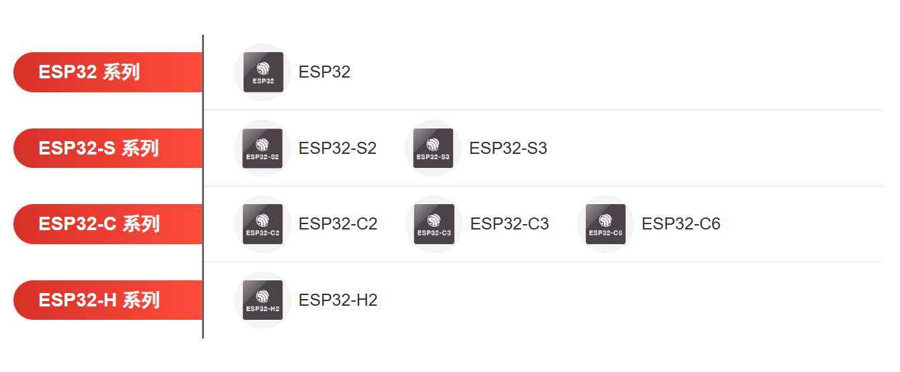
典型SOC选型：
- ESP8266 价格美丽，不再更新。搭载Tensilica L106超低功耗32位微型MCU，带有16位精简模式，时钟频率高达80MHz / 160MHz。集成2.4GHzWi-Fi MAC/BB/RF/PA/LNA和 IEEE802.11 b/g/n 协议，支持完整的TCP/IP协议栈，同时支持RTOS。
- ESP32 搭载Xtensa® 双核 32位 LX6 微处理器，时钟频率高达240 MHz，片内520 KB SRAM，448 KB ROM还可外扩PSRAM。支持 802.11b/g/n 2.4GHzWIFI，802.11n 数据速率高达 150 Mbps，支持蓝牙 4.2(LE) BR/EDR ，支持RMII有线以太网、摄像头、SDIO、I2S、IR、UART、I2C、SPI、CAN、ADC、DAC、触摸、PWM 等多种外设。
- ESP32-C3 价格美丽，替代ESP8266，搭载 RISC-V 32 位单核处理器，时钟频率高达 160 MHz，支持 2.4 GHz Wi-Fi 和 Bluetooth 5 (LE)。虽然其内部的SRAM空间比ESP32小，但实际的用户可用堆栈容量较ESP32相差无几，IO较少，不能扩展PSRAM。
- ESP32-S3 搭载Xtensa® 双核 32位 LX6 微处理器，时钟频率高达 240 MHz，内置 512 KB SRAM。加入了用于加速神经网络计算和信号处理等工作的向量指令，性能对比ESP32有可观的提升。集成 2.4 GHz Wi-Fi 和 Bluetooth 5 (LE)，拥有 45 个可编程 GPIO，外设新增LCD接口、摄像头接口、USB。
芯片，模组，开发板选型：乐鑫科技 (espressif.com.cn)
二. ESP各型号特性
注意：ESP的特性在这本文档基本列出了，但是使用到某些特性时（比如PWM分辨率的范围）需要查阅官方文档。官方文档非Arduino编程，是ESP-IDF编程的，我们主要看其芯片功能（"快速入门"板块），和外设设置参数（"API参考-外设API"板块），主要用作意外问题和相关函数参数设置参考手册。
ESP32
ESP32 在多个方面改进了 ESP8266 的设计。它提供WiFi,蓝牙和BLE（低功耗蓝牙），而ESP8266只有WiFi。它速度更快，采用双核设计。它还能够在超低功耗模式下工作，非常适合电池供电应用。板载LED : GPIO2。
※ESP32 的其他功能包括：
34 个可编程GPIO。
多达 18 个 12 位模数转换器 ADC。
2个 8 位数模转换器 DAC。
10个电容式触摸开关传感器。Touch Pin 0~9
四个 SPI 通道。
两个 I2C 接口。
两个 I2S 接口（用于数字音频）。
三个用于通信的UART。
多达 8 个通道的红外遥控器。IR
多达 16 个通道的 LED PWM（脉宽调制）。LEDC
1个 集成霍尔效应传感器。Hall
1个 超低功耗模拟前置放大器。功放
1个 内部低压差稳压器。稳压器
※仔细观察下面的管脚布局和功能图。请注意 :
- 显而易见，ESP32 上的许多引脚共享上述许多功能，因此并非所有引脚都可以同时使用。
- 带有 '!' 引脚的不推荐使用。GPIO6 ~ GPIO11，因为接了Flash
- 有的引脚(深绿色)只能设置为输入，而不能设置为输出。GPIO 34 , 35 , 36 , 39
- Strapping pin(品红色) 不优先使用。GPIO 0 , 5 , 12 , 15
- 使用时应按照GPIO名称和功能，而非按照管脚布局。
- ESP32-WROOM 和 ESP32-SOLO-1中 GPIO16 和 GPIO17 可用，ESP32-WROVER的GPIO16 和 GPIO17 保留内部使用(不可用)。
ESP32 Arduino里开发板选择 ESP32_DevModule
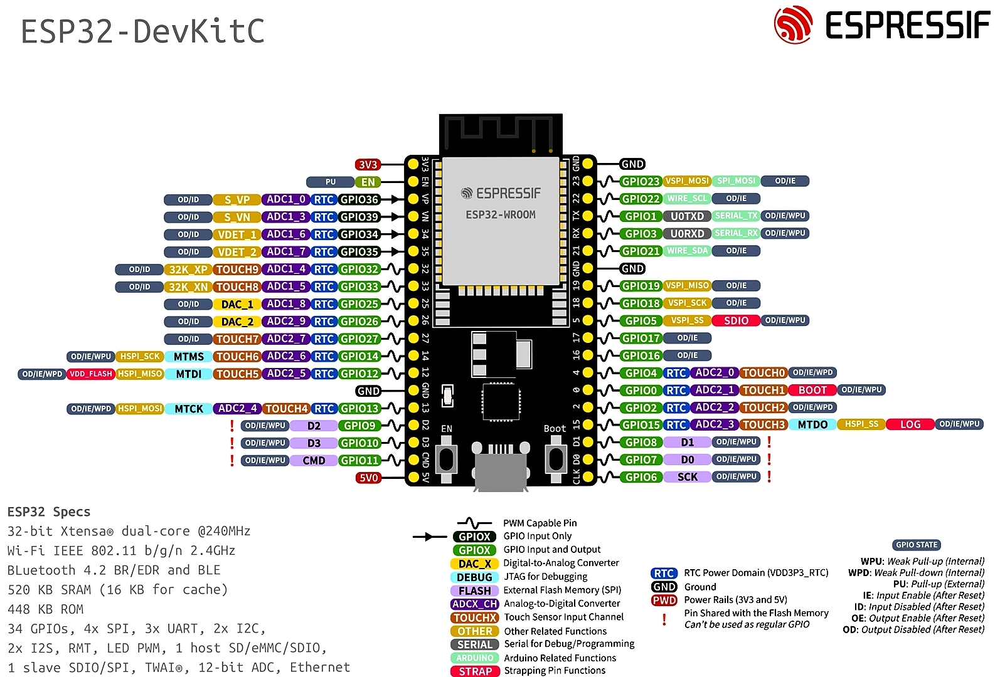
<----------------------------------------------------------分割线--------------------------------------------------------------------->
ESP32-C3
官方开发板 ESP32C3 -ESP-IDF 编程指南
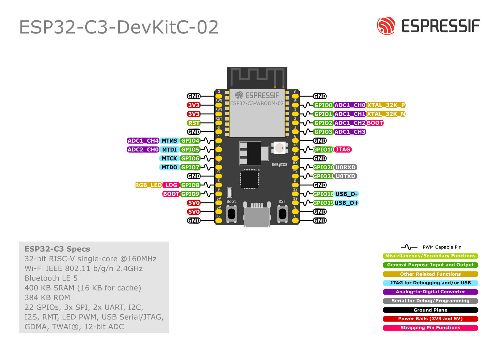
ESP32-C3合宙开发板: ESP32C3-CORE开发板文档
合宙ESP32C3 Arduino选择 AirM2M_CORE_ESP32C3。LED1 : GPIO12。 LED2 : GPIO13。BOOT: GPIO9。下载口:UART0。
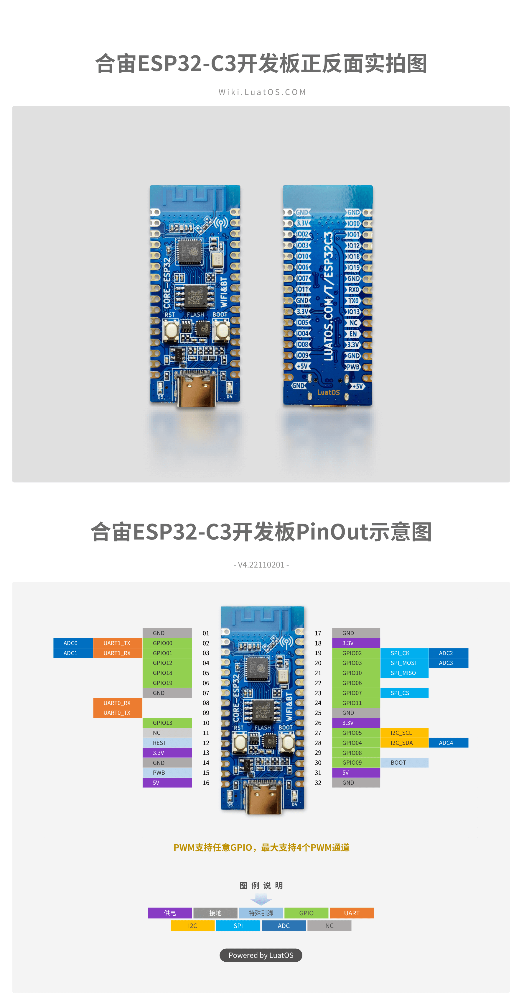
<----------------------------------------------------------分割线--------------------------------------------------------------------->
ESP32-S3
官方开发板 ESP32S3 -ESP-IDF 编程指南

ESP32-S3合宙开发板：ESP32S3-CORE开发板文档
合宙ESP32S3 Arduino选 ESP32S3_DevModule。 LEDA : GPIO10。LEDB : GPIO11。BOOT : GPIO0。
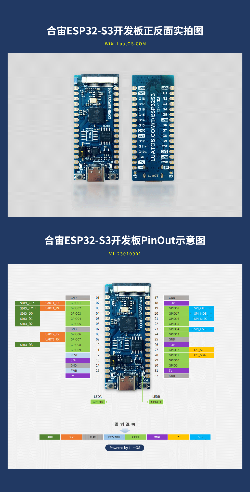
ESP32CAM
ESP32S3核心，带有一个OV2640摄像头和一个SD卡槽安信可（AiThinker）公司生产。价格实惠，但是图像传输质量不佳，可用IO引脚少。
功能：下载示例后可在网页上显示摄像头图像和调整摄像头参数，可进行人脸识别。
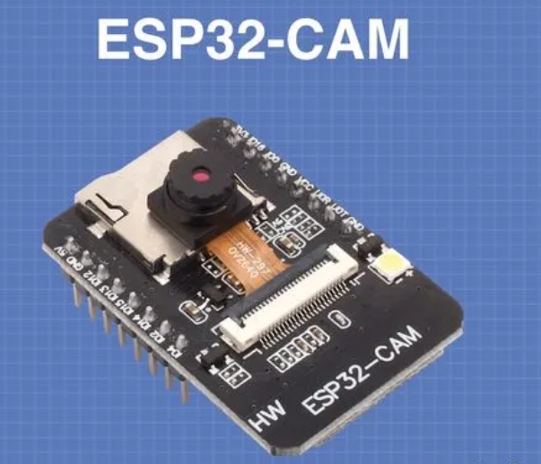
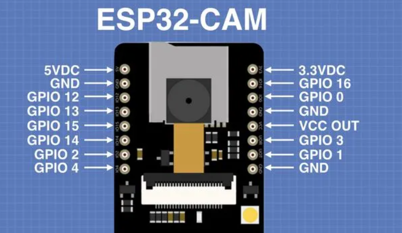
1.选择开发板AI Thinker ESP32-CAM
2.运行示例-ESP32-Camera-CameraWebServer
3.在代码中注释掉默认选用型号(CAMERA_MODEL_ESP_EYE)，取消注释CAMERA_MODEL_AI_THINKER型号 （为安信可模块ESP32CAM）
4.在代码中填写模块要连接的 WIFI的 SSID和password
5.使用ESP32CAM下载器下载
注：默认使用PCB板载天线，若想要使用外部天线，需先购买天线模块，然后使用电烙铁将天线旁0Ω电阻移动位置。
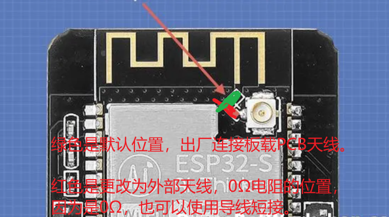
三. ESP32编程
下载程序：ESP32 ESP32-C3 ESP32-S3 自动下载，有时下载完成后按EN或RST复位键。
下载不了时：点击上传后 显示connecting.....时按下boot键，识别到后松手。有时完成下载后需按EN键复位。
串口打印信息：在物联网开发中必须掌握 使用串口获取和打印信息。
3.1 基本框架和数据类型
x//本套教程Aruino选择的开发板①ESP32 Dev Module ②ESP32S3 Dev Module ③AirM2M_CORE_ESP32C3/******************* Arduino *******************/int a = 2;float b = 1.089;char c = 'A';bool d = true; // bool型只有true和false，拼写不能改变String e = "Hello";
//以下两个函数是固定格式void setup()//复位或上电后只执行一次，相当于初始化init{}void loop()//循环执行，相当于main函数{ }
3.2 串口监视器Serial
xxxxxxxxxx/******************* 串口监视器 *******************/Serial.begin(115200); //串口监视器初始化。115200波特率，还可以选其他的速率9600... // 这个速率必须与串口监视器的速率选择一致。而且同一时间，一个串口监视器只能和一个串口通信。
int num = 0;//Arduino C语言格式打印Serial.printf("Hello,%d \n",num);
//Arduino 串口库格式打印Serial.print("Hello"); //打印Serial.println("World!"); //println等同于 print\n。打印完换行。Serial.println(num); //打印变量
串口库扩展：Arduino 的 Serial 库提供了用于串口通信的函数，主要用于与计算机或其他设备之间进行串行数据传输。以下是一些常用的 Serial 库函数，以及它们的作用、参数和返回值：
Serial.begin()
- 作用：初始化串口通信。
- 参数：通常是波特率（通信速率），例如
Serial.begin(9600)表示以 9600 比特每秒的速率初始化串口通信。 - 返回值：无（
void）。
Serial.available()
- 作用：检查串口缓冲区中是否有可用的数据。
- 参数：无。
- 返回值：返回一个整数，表示当前可用的字节数。如果没有可用数据，则返回 0。
Serial.read()
- 作用：从串口读取一个字节的数据。
- 参数：无。
- 返回值：返回一个整数，表示读取的字节的 ASCII 值。如果没有可用数据，返回 -1。
Serial.write()
- 作用：向串口发送一个字节的数据。
- 参数：一个整数，表示要发送的字节的 ASCII 值或字符。
- 返回值：无（
void）。
Serial.println()
- 作用：向串口发送一个字符串，然后换行。
- 参数：一个字符串或变量。
- 返回值：无（
void）。
Serial.print()
- 作用：向串口发送一个字符串或值。
- 参数：一个字符串、数字、字符或其他数据。
- 返回值：无（
void）。
Serial.flush()
- 作用：等待串口缓冲区中的数据被发送完毕。
- 参数：无。
- 返回值：无（
void）。
Serial.availableForWrite()
- 作用：检查串口缓冲区中还有多少可用空间。
- 参数：无。
- 返回值：返回一个整数，表示还可以写入多少字节数据到串口缓冲区。
Serial.end()会停止串口接收功能
这些函数是 Arduino 中常用的 Serial 库函数，用于进行串口通信。你可以使用它们来从串口读取数据、向串口发送数据，以及检查缓冲区中的可用数据和空间等。注意，函数的具体行为和参数可能会因不同的 Arduino 版本和硬件配置而有所不同，因此请查阅相关文档以获取更详细的信息。
3.3 GPIO init|数字模拟读写
xxxxxxxxxx// GPIO模式Mode: OUTPUT输出、INPUT输入、INPUT_PULLUP上拉输入、INPUT_PULLDOWN下拉输入//PIN是可以自己填写的GPIO引脚号，如：12 。value是自己填写的值，如：125。pinMode(PIN,INPUT);// 输入 GPIO默认模式pinMode(PIN,OUTPUT);// 输出
//数字IO操作digitalWrite(PIN,HIGH);// 数字GPIO写 HIGH 1 ；LOW 0 digitalRead(PIN);// 数字GPIO读 HIGH 1 ；LOW 0// 当引脚以数字输出模式工作时，低电平是0V，高电平是3.3V。
//模拟IO操作analogRead(PIN);//模拟GPIO读。读取引脚电压变化。10位ADC读出来的值0-1023。12位ADC 0-4095 touchRead(T0); //T0是规定的pin代号。读取触摸引脚的值,以数字大小呈现。hallRead(); //括号内无参数。读取霍尔传感器的值，以数字大小呈现。analogWrite(PIN，value);/*输出矩形波。PWM占空比。该函数默认8位精度，即2^8=256。value有256个分段。介于 0（0%占空比）和255（100%占空比）之间。value=127时约等于50%占空比。*/xxxxxxxxxx//点灯示例//板载led esp32：pin2 | esp32-c3：pin12,13 | esp32-s3：pin10,11int led1 = 12;int led2 = 13;void setup(){ pinMode(led1, OUTPUT); pinMode(led2, OUTPUT); Serial.begin(115200);}
void loop(){ //LED1 LED2交替闪烁 digitalWrite(led1, HIGH); digitalWrite(led2, LOW); delay(2000); //ms digitalWrite(led1, LOW); digitalWrite(led2, HIGH); delay(1000); //数字读和串口打印 Serial.print("led1的电平:"); Serial.println(digitalRead(led1)); Serial.print("led2的电平:"); Serial.println(digitalRead(led2));}
3.4 延时函数
xxxxxxxxxx/******************* delay *******************/delay(500); //延时msdelayMicroseconds(500);//延时usmillis(); //millis()函数用于获取自系统启动以来的毫秒数,复位后重新计时。// millis();返回一个unsigned long，32位，可表示的最大值为4294967295ms，约49.71天。// 这个函数基于系统的时钟计数器，该计数器从启动时开始递增。上电时millis()=0// 溢出处理： 由于返回类型是无符号长整型，当计时器达到最大值后，会发生溢出。这意味着在4,294,967,295毫秒（约49.71天）之后，计时器将从0重新开始。// 定时功能： millis()函数通常用于实现定时功能。通过在代码中记录特定事件的时间戳，您可以计算自上次事件发生以来经过的时间，从而执行定时任务。
// 下面是一个简单的示例，演示如何使用millis()函数创建一个简单的定时器：unsigned long previousMillis = 0; // 保存上一次定时器触发的时间const long interval = 1000; // 定时器间隔，单位为毫秒void setup() { }void loop() { unsigned long currentMillis = millis(); // 获取当前时间
// 检查是否达到定时器间隔 if (currentMillis - previousMillis >= interval) { // 保存当前时间作为下一次的定时器触发时间 previousMillis = currentMillis;
// 在这里执行定时任务 // 例如，闪烁LED digitalWrite(LED_BUILTIN, !digitalRead(LED_BUILTIN)); }
// 其他循环中的代码}// 这个示例使用millis()函数创建了一个简单的定时器，每隔1秒就会触发一次，闪烁一次板载LED。
3.5 霍尔传感器和触摸读取
xxxxxxxxxx// 霍尔传感器仅ESP32有1个，C3S3没有。// “HallSensor” 简单的ESP32霍尔传感器值读取：检测磁场。// 初始值可能非常低0以下 。检测到磁场后数值可达 弱几十，强上百（有极性，即±）。int num = 0; void setup() { Serial.begin(115200); delay(1000); // 一定的延时以拉起串口监视器}
void loop() { num = hallRead(); //※ hallRead() 读取值。 Serial.print("HallSensor: "); Serial.println(num); delay(200);}xxxxxxxxxx// 触摸读取引脚测试 T0 (Touch0) 在GPIO4上// Touch Pin 在ESP32、ESP32-S3上有，ESP32-C3没有。// 摸得越瓷实数值越接近0void setup(){ Serial.begin(115200); delay(1000); // 一定的延时以拉起串口监视器 Serial.println("ESP32触摸引脚测试");} void loop(){ Serial.print("读取TouchPin0的值: ");//在Arduino串口监视器打印信息 Serial.println( touchRead(T0) ); // 触摸后值会从100左右变成接近0 delay(1000); Serial.print("读取TouchPin1的值: ");//在Arduino串口监视器打印信息 Serial.println( touchRead(T1) ); // 触摸后值会从100左右变成接近0}
3.6 中断
xxxxxxxxxx/******************* 中断 *******************///esp32每个引脚都可以设置为中断void IRAM_ATTR function_name() { } //中断函数，这个函数要写在setup()前面void setup(){ attachInterrupt(digitalPinToInterrupt(GPIO), function_name, mode); }/* 三个参数: GPIO,中断函数名,中断触发模式参数1: 指定中断的GPIO ，例如 digitalPinToInterrupt(9)参数2: 中断回调函数，注意中断函数前需要加上 IRAM_ATTR 声明 如： void IRAM_ATTR function_name() { ... } function_name：自拟的函数名参数3: 五个中断触发方式， LOW:低 HIGH:高 CHANGE:电平改变 FALLING:下降沿 RISING:上升沿 */3.7 ADC 模数转换
如何使用 ESP32 ADC 外设 (electronicshub.org)
ADC参数：
ADC : 模拟数字转换器，读取GPIO引脚模拟电压，并将其转化为对应的数字。
关键词：ADC引脚，ADC通道，ADC衰减，ADC分辨率，ADC转换速度
①ADC引脚：某些引脚才具有ADC功能，ESP32 ADC引脚输入电压范围：0到3.9伏特（V）。
②分辨率：所谓数字刻度由分辨率决定，分辨率位数越高，读取的值可以更加精细。如：28=256，210=1024 , 212=4096 。
③ADC的衰减(attenuation):是指输入信号电压的减小或缩小，以便在ADC输入引脚上测量较大范围的电压 。
衰减模式：为了能够测量更大范围的电压，ESP32提供了不同的衰减模式。衰减模式允许你将输入电压范围扩展到更大的范围，例如0到3.3V或0到2.6V。
可用的衰减选项：通常，ESP32提供以下衰减选项：
ADC_0db：无衰减，输入电压范围是0到1.1V。ADC_2_5db：2.5dB的衰减，输入电压范围是0到1.5V。ADC_6db：6dB的衰减，输入电压范围是0到2.6V。ADC_11db：11dB的衰减（默认），输入电压范围是0到3.9V。
理解衰减：衰减就像放大器，它减小了输入电压信号的大小，以适应ADC的输入范围。例如，如果你选择11dB的衰减，输入信号的电压将被缩小，使得3.9V的信号可以被正确测量，而不会超出ADC的1.1V默认范围。
选择合适的衰减：选择合适的衰减模式取决于你的应用中使用的电压信号范围。如果你测量的电压不会超过1.1V，则可以使用默认的
ADC_0db模式。但如果你需要测量较大范围的电压，则应选择适当的衰减模式，以确保测量的准确性。总之，ADC衰减是ESP32的一个功能，用于扩展ADC输入信号的测量范围，使其适用于不同的应用场景。选择正确的衰减模式对于准确测量输入电压非常重要，特别是在使用不同电压信号的传感器或设备时。
④ADC转换速度：和 时钟分频系数 以及 转换周期 有关。
⑤ADC通道在ESP32中，ADC通道的设置用于指定要连接到ADC引脚的物理输入通道。这些通道设置对于确定要测量的模拟输入信号非常重要。以下是ADC通道设置的作用：
- 选择输入信号：通过选择正确的ADC通道，你可以确定要测量的模拟输入信号。每个ADC通道通常与芯片上的一个物理引脚相对应，因此通过设置通道，你可以告诉ESP32从哪个引脚读取模拟信号。
- 多路复用：ESP32的ADC引脚通常具有多路复用功能，这意味着它们可以用于不同的用途，包括数字输入/输出和模拟输入。通过设置ADC通道，你将引脚配置为模拟输入，从而可以测量外部传感器或模拟信号。
- 多通道测量：ESP32通常具有多个ADC通道，允许你同时测量多个模拟输入信号。通过选择不同的通道，你可以在单次ADC转换或连续ADC转换中获取多个信号的数据。
- 位宽和分辨率：不同的ADC通道设置可能会影响位宽和分辨率。例如，某些通道可能支持更高的位宽，提供更精确的测量结果。
- 通道衰减：ADC通道设置还可以与通道衰减一起使用，以扩展输入电压范围。通道衰减允许你测量比默认电压范围更高的电压信号。
总之，ADC通道设置是指定ESP32模拟输入的关键参数。选择适当的通道设置非常重要，以确保你测量的是正确的模拟信号，以及以所需的精度和电压范围进行测量。在具体应用中，你需要了解连接到ESP32的传感器或模拟信号的特性，并相应地配置ADC通道以进行测量。
ADC库常用函数：
analogRead()函数用于读取模拟输入电压的数字值，其他函数用于配置和控制ADC的各种参数。
analogRead(pin)：- 作用：读取指定引脚上的模拟输入电压，并将其转换为数字值。
- 参数：
pin是要读取的引脚号，通常是从0到41。 - 返回值：返回0到4095之间的整数，表示模拟输入电压的数字值。4095通常对应于模拟输入电压的最大值，12位分辨率。
analogReadResolution(bits)或analogSetWidth(bits)：- 作用：设置ADC的位宽bit，以决定模拟输入电压的分辨率。
- 参数：
bits是位宽，通常可以设置为9、10、11或12。较高的位宽提供更高的分辨率，但可能需要更多的转换时间。 - 返回值：无（
void）。
analogSetCycles(cycles)：- 作用：设置ADC转换周期，以控制模数转换的速度。
- 参数：
cycles是转换周期的数量。 - 返回值：无（
void）。
analogSetClockDiv(attenuation)：- 作用：设置ADC时钟分频系数，以控制转换速度。
- 参数：
attenuation是时钟分频系数，通常是2、4、8、16、32、64、128或256。 - 返回值：无（
void）。
analogSetAttenuation(attenuation)：- 作用：设置所有ADC输入引脚的衰减模式，以适应不同范围的输入电压。
- 参数：
attenuation是衰减模式，通常可以设置为ADC_0db、ADC_2_5db、ADC_6db或ADC_11db。 - 返回值：无（
void）。
analogSetPinAttenuation(pin, attenuation)：- 作用：设置特定引脚的ADC衰减模式。
- 参数：
pin是要设置的引脚号，attenuation是衰减模式。 - 返回值：无（
void）。
这些函数允许你配置和使用ESP32的ADC功能，以读取模拟输入信号的值。你可以设置位宽、转换周期、时钟分频、衰减模式等参数，以满足你的应用需求。
ADC读取示例：
xxxxxxxxxx//可以读取模拟输出的旋转电位器//注：引脚在浮空状态下测量不准。只有接地或有电压时才能稳定读取。int PIN = 0; //读取ADC0,在GPIO0上。void setup() { Serial.begin(115200); pinMode(PIN, INPUT); // 配置GPIO 0作为模拟输入 analogReadResolution(12); // 设置12位位宽的分辨率，范围0~4095,0 ~ 2^12-1 analogSetClockDiv(255); // 设置时钟分频系数（0-255），这里设置为255，最慢的转换速度 analogSetPinAttenuation(PIN, ADC_11db); //设置衰减模式,ADC_11db读取范围0~3.9V}
void loop() { // 读取GPIO 0上的模拟电压 int Value = analogRead(PIN);
Serial.print("GPIO 0的模拟电压: "); Serial.print(Value); Serial.println(" (0-4095)");
// 等待一段时间再进行下一次读取 delay(1000);}
3.8 PWM LEDC
深度 ESP32 PWM 教程 |如何在 ESP32 中使用 PWM？ (electronicshub.org)
LED专用通道：LEDC用来精细控制LED的PWM，而非AnalogWrite()
设计用来控制LED，可以作简单的PWM输出。对LED实现精细控制。 ESP32 LEDC总共有16个路通道（0 ~ 15），高速通道（0 ~ 7）由80MHz时钟驱动，低速通道（8 ~ 15）由1MHz时钟驱动。PWM控制器可以自动逐渐增加或减少占空比，从而不会受到任何处理器干扰（类似于定时器）。
xxxxxxxxxx/* 此示例显示如何软件淡入淡出LED 使用 ledcWrite() 函数。 */// 使用通道0。通道范围: 0~15 ，芯片ESP32。// 对LEDC定时器使用12位精度。 范围: 8,10,12// 使用5000Hz作为LEDC基本频率。范围:1Hz到40MHz// 淡入淡出LED引脚int brightness = 0; // LED亮度的初始值。range:0~255，0表示关闭，255表示最大亮度。int fadeAmount = 5; // 将LED淡化/增强多少点。range:-255~255，负值表示减少亮度，正值表示增加亮度。
void setup() { ledcSetup(LEDC_CHANNEL_0, LEDC_BASE_FREQ, LEDC_TIMER_12_BIT);// 初始化设置定时器 ledcAttachPin(LED_PIN, LEDC_CHANNEL_0); //将定时器附加到 LED所在引脚}
void loop() { ledcWrite(LEDC_CHANNEL_0, brightness); // 设置LED channel 0上的亮度，第二个值是占空比 brightness = brightness + fadeAmount;//初始值 + 淡化/增强数 // LED值溢出后，进行回滚， if (brightness <= 0 || brightness >= 255) { fadeAmount = -fadeAmount; //反转淡入淡出状态 } delay(30); // 等待 30 毫秒以查看调光效果}
把0~4095的分度值区间 映射到0~255区间：
xxxxxxxxxx// 该自定义函数作用：类似于Arduino的analogWrite(), 值必须介于 0 和最大值之间void ledcAnalogWrite(uint8_t channel, uint32_t value, uint32_t valueMax = 255) { // 使用Bit分辨率计算占duty_cycle, 12位精度，4095 = 2^12 - 1。 uint32_t duty = (4095 / valueMax) * min(value, valueMax);//这句话相当于把4095区间映射到255区间，4095*（所给值/255，即占空比） ledcWrite(channel, duty); // 写入 LEDC 的占空比}
3.9 Ticker和Timer定时器
ESP32的Ticker库和Timer库都是用于定时任务调度的工具，但它们在用法和特性上有一些不同之处：
Ticker库：
简单性：Ticker库提供了一个简单的接口，用于创建定时器，无需过多的配置。你可以通过
Ticker对象的attach方法来附加一个函数，然后定期调用这个函数。适用于短周期任务：Ticker库通常用于执行短周期的任务，例如以毫秒为单位的定时任务。这个库的精度相对较低，适用于需要周期性执行的简单任务。
无法取消：一旦创建并启动，Ticker无法被取消或停止，除非你重置ESP32。
xxxxxxxxxxTicker ticker;// 创建Ticker对象ticker ，后面使用ticker.xx()调用库函数。//注：Ticker后创建的对象名是自拟的，叫xiaoming也可以，这样后调用库函数的时候，得使用xiaoming.xx()。// 定时器回调函数void onTicker() {}void setup() {ticker.attach(1000, onTicker); // 每秒执行一次onTimer函数，onTimer回调函数名也是自拟的。}void loop() {}
Timer库：
更灵活的配置：Timer库提供了更丰富的配置选项。你可以创建定时器对象并配置定时器的周期、回调函数等属性。这使得Timer库更适合复杂的定时任务。
适用于长周期任务：Timer库可以用于执行长周期的任务，例如以微秒为单位的任务。它的精度相对较高，适用于需要高精度的任务。
可取消：你可以随时停止或取消Timer，而不必重置ESP32。
xxxxxxxxxxhw_timer_t *timer = NULL;//定时器回调函数void IRAM_ATTR onTimer() //注：和前面中断一样，IRAM_ATTR声明不可省略。{// 你的定时任务代码}void setup(){timer = timerBegin(0, 80, true); // 创建一个定时器对象，分频系数为80timerAttachInterrupt(timer, &onTimer, true); // 附加回调函数timerAlarmWrite(timer, 1000000, true); // 设置定时器周期为1秒(1000000us)timerAlarmEnable(timer); // 启用定时器}void loop(){// 主循环代码}
Ticker定时器
xxxxxxxxxx/* Ticker1让同一个函数在不同的时间间隔内执行不同的任务，这在控制多个设备或交替执行任务时非常有用。这里是控制两个LED以不同频率点亮 * 演示Ticker 和 传入参数 的配合使用 * 您可以在不同的时间调用具有不同参数的同一回调函数。 * 根据参数，回调可以执行不同的任务。*/
// 函数的参数必须保持有效（不超出范围），否则函数将读取垃圾数据。int LED1 = 12;int LED2 = 13;Ticker tickerSetHigh; //创建Ticker对象tickerSetHighTicker tickerSetLow; //创建Ticker对象tickerSetLow
// 定时器函数，回调的参数必须始终传递引用/*这是一个回调函数，用于在定时器触发时执行。它的参数是一个指向整数的指针，表示LED引脚的地址。在函数内部，它交替地切换LED引脚的状态（高电平和低电平），并通过串行通信输出信息，以指示何时设置引脚的电平。*/void changeState(int *pin) { static int led1_state = 1; static int led2_state = 1; if(*pin == LED1) { Serial.printf("[%lu ms] 设置引脚电平 %d 为: %d\n", millis(), *pin, led1_state); digitalWrite(*pin, led1_state); led1_state = led1_state ? 0 : 1; // 条件表达式，作用是反转电平 } else if(*pin == LED2) { Serial.printf("[%lu ms] 设置引脚电平 %d 为: %d\n", millis(), *pin, led2_state); digitalWrite(*pin, led2_state); led2_state = led2_state ? 0 : 1; // 条件表达式，作用是反转电平 }}
void setup() { Serial.begin(115200); pinMode(LED1, OUTPUT); pinMode(LED2, OUTPUT); // 参数一：定时时间。 // 参数二：定时器函数。 // 参数三：是传参，定时传参，定时把LED1/LED2的地址传给定时器函数，定时器函数传入参数一直检测是LED1传入还是LED2传入，如果其中一个参数传入，则执行对应的代码：点亮LED tickerSetLow.attach_ms(500, changeState, &LED1);// 每500ms闪烁一次LED1 tickerSetHigh.attach_ms(1000, changeState, &LED2);// 每1000ms闪烁一次LED2}
void loop() {}xxxxxxxxxx//Ticker2 闪光灯
// 连接一个LED到 GPIO 12
Ticker blinker;Ticker toggler;Ticker changer;float blinkerPace = 0.1; //secondsconst float togglePeriod = 5; //seconds
void change() { blinkerPace = 0.5;}
void blink() { digitalWrite(LED_PIN, !digitalRead(LED_PIN));}
void toggle() { static bool isBlinking = false; if (isBlinking) { blinker.detach(); isBlinking = false; } else { blinker.attach(blinkerPace, blink); isBlinking = true; } digitalWrite(LED_PIN, LOW); //切换后确保 LED 亮起 (pin LOW = led ON)}
void setup() { pinMode(LED_PIN, OUTPUT); toggler.attach(togglePeriod, toggle); changer.once(30, change);}
void loop() { }xxxxxxxxxx//Ticker 指针和任务调度示例/* 让同一个函数在不同的时间间隔内执行不同的任务，这在控制多个设备或交替执行任务时非常有用。*/
int a = 800;int b = 1000;int* c = &a; //把 a地址 赋给 c指针int* d = &b; //把 b地址 赋给 d指针Ticker dummy; //创建Ticker对象dummyTicker dokie; //创建Ticker对象dokie
void test(int *who) //先把传参赋给*who,函数内判断哪个值传入了{ Serial.println("haha"); //四秒执行了三次 = 2+1 if(*who == *c) //每两秒执行一次，四秒执行两次 { *c +=1; Serial.print("a:"); Serial.println(*c); //delay(1000);演示任务调度时使用500,1000,2000，看输出结果理解任务调度 } else if(*who == *d) //每四秒执行一次 { *d +=2; Serial.print("b:"); Serial.println(*d); }}
void setup() { Serial.begin(115200); delay(3000); // 参数一：定时时间。 参数二：定时器函数。 参数三：是传参，定时传参， dummy.attach_ms(2000, test, &a);// 每2000ms传参一次 dokie.attach_ms(4000, test, &b);// 每4000ms传参一次}
void loop() {}
Timer定时器
每一定时间运行，按键按下停止，按下RST重新开始计时
xxxxxxxxxx/* 重复计时器示例本示例展示了如何在 ESP32 中使用硬件定时器。计时器调用 onTimer 每秒运行。计时器可以通过连接到GPIO9（合宙ESP32C3的BOOT按键）的按钮停止。 */hw_timer_t * timer = NULL;
volatile SemaphoreHandle_t timerSemaphore;portMUX_TYPE timerMux = portMUX_INITIALIZER_UNLOCKED;
volatile uint32_t isrCounter = 0;volatile uint32_t lastIsrAt = 0;//回调函数void ARDUINO_ISR_ATTR onTimer(){ portENTER_CRITICAL_ISR(&timerMux);// 递增计数器并设置 ISR 的时间 isrCounter++; lastIsrAt = millis(); portEXIT_CRITICAL_ISR(&timerMux); xSemaphoreGiveFromISR(timerSemaphore, NULL);// 给出一个我们可以在循环中检查的信号量 // 如果要切换输出，可以安全地在这一行使用数字读/写}
void setup() { Serial.begin(115200); pinMode(BTN_STOP_ALARM, INPUT);// 将BTN_STOP_ALARM设置为输入模式 timerSemaphore = xSemaphoreCreateBinary();// 创建信号量以在计时器触发时通知我们 timer = timerBegin(0, 80, true);/*使用第0个计时器（范围 0~3）为预分频器设置80分频器 16位定时器（T1、T2、T3、T4）。32位定时器（T0、T5、T6、T7）分频器的设置也可以影响计时时间。*/ timerAttachInterrupt(timer, &onTimer, true);// 将 onTimer 功能附加到我们的计时器。 timerAlarmWrite(timer, 1000000, true);//每1000000us调用一次onTimer函数。重复警报（第三个参数） timerAlarmEnable(timer); // 启动alarm}
void loop() { if (xSemaphoreTake(timerSemaphore, 0) == pdTRUE) // 如果计时器已触发 { uint32_t isrCount = 0, isrTime = 0; // 读取中断计数和时间 portENTER_CRITICAL(&timerMux); isrCount = isrCounter; isrTime = lastIsrAt; portEXIT_CRITICAL(&timerMux); // 打印 Serial.print("onTimer no. "); Serial.print(isrCount); Serial.print(" at "); Serial.print(isrTime); Serial.println(" ms"); } // 如果按下按钮 if (digitalRead(BTN_STOP_ALARM) == LOW) { // 如果计时器仍在运行 if (timer) { timerEnd(timer);// 停止和释放计时器 timer = NULL; } }}
3.10 ※※WIFI
如何创建 ESP32 网页服务器？完整的初学者教程 (electronicshub.org)
WIFI有两个模式：
- STA相当于设备模式，是ESP32要连接你家里的WIFI。Station。
- AP相当于路由器模式，是ESP32创建WIFI；Access Point。
SSID：WIFI名称。password：WIFI密码。RSSI：信号强度。channel：WIFI信道。
WiFi API
API ,注：void表示无需参数,本文档均适用, 实际使用时括号内不用写void。
包含头文件
#include "WiFi.h"WiFi.mode();参数：WIFI_STA或WIFI_AP。用于设置WIFI工作模式，初始化。WiFi.begin(ssid, password);参数：WIFI名和密码。启动WIFI连接。WiFi.disconnect(void);用于断开WIFI的连接（若有），扫描网络前的准备工作。WiFi.scanNetworks(void);返回值：扫描到的网络数量。启动WIFI扫描（无需/不能连接WIFI）。WiFi.SSID(i): 返回值：第i个Wi-Fi的SSID。.c_str(): 这是将C++字符串转换为C风格字符串的方法。WiFi.RSSI(i): 返回值：第i个Wi-Fi的RSSI（信号强度dB）。WiFi.channel(i): 返回值：第i个Wi-Fi的信道（信道是 Wi-Fi 网络中用于通信的无线频率），是一个整数。例如，如果返回信道为 6，表示 Wi-Fi 网络工作在 2.4 GHz 频段的第 6 个信道上。WiFi.scanDelete(void);: 删除扫描结果以释放内存。WiFi.localIP(void)：返回值：返回设备在WIFI中的IP地址，如192.168.0.11。WiFi.encryptionType(i): 返回第i个网络的加密类型。返回值：整数，但是为enum类型。WIFI_AUTH_OPEN，0，表示开放网络。WIFI_AUTH_WEP，1，表示使用WEP加密。WIFI_AUTH_WPA_PSK，2，表示使用WPA加密，PSK模式。WIFI_AUTH_WPA2_PSK，3，表示使用WPA2加密，PSK模式。WIFI_AUTH_WPA_WPA2_PSK，4，表示同时支持WPA、WPA2加密，PSK模式。WIFI_AUTH_WPA2_ENTERPRISE，5， 使用 WPA2 加密，企业级身份验证。WIFI_AUTH_WPA3_PSK，使用 WPA2 加密，PSK模式。WIFI_AUTH_WPA2_WPA3_PSK，同时支持 WPA2、WPA3 加密，PSK模式。WIFI_AUTH_WAPI_PSK。
WiFi.status(void)返回WIFI连接状态。返回值：整数，但是为enum类型。- WL_IDLE_STATUS (0) 处于空闲状态，即未连接到任何网络。
- WL_NO_SSID_AVAIL (1) 未找到指定的 Wi-Fi 网络（SSID）。
- WL_SCAN_COMPLETED (2) 扫描已完成。
- WL_CONNECTED (3) 成功连接到 Wi-Fi 网络。
- WL_CONNECT_FAILED (4) 连接失败。
- WL_CONNECTION_LOST (5) 与 Wi-Fi 网络的连接丢失。
- WL_DISCONNECTED (6) 与 Wi-Fi 网络断开连接。
- WL_NO_SHIELD (255) 未找到 Wi-Fi 模块。
STA 扫描获取周围WIFI信息
xxxxxxxxxxvoid setup(){ Serial.begin(115200);
// 将 WiFi 设置为STA模式，如果之前已连接 AP，则断开与 AP 的连接。 WiFi.mode(WIFI_STA); WiFi.disconnect(); delay(100);
Serial.println("设置完成");}
void loop(){ Serial.println("开始扫描");
// WiFi.scanNetworks 将返回找到的网络数。 int n = WiFi.scanNetworks(); Serial.println("扫描完成"); if (n == 0) { Serial.println("未找到网络"); } else { Serial.print(n); Serial.println(" 找到网络"); Serial.println("Nr | SSID | RSSI | CH | Encryption"); for (int i = 0; i < n; ++i) { // 为找到的每个网络打印 SSID 和 RSSI 信号强度，打印n次。 Serial.printf("%2d",i + 1); Serial.print(" | "); Serial.printf("%-32.32s", WiFi.SSID(i).c_str()); Serial.print(" | "); Serial.printf("%4d", WiFi.RSSI(i)); Serial.print(" | "); Serial.printf("%2d", WiFi.channel(i)); Serial.print(" | "); switch (WiFi.encryptionType(i)) //返回网络加密类型并打印 { case WIFI_AUTH_OPEN: Serial.print("open"); break; case WIFI_AUTH_WEP: Serial.print("WEP"); break; case : Serial.print("WPA"); break; case WIFI_AUTH_WPA2_PSK: Serial.print("WPA2"); break; case WIFI_AUTH_WPA_WPA2_PSK: Serial.print("WPA+WPA2"); break; case WIFI_AUTH_WPA2_ENTERPRISE: Serial.print("WPA2-EAP"); break; case WIFI_AUTH_WPA3_PSK: Serial.print("WPA3"); break; case WIFI_AUTH_WPA2_WPA3_PSK: Serial.print("WPA2+WPA3"); break; case WIFI_AUTH_WAPI_PSK: Serial.print("WAPI"); break; default: Serial.print("unknown"); } Serial.println(); delay(10); } } Serial.println("");
// 删除扫描结果以释放以下代码的内存。 WiFi.scanDelete();
// 请稍等片刻，然后再次扫描。 delay(5000);}WiFiMulti API
包含头文件
#include <WiFiMulti.h>，用于连接多个WIFI之一。实例化对象
WiFiMulti wifimultiwifimulti.addAP("SSID1", "PASSWORD1");参数1：SSID，参数2：password。wifimulti.addAP("SSID2", "PASSWORD2");用于保存要连接的WIFI名和密码。可调用多个，会自动连接信号最强的WIFI。
wifimulti.run(void)：启动对上面所保存WIFI的连接。返回值：若成功则返回WL_CONNECTED。
STA 连接多个WIFI
xxxxxxxxxx/*此示例根据给定WIFI列表连接到最佳WIFI*/
WiFiMulti wifimulti; //创建WiFiMulti库的对象，叫做wifimulti，后面使用改名调用库函数。
void setup(){ Serial.begin(115200); delay(10);
wifimulti.addAP("SSID1", "PASSWORD1"); wifimulti.addAP("SSID2", "PASSWORD2"); wifimulti.addAP("SSID3", "PASSWORD3");
Serial.println("正在连接 Wifi..."); // wifiMulti.run() 作用:搜索addAP函数所存储的WiFi。成功则返回WL_CONNECTED。 if(wifimulti.run() == WL_CONNECTED) { Serial.println(""); Serial.println("WiFi 已连接"); Serial.println("IP 地址: "); Serial.println(WiFi.localIP()); }}
void loop(){ if(wifimulti.run() != WL_CONNECTED) { Serial.println("WiFi未连接!"); delay(1000); }}Client&Server API
API
包含头文件
#include <WiFi.h>WiFiServer server(80);参数：端口号。实例化对象WiFiServer为Server，并传入客户端侦听信息。server.begin(void);：启动Web服务器。server.available(void)：用于检查是否有客户端请求连接到服务器，返回一个WiFiClient对象。返回值：若有则返回一个新的客户端对象。若没有，则返回一个空的客户端对象。WiFiClient client = server.available();：实例化对象并将侦听传入客户端，需要循环执行以进行监测，放在Loop里面。if (client)是一个条件语句，用于检查WiFiClient对象是否有效。在 C++ 中，类对象可以被隐式地转换为布尔值，其效果是检查对象是否为有效对象。client.available(void)返回值：一个整数 。获取当前可用的字节数，即已经从客户端接收到的字节数。通过调用available()可以查看当前可用的字节数，可以根据需要使用这些字节进行处理。client.connected(void)：用于检查与客户端的连接状态。返回一个布尔值，连接则为true。client.read(void): 从客户端读取一个字节的数据。返回值：返回的是读取的字节（int），如果没有可用的数据，返回 -1。client.readBytes(buffer，length)：参数：缓冲区 和 缓冲区长度，返回值；整数。从客户端读取指定长度的数据到缓冲区。client.readStringUntil(终止符)参数：终止符。返回值:一个String对象。从客户端读取数据直到遇到指定的终止符。client.flush(void)：清空输入缓冲区中的所有数据。client.stop(void)：关闭与客户端的连接，释放相关资源。client.print(数据)/client.println(数据)：参数： 数据。发送数据到客户端。client.write(数据)：参数：数据。将数据写入客户端。String的成员函数 ：注意使用不当会导致内存碎片。
String.length(void)获取字符串的长度，即字符串中字符的个数。返回值：int。String.endsWith(String)检查字符串是否以指定的后缀结束。返回值：bool。String.charAt(num)查找当前String里该索引处的字符。返回值：char。String.indexOf(String)查找子String在当前String里第一次出现的索引值。参数：String，起始索引（可选）。String.substring(num,num)从当前String提取一个子String。参数：起始索引，结束索引值（可选）。String.c_str(String)返回一个指向当前String的char* 。将C++字符串转换为C风格字符串的方法。String.toCharArray(buffer，num)将当前String复制到char数组，参数：数组名和数组长度。String.concat(String)将新String连接到当前String的末尾。
STA 创建Web服务器
xxxxxxxxxx/* WiFi Web Server LED Blink 无线网络服务器指示灯闪烁
一个简单的网络服务器，可让您通过网络闪烁 LED。 此草图将打印您的WiFi模块(ESP32)的IP地址（一旦连接） 到串行监视器。从那里，您可以在网络浏览器中打开该地址 以打开和关闭引脚12上的 LED。*/
int LED = 12;const char* ssid = "HUAWEIMate20pro";const char* password = "cxzzhu11";
WiFiServer server(80); //创建WiFiServer对象叫做server，并传入客户端侦听信息，端口号80。
void setup(){ Serial.begin(115200); pinMode(LED, OUTPUT); // 设置 LED 引脚模式
delay(10);
// 我们从连接到WiFi网络开始，打印可视化信息 Serial.println(); Serial.println(); Serial.print("正在连接到 "); Serial.println(ssid); //开始连接 WiFi.begin(ssid, password);
while (WiFi.status() != WL_CONNECTED) { delay(500); Serial.print("."); }
Serial.println(""); Serial.println("WiFi 已连接."); Serial.println("IP 地址: "); Serial.println(WiFi.localIP()); server.begin();
}
void loop(){ WiFiClient client = server.available(); // 侦听传入客户端
if (client) { // 如果您获得客户端, Serial.println("新客户端."); // 从串行端口打印出消息 String currentLine = ""; // 定义一个空字符串，以保存来自客户端的传入数据
while (client.connected()) // 客户端连接时循环，BOOL { if (client.available()) // 如果返回的值大于零，表示有数据可供读取。 //client.available()通常返回的是一个整数值（int），而不是布尔值（bool）。这个整数值表示可用的字节数或数据量。 { char c = client.read(); // 读取一个字节 Serial.write(c); // 将其打印出串行监视器 if (c == '\n') { // 如果字节是换行符
// 如果当前行为空，则连续有两个换行符. // 这是客户端 HTTP 请求的结束，因此请发送响应： if (currentLine.length() == 0) {
// HTTP标头始终以响应码开头（例如 HTTP/1.1 200 OK） // 和内容类型：text,plain,html,image // 这些符号 引号"" 冒号: 分号; 甚至空格 换行。 对于网页都是敏感词，如果要直接打印出来加\转义符 client.println("HTTP/1.1 200 OK"); client.println("Content-type:text/html;charset=\"UTF-8\" "); // ""内分号不要漏掉, client.println();// HTTP标头以空行结尾
// HTTP 响应: 注：<br>换行符 client.print("AP Mode\: 访问H网页 <a href=\"/H\"> 点亮 LED </a> <br>");//作用是创建/H连接 client.print("AP Mode\: 访问L网页 <a href=\"/L\"> 熄灭 LED </a> <br>");//作用是创建/L连接 client.println();// HTTP响应以空行结尾
// 跳出while 循环: break; } else { // 如果您有换行符，则清除当前行: currentLine = ""; } } else if (c != '\r') { // 如果你除了回车符之外还有别的东西， currentLine += c; // 把它添加到当前行的末尾 }
/* 检查客户端回复是 "GET /H" 或 "GET /L":如果您的模块的IP地址是192.168.43.180： 访问http://192.168.43.180/H 指示灯亮起。访问http://192.168.43.180/L 将其关闭。
currentLine是已经定义的储存变量的字符串， endsWith()函数用于检查currentLine是否以指定的字符串结尾，并分别返回true和false */ if (currentLine.endsWith("GET /H")) { digitalWrite(LED, HIGH); // GET /H 打开LED } if (currentLine.endsWith("GET /L")) { digitalWrite(LED, LOW); // GET /L 关闭LED } } } //关闭连接 client.stop(); Serial.println("客户端断开连接."); /*通常建议在不再需要连接时调用 client.stop() 来关闭连接，以确保良好的资源管理和程序的稳定性。 一般有以下情况：完成数据传输;异常情况;闲置时;切换到不同的服务器或服务达到最大连接数限制*/ }}
softAP API
- 包含头文件
#include <WiFiAP.h> 和 #include <WiFiClient.h> WiFi.softAP(ssid, password)：创建WIFI，参数：WIFI名、密码（可选）。并返回bool值。WiFi.softAPIP(void)：返回wifi的IP地址。
AP 创建Web服务器：
xxxxxxxxxx/* 创建一个WiFi AP（接入点），并在上面提供一个Web服务器。 1. 手机或电脑连接到模块创建的WIFI “ESP32” 2. Web浏览器搜索http://192.168.4.1/H 打开LED。或 http://192.168.4.1/L 关闭LED。*/
// 连接LED的GPIO引脚，// 配置创建的WIFI名称和密码const char *ssid = "ESP32";const char *password = "ESP32ESP32";
WiFiServer server(80); //创建WiFiServer对象，叫做server，叫其他名字也可以。传入客户端端口号80。
void setup() { pinMode(LED , OUTPUT);
Serial.begin(115200); Serial.println(); Serial.println("配置WIFI中...");
// 如果您希望直接打开 AP，可以删除密码参数。 // 有效密码必须超过 7 个字符 if (!WiFi.softAP(ssid, password)) { log_e("WIFI创建失败."); while(1); } IPAddress ESP32IP = WiFi.softAPIP(); Serial.print("AP的IP地址: "); Serial.println(ESP32IP); server.begin();
Serial.println("服务器已启动");}
//后面loop()代码与 上一节STA_WebServer 一致void loop(){ WiFiClient client = server.available(); // 侦听传入客户端
if (client) { // 如果您获得客户端, Serial.println("新客户端."); // 从串行端口打印出消息 String currentLine = ""; // 创建一个String 保存来自客户端的传入数据
while (client.connected()) // 客户端连接时循环，BOOL { if (client.available()) // 如果返回的值大于零，表示有数据可供读取。 //client.available()通常返回的是一个整数值（int），而不是布尔值（bool）。这个整数值表示可用的字节数或数据量。 { char c = client.read(); // 读取一个字节 Serial.write(c); // 将其打印出串行监视器 if (c == '\n') { // 如果字节是换行符 // 如果当前行为空，则连续有两个换行符. // 这是客户端 HTTP 请求的结束，因此请发送响应： if (currentLine.length() == 0) {
// HTTP标头始终以响应码开头（例如 HTTP/1.1 200 OK） // 和内容类型：text,plain,html,image // 这些符号 引号"" 冒号: 分号; 甚至空格 换行。 对于网页都是敏感词，如果要直接打印出来加\转义符 client.println("HTTP/1.1 200 OK"); client.println("Content-type:text/html;charset=\"UTF-8\" "); // ""内分号不要漏掉, client.println();// HTTP标头以空行结尾
// HTTP 响应。 注：<br>换行符 client.print("AP Mode\: 访问H网页 <a href=\"/H\"> 点亮 LED </a> <br>");//作用是创建/H连接 client.print("AP Mode\: 访问L网页 <a href=\"/L\"> 熄灭 LED </a> <br>");//作用是创建/L连接 client.println();// HTTP响应以空行结尾
// 跳出while 循环: break; } else { // 如果您有换行符，则清除当前行: currentLine = ""; } } else if (c != '\r') { // 如果你除了回车符之外还有别的东西， currentLine += c; // 把它添加到当前行的末尾 }
/* 检查客户端回复是 "GET /H" 或 "GET /L":如果您的模块的IP地址是192.168.4.1： 访问http://192.168.4.1/H 指示灯亮起。访问http://192.168.4.1/L 将其关闭。
currentLine是已经定义的储存变量的字符串， endsWith()函数用于检查currentLine是否以指定的字符串结尾，并分别返回true和false */ if (currentLine.endsWith("GET /H")) { digitalWrite(LED, HIGH); // GET /H 打开LED } if (currentLine.endsWith("GET /L")) { digitalWrite(LED, LOW); // GET /L 关闭LED } } } //关闭连接 client.stop(); Serial.println("客户端断开连接."); /*通常建议在不再需要连接时调用 client.stop() 来关闭连接，以确保良好的资源管理和程序的稳定性。 一般有以下情况：完成数据传输;异常情况;闲置时;切换到不同的服务器或服务达到最大连接数限制*/ }}
智能配网SmartConfig
下载ESPTouch APP：ESPTouch
xxxxxxxxxx/*需要下载移动端应用 ESPTouch ，APP智能配网*///操作：手机连接2.4GWIFI，打开手机GPS，点开应用输入WIFI密码开始给模块配网
void setup() { Serial.begin(115200);
//初始化WiFi作为STAtion，启动智能配置 WiFi.mode(WIFI_AP_STA); WiFi.beginSmartConfig();
//等待来自mobile的智能配置数据包 Serial.println("等待智能配置."); while (!WiFi.smartConfigDone()) { delay(500); Serial.print("."); }
Serial.println(""); Serial.println("智能配置已收到");
//Wait for WiFi to connect to AP Serial.println("Waiting for WiFi"); while (WiFi.status() != WL_CONNECTED) { delay(500); Serial.print("."); } Serial.println("WiFi Connected."); Serial.print("IP Address: "); Serial.println(WiFi.localIP());}
void loop() {}智能配网 WifiManager
1.创建AP以配置连接WIFI
通过WifiManager库创建一个WIFI和网页，通过连接模块WIFI并登录其网页，配置模块将要连接的WIFI信息。
xxxxxxxxxx//1.只在没有WIFI连接时才运行AP模式，否则直接连接相应WIFIvoid setup() { WiFi.mode(WIFI_STA); Serial.begin(115200); WiFiManager wm; bool res; //模块连接成功WIFI以后返回true /*创建AP的三种方式*/ // res = wm.autoConnect(); // 自动生成WIFI名 为芯片的id res = wm.autoConnect("ESP32C3"); // 只使用SSID创建 // res = wm.autoConnect("ESP32C3","password"); // 使用密码保护 if(!res) { Serial.println("连接失败"); } else { Serial.println("连接成功:)"); }}void loop() {
}连接到ESP的WIFI后，您将看到WiFiManager打开屏幕。此屏幕上有四个部分：
- 配置 WiFi – 这是您要选择的按钮，用于将 ESP32 连接到 WiFi 网络。
- 信息 – 有关 ESP32 开发板的一些信息。
- 退出 – 退出页面。
- 更新 – ESP32 代码的 OTA 更新。
2.随时按需配置WIFI
xxxxxxxxxx//2.按需配置WIFI，无论你的模块是否连接，我们都可以通过代码随时启动WIFI配置//GPIO 0int timeout = 120; // 秒，超过120，模块创建的WIFI（配置接口）将消失void setup() { WiFi.mode(WIFI_STA); Serial.begin(115200); Serial.println("\n Starting"); pinMode(TRIGGER_PIN, INPUT_PULLUP);}
void loop() { // 检测按钮是否按下 if ( digitalRead(TRIGGER_PIN) == LOW) { WiFiManager wm;
//reset settings - for testing //wm.resetSettings(); //会删除之前配置的WIFI，重置 wm.setConfigPortalTimeout(timeout); //超时代码
if (!wm.startConfigPortal("随时配置ESP32C3")) { Serial.println("连接失败并且超时"); delay(3000); //重启并重新尝试连接 ESP.restart(); delay(5000); } Serial.println("连接成功:)"); }}3.WIFI配置网页增加文本框
xxxxxxxxxx//通过在WIFI配置网页增加文本框，传递一些用户输入的文本信息，并打印出来void setup() { Serial.begin(115200); WiFiManager wfm; wfm.setDebugOutput(false); //是否允许调试按钮 wfm.resetSettings(); //重置 WiFiManagerParameter custom_text_box("my_text", "Enter your string here", "default string", 50);//创建一个文本框。参数:1.html标题(不重要) 2.文本框标题 3.文本框内默认文字。hint。 4.文本框最大可容纳字符数 wfm.addParameter(&custom_text_box);//传递信息custom_text_box
if (!wfm.autoConnect("ESP32TEST_AP", "password")) { Serial.println("连接失败并且超时"); ESP.restart(); delay(1000); } Serial.println("WiFi connected"); Serial.print("IP address: "); Serial.println(WiFi.localIP()); Serial.print("自定义文本框的输入: "); Serial.println(custom_text_box.getValue()); //custom_text_box.getValue()获取输入值}void loop() {}4.保存自定义文本框传输的信息到内存
xxxxxxxxxx//不仅能通过串口传输输入信息，还能实现配网，并且重新上电配网信息不消失，同时上次输入文本框的文本也会被读出，并且显示在配网界面。展示了通过SPIFFS保存JSON格式信息到内存 和 从Memory读取信息并显示。
// JSON configuration filebool shouldSaveConfig = false;// Flag for saving datachar testString[50] = "test value";// 数组保存自定义文本框的值int testNumber = 1234;WiFiManager wm;
void saveConfigFile()// 用JSON格式保存配置{ Serial.println(F("正在保存配置...")); //创建一个JSON文档 StaticJsonDocument<512> json; json["testString"] = testString; json["testNumber"] = testNumber;
//打开配置文件 File configFile = SPIFFS.open(JSON_CONFIG_FILE, "w"); if (!configFile) { //错误，无法打开配置文件 Serial.println("无法打开配置文件写"); } serializeJsonPretty(json, Serial);// 序列化JSON数据来写到文件 if (serializeJson(json, configFile) == 0) { Serial.println(F("写文件失败")); } configFile.close();// 关闭文件}
bool loadConfigFile() // 加载存在的配置文件{ // Uncomment if we need to format filesystem // SPIFFS.format();
// Read configuration from FS json Serial.println("Mounting File System...");
// May need to make it begin(true) first time you are using SPIFFS if (SPIFFS.begin(false) || SPIFFS.begin(true)) { Serial.println("mounted file system"); if (SPIFFS.exists(JSON_CONFIG_FILE)) { // The file exists, reading and loading Serial.println("reading config file"); File configFile = SPIFFS.open(JSON_CONFIG_FILE, "r"); if (configFile) { Serial.println("Opened configuration file"); StaticJsonDocument<512> json; DeserializationError error = deserializeJson(json, configFile); serializeJsonPretty(json, Serial); if (!error) { Serial.println("Parsing JSON");
strcpy(testString, json["testString"]); testNumber = json["testNumber"].as<int>();
return true; } else { // Error loading JSON data Serial.println("Failed to load json config"); } } } } else { // Error mounting file system Serial.println("Failed to mount FS"); } return false;}
void saveConfigCallback() //当提醒我们应该保存配置时调用{ Serial.println("我们应该保存配置"); shouldSaveConfig = true;}
void configModeCallback(WiFiManager *myWiFiManager)// 当配置模式启动时调用{ Serial.println("进入配置模式"); Serial.print("配置的SSID: "); Serial.println(myWiFiManager->getConfigPortalSSID()); Serial.print("配置的IP地址: "); Serial.println(WiFi.softAPIP());}
void setup(){ // Change to true when testing to force configuration every time we run bool forceConfig = false;
bool spiffsSetup = loadConfigFile(); if (!spiffsSetup) { Serial.println(F("Forcing config mode as there is no saved config")); forceConfig = true; }
// Explicitly set WiFi mode WiFi.mode(WIFI_STA);
// Setup Serial monitor Serial.begin(115200); delay(10);
// Reset settings (only for development) wm.resetSettings();
// Set config save notify callback wm.setSaveConfigCallback(saveConfigCallback);
// Set callback that gets called when connecting to previous WiFi fails, and enters Access Point mode wm.setAPCallback(configModeCallback);
// Custom elements
// Text box (String) - 50 characters maximum WiFiManagerParameter custom_text_box("key_text", "Enter your string here", testString, 50); // Need to convert numerical input to string to display the default value. char convertedValue[6]; sprintf(convertedValue, "%d", testNumber); // Text box (Number) - 7 characters maximum WiFiManagerParameter custom_text_box_num("key_num", "Enter your number here", convertedValue, 7);
// Add all defined parameters wm.addParameter(&custom_text_box); wm.addParameter(&custom_text_box_num);
if (forceConfig) // Run if we need a configuration { if (!wm.startConfigPortal("NEWTEST_AP", "password")) { Serial.println("failed to connect and hit timeout"); delay(3000); //reset and try again, or maybe put it to deep sleep ESP.restart(); delay(5000); } } else { if (!wm.autoConnect("NEWTEST_AP", "password")) { Serial.println("failed to connect and hit timeout"); delay(3000); // if we still have not connected restart and try all over again ESP.restart(); delay(5000); } } // If we get here, we are connected to the WiFi Serial.println(""); Serial.println("WiFi connected"); Serial.print("IP address: "); Serial.println(WiFi.localIP());
// Lets deal with the user config values
// Copy the string value strncpy(testString, custom_text_box.getValue(), sizeof(testString)); Serial.print("testString: "); Serial.println(testString);
//Convert the number value testNumber = atoi(custom_text_box_num.getValue()); Serial.print("testNumber: "); Serial.println(testNumber);
// Save the custom parameters to FS if (shouldSaveConfig) { saveConfigFile(); }}void loop() {}
※网页远程控制舵机
获取实时时间
格林威治标准时间（GMT ）是英国伦敦格林威治的 平均太阳时子午线（本初子午线）， 0度经度。
直到1972年，它被UTC（世界时协调）取代。GMT也是国际民用时间标准的基础。它仍然用作 英国的民用时间，不使用夏令时。
xxxxxxxxxx
const char* ssid = "HUAWEIMate20pro";const char* password = "cxzzhu11";
//pool.ntp.org 是一个时间服务器，提供可靠易用的网络时间协议（NTP）服务const char* ntpServer = "pool.ntp.org"; const long gmtOffset_sec = 3600*8; // GMT Hour * 3600seconds。中国GMT+8,不使用夏令时const int daylightOffset_sec = 0; // 中国不使用/无夏令时
void printLocalTime(){ struct tm timeinfo; if(!getLocalTime(&timeinfo)){ Serial.println("无法获取时间"); return; } Serial.println(&timeinfo, "%A, %B %d %Y %H:%M:%S"); //星期，月，日 年 时间。输出如Saturday, October 07 2023 16:45:21}
void setup(){ Serial.begin(115200); //连接到WiFi Serial.printf("连接到 %s ", ssid); WiFi.begin(ssid, password); while (WiFi.status() != WL_CONNECTED) { delay(500); Serial.print("."); } Serial.println(" 已连接"); //初始化并获得时间 configTime(gmtOffset_sec, daylightOffset_sec, ntpServer); printLocalTime();
//断开不再需要的 WiFi 连接 WiFi.disconnect(true); WiFi.mode(WIFI_OFF);}
void loop(){ delay(1000); printLocalTime();//不断打印获取的实时时间}xxxxxxxxxx//ESP32库里的获取实时时间代码，原理差不多，但是比较复杂。设置了两个时间服务器。
const char* ssid = "HUAWEIMate20pro";const char* password = "cxzzhu11";
const char* ntpServer1 = "pool.ntp.org"; //时间服务器1const char* ntpServer2 = "time.nist.gov"; //时间服务器2const long gmtOffset_sec = 3600*8; // 中国GMT+8 const int daylightOffset_sec = 0; // 无夏令时
const char* time_zone = "CET-1CEST,M3.5.0,M10.5.0/3"; // 欧洲/罗马时区规则，包括日光调整规则（可选）
void printLocalTime(){ struct tm timeinfo; if(!getLocalTime(&timeinfo)) { Serial.println("还没有获取到时间"); return; } Serial.println(&timeinfo, "%A, %B %d %Y %H:%M:%S");}
// 回调函数（当时间通过 NTP 调整时调用）void timeavailable(struct timeval *t){ Serial.println("从NTP获得时间!"); printLocalTime();}
void setup(){ Serial.begin(115200);
// 设置通知回调功能 sntp_set_time_sync_notification_cb( timeavailable );
/** * NTP 服务器地址可以通过 DHCP 获取， * * 注意：此调用应在 esp32 通过 DHCP 获取 IP 地址之前进行， * 否则，默认情况下将拒绝 SNTP 选项 42。 * 注意：如果在 DHCP 客户端运行后进行 configTime（） 函数调用 * 将覆盖获取的 NTP 服务器地址 */ sntp_servermode_dhcp(1); // (可选)
/** * 这将设置配置的 ntp 服务器和恒定时区/日光偏移量 * 如果您的时区不需要每年调整两次日光偏移量，应该没问题， * 在这种情况下，时间调整不会自动处理。 */ configTime(gmtOffset_sec, daylightOffset_sec, ntpServer1, ntpServer2);
/** * 使用日光偏移量处理时区的更方便的方法 * 将指定具有时区定义的环境变量，包括日光调整规则。 * 您所在区域的规则列表可从 https://github.com/esp8266/Arduino/blob/master/cores/esp8266/TZ.h */ //configTzTime(time_zone, ntpServer1, ntpServer2);
//连接WiFi Serial.printf("正在连接到 %s ", ssid); WiFi.begin(ssid, password); while (WiFi.status() != WL_CONNECTED) { delay(500); Serial.print("."); } Serial.println(" 连接成功");
}
void loop(){ delay(5000); // 每5秒获取/刷新一次 printLocalTime(); // 同步时间需要一些时间:}
3.12 蓝牙
串口到串口蓝牙 Serial to Serial Bluetooth:
手机上需下载蓝牙助手，安卓：Serial Bluetooth。
xxxxxxxxxx// 程序1/*手机蓝牙配对ESP32的蓝牙，随后打开APP选择，然后自拟发送信息。此示例在 串口 和 经典蓝牙 之间创建桥梁并证明SerialBT具有与普通Serial相同的功能 ,仅适用于ESP32 不适用于C3 S3*/
/* 检查SDK中的蓝牙配置是否打开 */
BluetoothSerial SerialBT; //创建BluetoothSerial对象 SerialBT
void setup() { Serial.begin(115200); SerialBT.begin("ESP32蓝牙测试"); //蓝牙设备名称,不填的话默认为"ESP32" Serial.println("设备已启动，现在您可以将其与蓝牙配对！");}
void loop() {// 串口库函数Serial.available() , 作用：检查串口缓冲区中是否有可用的数据。// 手机串口端SerialBT 和 Arduino串口端Serial，通过蓝牙发送信息，互相读取对方发送的信息，并打印 if (Serial.available()) { SerialBT.write(Serial.read()); } if (SerialBT.available()) { Serial.write(SerialBT.read()); } delay(20);}
xxxxxxxxxx// 程序2//手机发送数据 控制ESP32的 LED/GPIO
BluetoothSerial SerialBT;byte BTData;
/* 检查 SDK 中是否启用了蓝牙配置 */
void setup(){ pinMode(ledPIN, OUTPUT); Serial.begin(115200); SerialBT.begin();// Serial.println("蓝牙开启! 开始配对...");}
void loop(){ if(SerialBT.available()) { BTData = SerialBT.read(); //读蓝牙发过来的数据 Serial.write(BTData); }
/* 如果收到的字符为 1，则打开 LED */ /* 您还可以将 接收到的数据与十进制等价 进行比较也可以这样写*/ /* ASCII：48 代表 0 和 49 代表 1 */ /* if（BTData == 48） 或 if（BTData == 49） */ if(BTData == '1') { digitalWrite(ledPIN, HIGH); } /* 如果收到的字符为 0，则关闭 LED */ if(BTData == '0') { digitalWrite(ledPIN, LOW); }}
蓝牙键盘
见文章末尾触摸小键盘
3.13 常用的所有外设
※用软件读I2C从机地址
xxxxxxxxxx// 开发板I2C引脚 接 外设I2C引脚// 使用AirM2M_CORE_ESP32C3时 SCL GPIO5 ; SDA GPIO4
void setup(){ Wire.begin(); Serial.begin(115200); while (!Serial);}
void loop(){ byte answer, address; int I2CDevices;
Serial.println("正在扫描I2C设备…"); I2CDevices = 0; for (address = 1; address < 127; address++ ) { Wire.beginTransmission(address); answer = Wire.endTransmission(); if (answer == 0) { Serial.print("找到I2C设备，其地址为0x"); if (address < 16) { Serial.print("0"); } Serial.print(address, HEX); Serial.println(" !"); I2CDevices++; } else if (answer == 4) { Serial.print("未知地址错误：0x"); if (address < 16){ Serial.print("0"); } Serial.println(address, HEX); } } if (I2CDevices == 0){ Serial.println("没有找到I2C设备"); } else { Serial.println(); } delay(5000);}
舵机 LEDC
ESP32 伺服控制深度教程 (electronicshub.org)舵机有功率大的和小的。有90° 120° 180°舵机。和360°连续旋转电机。20ms周期内1-2ms的占空比调节电机转动角度。小功率SG90可以接模块上。大功率要使用电池电源供电。
1.通过串口监视器测试电机最大转角度的DUTY值
xxxxxxxxxxconst int servoPin = 18; /* GPIO18 */
int dutyCycle = 0;
/* 设置 PWM 参数 */const int PWMFreq = 50;const int PWMChannel = 0;const int PWMResolution = 10;//const int MAX_DUTY_CYCLE = (int)(pow(2, PWMResolution) - 1);
void setup(){ Serial.begin(115200); ledcSetup(PWMChannel, PWMFreq, PWMResolution); /* 将LED PWM通道连接到GPIO引脚 */ ledcAttachPin(servoPin, PWMChannel); ledcWrite(PWMChannel, dutyCycle);}void loop(){ while(Serial.available()) { String in_char = Serial.readStringUntil('\n'); dutyCycle = in_char.toInt(); Serial.println(dutyCycle); ledcWrite(PWMChannel, dutyCycle); delay(10); }}
2.舵机最左和最右来回震荡
xxxxxxxxxx/* ESP32 Servo Sweep */const int servoPin = 19; /* GPIO19 */
int dutyCycle = 0;
/* 设置 PWM 参数 */const int PWMFreq = 50;const int PWMChannel = 0;const int PWMResolution = 10;//const int MAX_DUTY_CYCLE = (int)(pow(2, PWMResolution) - 1);
void setup(){ Serial.begin(115200); ledcSetup(PWMChannel, PWMFreq, PWMResolution); /* 将LED PWM通道连接到GPIO引脚 */ ledcAttachPin(servoPin, PWMChannel); ledcWrite(PWMChannel, dutyCycle);}void loop(){ for(dutyCycle = 17; dutyCycle <= 137; dutyCycle++) { ledcWrite(PWMChannel, dutyCycle); delay(30); } for(dutyCycle = 137; dutyCycle >= 17; dutyCycle--) { ledcWrite(PWMChannel, dutyCycle); delay(30); }}
3.电位器控制舵机
xxxxxxxxxx
const int redLEDPin = 18; /* GPIO18 */
int dutyCycle = 0;
int adcValue;
/* 设置 PWM 参数 */const int PWMFreq = 50;const int PWMChannel = 0;const int PWMResolution = 10;//const int MAX_DUTY_CYCLE = (int)(pow(2, PWMResolution) - 1);
void setup(){ Serial.begin(115200); ledcSetup(PWMChannel, PWMFreq, PWMResolution); /* 将LED PWM通道连接到GPIO引脚 */ ledcAttachPin(redLEDPin, PWMChannel); ledcWrite(PWMChannel, dutyCycle);}void loop(){ adcValue = analogRead(ADCPIN); dutyCycle = map(adcValue, 0, 4095, 50, 100); Serial.print(adcValue); Serial.print(" "); Serial.println(dutyCycle); ledcWrite(PWMChannel, dutyCycle); delay(10);}
4.※网页远程控制舵机PWM
xxxxxxxxxx
const int servoPin = 19; /* GPIO19,舵机PWM引脚 */
const char* ssid = "406"; /*SSID HUAWEIP60pro*/const char* password = "406nbsll"; /*password cxzzhu11*/
int dutyCycle = 0; //占空比初始化为0//int position1 = 0;
/* 设置 PWM 属性 */const int PWMFreq = 50; // 频率const int PWMChannel = 0; // 通道const int PWMResolution = 10; // 分辨率 ，8位分辨率时不能工作const int MAX_DUTY_CYCLE = (int)(pow(2, PWMResolution) - 1);//最大分度值，0~1023
WiFiServer espServer(80); /* 实例化WiFi服务器，传入 端口号为80的 侦听*/
/* 创建一个字符串，用于捕获传入的 HTTP GET 请求的字符串 */String request;
void setup(){ Serial.begin(115200); ledcSetup(PWMChannel, PWMFreq, PWMResolution); //初始化LEDC ledcAttachPin(servoPin, PWMChannel); //添加作用的GPIO ledcWrite(PWMChannel, dutyCycle); //写入初始占空比（0）
Serial.print("\n"); Serial.print("Connecting to: "); Serial.println(ssid); WiFi.mode(WIFI_STA); /* 在 STA 模式下配置 ESP32 */ WiFi.begin(ssid, password); /* 根据上述SSID和密码连接到Wi-Fi */ while(WiFi.status() != WL_CONNECTED) //查看是否连接 { Serial.print("*"); delay(100); } Serial.print("\n"); Serial.print("连接到Wi-Fi: "); Serial.println(WiFi.SSID()); delay(100); /* 接下来的四行代码用于为 ESP32 分配静态 IP，用到时取消注释。 必须登录路由器/wifi配置网关，查看局域网配置中这几个参数，再进行对应修改。 必须检查路由器的*空闲*IP地址，再分配给 ESP32。 */ IPAddress ip(192,168,1,2); //分配给ESP32的IP IPAddress gateway(192,168,1,1); //手机/路由器IP IPAddress subnet(255,255,255,0); //子网掩码 WiFi.config(ip, gateway, subnet); //启动配置 delay(2000); Serial.print("\n"); Serial.println("正在开启ESP32控制舵机的网络服务器..."); espServer.begin(); /* 开启 HTTP web Server */ Serial.println("ESP32控制舵机的网络服务器已开启"); Serial.print("\n"); Serial.print("ESP32舵机网络服务器的网址是: "); Serial.print("http://"); Serial.println(WiFi.localIP()); Serial.print("\n"); Serial.println("使用上面的网址登录舵机网络服务器\n");}void loop(){ WiFiClient client = espServer.available(); /* 检查客户端是否空闲 */ if(!client) { return; }
Serial.println("新客户端!!!"); bool currentLineIsBlank = true; while (client.connected()) //如果客户端连接了 { if (client.available()) //如果客户端空闲 { char c = client.read(); //读取客户端数据 request += c; //不断把读取的数据添加到末尾（append追加） Serial.write(c); //串口不断打印读取的数据// 如果接收的数据为换行符并且该行为空，说明HTTP请求已结束，来到服务器（ESP32）回应环节。 if (c == '\n' && currentLineIsBlank) { client.println("HTTP/1.1 200 OK"); //状态行 // 回应头 client.println("Content-type:text/html;charset=\"UTF-8\""); client.println("Connection: close"); client.println();//空行 // 回应数据 client.println("<!DOCTYPE html>"); client.println("<html>"); client.println("<head><meta name=\"viewport\" content=\"width=device-width, initial-scale=1\">"); client.println("<link rel=\"icon\" href=\"data:,\">");
/* 文本和拖动条样式 的CSS代码 */ client.println("<style>body { font-family: \"Courier New\"; margin-left:auto; margin-right:auto; text-align:center;}"); client.println(".slidecontainer { width: 100%;}"); client.println(".slider { -webkit-appearance: none;"); client.println("width: 30%; height: 20px; background: #d3d3d3;"); client.println("outline: none; opacity: 0.7; -webkit-transition: .2s; transition: opacity .2s;}"); client.println(".slider:hover { opacity: 1; }");
client.println(".slider::-webkit-slider-thumb { -webkit-appearance: none;"); client.println("appearance: none; width: 15px; height: 28px;"); client.println("border-radius: 30%; background: #4CAF50; cursor: pointer;}"); client.println(".slider::-moz-range-thumb { width: 25px; height: 25px; background: #4CAF50; cursor: pointer;}</style>"); client.println("<script src=\"https://code.jquery.com/jquery-3.6.0.min.js\"></script>"); /*实际JS逻辑代码 */ client.println("</head>"); client.println("<body><h2>ESP32 Web Controlled Servo</h2>"); client.println("<p>拖动滑动条来控制电机转速.</p>"); client.println("<input type=\"range\" min=\"0%\" max=\"100%\" value= \"0\" class=\"slider\" id=\"servoRange\" onchange=\"servo(this.value)\"/>"); client.println("<p>速度: <span id=\"servoPos\"></span></p>"); client.println("<script>"); client.println("var slider = document.getElementById(\"servoRange\");"); client.println("var output = document.getElementById(\"servoPos\");"); client.println("output.innerHTML = slider.value;"); client.println("slider.oninput = function(){output.innerHTML = this.value;}"); client.println("$.ajaxSetup({timeout:1000}); function servo(angle) { "); client.println("$.get(\"/servovalue=\" + angle); {Connection: close};}</script>"); client.println("</body></html>"); /* 请求的形式为 * GET /servovalue=143 /HTTP/1.1*/ if(request.indexOf("GET /servovalue=") != -1) { int position1 = request.indexOf('='); /* 找出“=”在请求字符串中的位置 */ String angleStr = request.substring(position1+1); /* 接下来的 2/3 个字符告知所需的角度 */ int angleValue = angleStr.toInt(); dutyCycle = map(angleValue, 0, 100, 0, 1023); //重要函数，网页值和电机dutyvalue之间的映射 ledcWrite(PWMChannel, dutyCycle); } client.println(); break; }
if(c == '\n') { currentLineIsBlank = true; } else if(c != '\r') { currentLineIsBlank = false; } //client.print("\n"); } } delay(1); request = ""; //client.flush(); client.stop(); Serial.println("Client disconnected"); Serial.print("\n");}上面示例ESP32服务器回应的HTML代码如下：
xxxxxxxxxx<html><head> <meta charset="UTF-8"> <meta name= "viewport" content= " width=device-width, initial-scale=1 "> <link rel= "icon" href= "data:,"> <!-- 文本和拖动条样式 的CSS代码 -->
<style> body { font-family: "Courier New"; margin-left:auto; margin-right:auto; text-align:center;}
.slidecontainer { width: 100%;} .slider { appearance: none; width: 30%; height: 20px; background: #d3d3d3; outline: none; opacity: 0.7; transition: .2s; transition: opacity .2s;} .slider:hover { opacity: 1; }
.slider::slider-thumb { appearance: none; appearance: none; width: 15px; height: 28px; border-radius: 30%; background: #4CAF50; cursor: pointer;} .slider::range-thumb { width: 25px; height: 25px; background: #4CAF50; cursor: pointer;} </style> <script src="https://code.jquery.com/jquery-3.6.0.min.js"></script></head>
<body> <h2>ESP32 Web Controlled Servo</h2> <p>拖动滑动条来控制电机转速.</p>
<input type= "range" min= "0%" max= "100%" class= "slider" id= "servoRange" onchange= "servo(this.value)"/> <p>速度: <span id="servoPos"></span></p> <script> var slider = document.getElementById("servoRange"); var output = document.getElementById("servoPos"); output.innerHTML = slider.value; slider.oninput = function(){output.innerHTML = this.value;} $.ajaxSetup({timeout:1000}); function servo(angle) { $.get("/servovalue=" + angle); {Connection: close};} </script>
</body></html>
LCD1602 I2C
ESP32 I2C 液晶显示器教程 (electronicshub.org)
xxxxxxxxxx//显示读取的ADC值const int potPin = 0;
int pinValue = 0; // 用于存储引脚ADC读取的模拟值LiquidCrystal_I2C lcd(0x27, 16, 2);//从机地址0x27，LCD1602:16*2
void setup(){ lcd.init(); //初始化 lcd.backlight(); //设置背光 lcd.setCursor(0,0); //设置显示初始坐标，第0列，第0行 lcd.print(" I2C LCD with "); lcd.setCursor(0,1); //设置显示初始坐标，第0列，第1行 lcd.print(" ESP32 C3"); delay(2000); lcd.clear(); //清屏，刷新显示屏内容 lcd.setCursor(0,0); lcd.print("ADC Value ="); }
void loop(){ pinValue = analogRead(potPin); lcd.setCursor(12,0); //设置显示初始坐标，第12列，第0行 lcd.print(pinValue); delay(1000);}OLED I2C
（直接使用SSD1306库）
ESP32 OLED 显示屏，配备 Arduino IDE |随机书教程 (randomnerdtutorials.com)
xxxxxxxxxx/**************************************************************************这是基于SSD1306驱动器的单色OLED的示例此示例适用于使用 I2C 进行通信的 128x64 像素显示器 接口需要 3 个引脚（两个 I2C 和一个复位）。 **************************************************************************/
// OLED display 宽(像素)// OLED display 高(像素)
/* 连接到 I2C 的SSD1306显示器的声明（SDA、SCL 引脚） I2C 的引脚由Wire库定义。*/// 重置引脚 #（如果没有重置引脚，则为 -1）///I2C设备地址Adafruit_SSD1306 display(SCREEN_WIDTH, SCREEN_HEIGHT, &Wire, OLED_RESET);
// 动画示例中的雪花数
static const unsigned char PROGMEM logo_bmp[] ={ 0b00000000, 0b11000000, 0b00000001, 0b11000000, 0b00000001, 0b11000000, 0b00000011, 0b11100000, 0b11110011, 0b11100000, 0b11111110, 0b11111000, 0b01111110, 0b11111111, 0b00110011, 0b10011111, 0b00011111, 0b11111100, 0b00001101, 0b01110000, 0b00011011, 0b10100000, 0b00111111, 0b11100000, 0b00111111, 0b11110000, 0b01111100, 0b11110000, 0b01110000, 0b01110000, 0b00000000, 0b00110000 };
void setup() { Serial.begin(115200);
// SSD1306_SWITCHCAPVCC = 从内部 3.3V 产生显示电压 if(!display.begin(SSD1306_SWITCHCAPVCC, SCREEN_ADDRESS)) { Serial.println(F("SSD1306 allocation failed")); for(;;); // Don't proceed, loop forever }
// 在屏幕上显示初始显示缓冲区内容 -- // 库使用 Adafruit 初始屏幕初始化此屏幕。 display.display(); delay(2000); // 暂停 2 秒
// 清空缓存区 display.clearDisplay();
// 用白色绘制单个像素 display.drawPixel(10, 10, SSD1306_WHITE);
// 在屏幕上显示显示缓冲区。你必须在之后调用 display（） // 绘制命令以使它们在屏幕上可见！ display.display(); delay(2000); /*display.display（） 在每个绘图命令之后都不是必需的， 除非这是你想要的...相反，您可以批量收集一堆 绘制操作，然后通过调用一次更新屏幕 display.display（）.这些示例演示了这两种方法。.*/
testdrawline(); // 画很多线
testdrawrect(); // 绘制矩形（轮廓）
testfillrect(); // 绘制矩形（填充）
testdrawcircle(); // 绘制圆（轮廓）
testfillcircle(); // 绘制圆圈（填充）
testdrawroundrect(); // 绘制圆角矩形（轮廓）
testfillroundrect(); // 绘制圆角矩形（填充）
testdrawtriangle(); // 绘制三角形（轮廓）
testfilltriangle(); // 绘制三角形（填充）
testdrawchar(); // 绘制默认字体的字符
testdrawstyles(); // 绘制“风格化”字符
testscrolltext(); // 绘制滚动文本
testdrawbitmap(); // 绘制一个小位图图像
// 反转和恢复显示，中间暂停 display.invertDisplay(true); delay(1000); display.invertDisplay(false); delay(1000);
testanimate(logo_bmp, LOGO_WIDTH, LOGO_HEIGHT); // 对位图进行动画处理}
void loop() {}
void testdrawline() { int16_t i;
display.clearDisplay(); // Clear display buffer
for(i=0; i<display.width(); i+=4) { display.drawLine(0, 0, i, display.height()-1, SSD1306_WHITE); display.display(); // Update screen with each newly-drawn line delay(1); } for(i=0; i<display.height(); i+=4) { display.drawLine(0, 0, display.width()-1, i, SSD1306_WHITE); display.display(); delay(1); } delay(250);
display.clearDisplay();
for(i=0; i<display.width(); i+=4) { display.drawLine(0, display.height()-1, i, 0, SSD1306_WHITE); display.display(); delay(1); } for(i=display.height()-1; i>=0; i-=4) { display.drawLine(0, display.height()-1, display.width()-1, i, SSD1306_WHITE); display.display(); delay(1); } delay(250);
display.clearDisplay();
for(i=display.width()-1; i>=0; i-=4) { display.drawLine(display.width()-1, display.height()-1, i, 0, SSD1306_WHITE); display.display(); delay(1); } for(i=display.height()-1; i>=0; i-=4) { display.drawLine(display.width()-1, display.height()-1, 0, i, SSD1306_WHITE); display.display(); delay(1); } delay(250);
display.clearDisplay();
for(i=0; i<display.height(); i+=4) { display.drawLine(display.width()-1, 0, 0, i, SSD1306_WHITE); display.display(); delay(1); } for(i=0; i<display.width(); i+=4) { display.drawLine(display.width()-1, 0, i, display.height()-1, SSD1306_WHITE); display.display(); delay(1); }
delay(2000); // Pause for 2 seconds}
void testdrawrect(void) { display.clearDisplay();
for(int16_t i=0; i<display.height()/2; i+=2) { display.drawRect(i, i, display.width()-2*i, display.height()-2*i, SSD1306_WHITE); display.display(); // Update screen with each newly-drawn rectangle delay(1); }
delay(2000);}
void testfillrect(void) { display.clearDisplay();
for(int16_t i=0; i<display.height()/2; i+=3) { // The INVERSE color is used so rectangles alternate white/black display.fillRect(i, i, display.width()-i*2, display.height()-i*2, SSD1306_INVERSE); display.display(); // Update screen with each newly-drawn rectangle delay(1); }
delay(2000);}
void testdrawcircle(void) { display.clearDisplay();
for(int16_t i=0; i<max(display.width(),display.height())/2; i+=2) { display.drawCircle(display.width()/2, display.height()/2, i, SSD1306_WHITE); display.display(); delay(1); }
delay(2000);}
void testfillcircle(void) { display.clearDisplay();
for(int16_t i=max(display.width(),display.height())/2; i>0; i-=3) { // The INVERSE color is used so circles alternate white/black display.fillCircle(display.width() / 2, display.height() / 2, i, SSD1306_INVERSE); display.display(); // Update screen with each newly-drawn circle delay(1); }
delay(2000);}
void testdrawroundrect(void) { display.clearDisplay();
for(int16_t i=0; i<display.height()/2-2; i+=2) { display.drawRoundRect(i, i, display.width()-2*i, display.height()-2*i, display.height()/4, SSD1306_WHITE); display.display(); delay(1); }
delay(2000);}
void testfillroundrect(void) { display.clearDisplay();
for(int16_t i=0; i<display.height()/2-2; i+=2) { // The INVERSE color is used so round-rects alternate white/black display.fillRoundRect(i, i, display.width()-2*i, display.height()-2*i, display.height()/4, SSD1306_INVERSE); display.display(); delay(1); }
delay(2000);}
void testdrawtriangle(void) { display.clearDisplay();
for(int16_t i=0; i<max(display.width(),display.height())/2; i+=5) { display.drawTriangle( display.width()/2 , display.height()/2-i, display.width()/2-i, display.height()/2+i, display.width()/2+i, display.height()/2+i, SSD1306_WHITE); display.display(); delay(1); }
delay(2000);}
void testfilltriangle(void) { display.clearDisplay();
for(int16_t i=max(display.width(),display.height())/2; i>0; i-=5) { // The INVERSE color is used so triangles alternate white/black display.fillTriangle( display.width()/2 , display.height()/2-i, display.width()/2-i, display.height()/2+i, display.width()/2+i, display.height()/2+i, SSD1306_INVERSE); display.display(); delay(1); }
delay(2000);}
void testdrawchar(void) { display.clearDisplay();
display.setTextSize(1); // Normal 1:1 pixel scale display.setTextColor(SSD1306_WHITE); // Draw white text display.setCursor(0, 0); // Start at top-left corner display.cp437(true); // Use full 256 char 'Code Page 437' font
// Not all the characters will fit on the display. This is normal. // Library will draw what it can and the rest will be clipped. for(int16_t i=0; i<256; i++) { if(i == '\n') display.write(' '); else display.write(i); }
display.display(); delay(2000);}
void testdrawstyles(void) { display.clearDisplay();
display.setTextSize(1); // Normal 1:1 pixel scale display.setTextColor(SSD1306_WHITE); // Draw white text display.setCursor(0,0); // Start at top-left corner display.println(F("Hello, world!"));
display.setTextColor(SSD1306_BLACK, SSD1306_WHITE); // Draw 'inverse' text display.println(3.141592);
display.setTextSize(2); // Draw 2X-scale text display.setTextColor(SSD1306_WHITE); display.print(F("0x")); display.println(0xDEADBEEF, HEX);
display.display(); delay(2000);}
void testscrolltext(void) { display.clearDisplay();
display.setTextSize(2); // Draw 2X-scale text display.setTextColor(SSD1306_WHITE); display.setCursor(10, 0); display.println(F("scroll")); display.display(); // Show initial text delay(100);
// Scroll in various directions, pausing in-between: display.startscrollright(0x00, 0x0F); delay(2000); display.stopscroll(); delay(1000); display.startscrollleft(0x00, 0x0F); delay(2000); display.stopscroll(); delay(1000); display.startscrolldiagright(0x00, 0x07); delay(2000); display.startscrolldiagleft(0x00, 0x07); delay(2000); display.stopscroll(); delay(1000);}
void testdrawbitmap(void) { display.clearDisplay();
display.drawBitmap( (display.width() - LOGO_WIDTH ) / 2, (display.height() - LOGO_HEIGHT) / 2, logo_bmp, LOGO_WIDTH, LOGO_HEIGHT, 1); display.display(); delay(1000);}
// Indexes into the 'icons' array in function below
void testanimate(const uint8_t *bitmap, uint8_t w, uint8_t h) { int8_t f, icons[NUMFLAKES][3];
// Initialize 'snowflake' positions for(f=0; f< NUMFLAKES; f++) { icons[f][XPOS] = random(1 - LOGO_WIDTH, display.width()); icons[f][YPOS] = -LOGO_HEIGHT; icons[f][DELTAY] = random(1, 6); Serial.print(F("x: ")); Serial.print(icons[f][XPOS], DEC); Serial.print(F(" y: ")); Serial.print(icons[f][YPOS], DEC); Serial.print(F(" dy: ")); Serial.println(icons[f][DELTAY], DEC); }
for(;;) { // Loop forever... display.clearDisplay(); // Clear the display buffer
// Draw each snowflake: for(f=0; f< NUMFLAKES; f++) { display.drawBitmap(icons[f][XPOS], icons[f][YPOS], bitmap, w, h, SSD1306_WHITE); }
display.display(); // Show the display buffer on the screen delay(200); // Pause for 1/10 second
// Then update coordinates of each flake... for(f=0; f< NUMFLAKES; f++) { icons[f][YPOS] += icons[f][DELTAY]; // If snowflake is off the bottom of the screen... if (icons[f][YPOS] >= display.height()) { // Reinitialize to a random position, just off the top icons[f][XPOS] = random(1 - LOGO_WIDTH, display.width()); icons[f][YPOS] = -LOGO_HEIGHT; icons[f][DELTAY] = random(1, 6); } } }}
OLED SPI
（直接使用SSD1306库）
ESP32 OLED 显示屏教程 (electronicshub.org)
xxxxxxxxxx/**************************************************************************这是我们基于SSD1306驱动器的单色OLED的示例此示例适用于使用 SPI 进行通信的 128x64 像素显示器 接口需要 4 或 5 个引脚。 **************************************************************************/
// OLED display width, in pixels// OLED display height, in pixels
// Declaration for SSD1306 display connected using software SPI (default case):Adafruit_SSD1306 display(SCREEN_WIDTH, SCREEN_HEIGHT, OLED_MOSI, OLED_CLK, OLED_DC, OLED_RESET, OLED_CS);
/* Comment out above, uncomment this block to use hardware SPI#define OLED_DC 6#define OLED_CS 7#define OLED_RESET 8Adafruit_SSD1306 display(SCREEN_WIDTH, SCREEN_HEIGHT, &SPI, OLED_DC, OLED_RESET, OLED_CS);*/
// Number of snowflakes in the animation example
static const unsigned char PROGMEM logo_bmp[] ={ 0b00000000, 0b11000000, 0b00000001, 0b11000000, 0b00000001, 0b11000000, 0b00000011, 0b11100000, 0b11110011, 0b11100000, 0b11111110, 0b11111000, 0b01111110, 0b11111111, 0b00110011, 0b10011111, 0b00011111, 0b11111100, 0b00001101, 0b01110000, 0b00011011, 0b10100000, 0b00111111, 0b11100000, 0b00111111, 0b11110000, 0b01111100, 0b11110000, 0b01110000, 0b01110000, 0b00000000, 0b00110000 };
void setup() { Serial.begin(9600);
// SSD1306_SWITCHCAPVCC = generate display voltage from 3.3V internally if(!display.begin(SSD1306_SWITCHCAPVCC)) { Serial.println(F("SSD1306 allocation failed")); for(;;); // Don't proceed, loop forever }
// Show initial display buffer contents on the screen -- // the library initializes this with an Adafruit splash screen. display.display(); delay(2000); // Pause for 2 seconds
// Clear the buffer display.clearDisplay();
// Draw a single pixel in white display.drawPixel(10, 10, SSD1306_WHITE);
// Show the display buffer on the screen. You MUST call display() after // drawing commands to make them visible on screen! display.display(); delay(2000); // display.display() is NOT necessary after every single drawing command, // unless that's what you want...rather, you can batch up a bunch of // drawing operations and then update the screen all at once by calling // display.display(). These examples demonstrate both approaches...
testdrawline(); // Draw many lines
testdrawrect(); // Draw rectangles (outlines)
testfillrect(); // Draw rectangles (filled)
testdrawcircle(); // Draw circles (outlines)
testfillcircle(); // Draw circles (filled)
testdrawroundrect(); // Draw rounded rectangles (outlines)
testfillroundrect(); // Draw rounded rectangles (filled)
testdrawtriangle(); // Draw triangles (outlines)
testfilltriangle(); // Draw triangles (filled)
testdrawchar(); // Draw characters of the default font
testdrawstyles(); // Draw 'stylized' characters
testscrolltext(); // Draw scrolling text
testdrawbitmap(); // Draw a small bitmap image
// Invert and restore display, pausing in-between display.invertDisplay(true); delay(1000); display.invertDisplay(false); delay(1000);
testanimate(logo_bmp, LOGO_WIDTH, LOGO_HEIGHT); // Animate bitmaps}
void loop() {}
void testdrawline() { int16_t i;
display.clearDisplay(); // Clear display buffer
for(i=0; i<display.width(); i+=4) { display.drawLine(0, 0, i, display.height()-1, SSD1306_WHITE); display.display(); // Update screen with each newly-drawn line delay(1); } for(i=0; i<display.height(); i+=4) { display.drawLine(0, 0, display.width()-1, i, SSD1306_WHITE); display.display(); delay(1); } delay(250);
display.clearDisplay();
for(i=0; i<display.width(); i+=4) { display.drawLine(0, display.height()-1, i, 0, SSD1306_WHITE); display.display(); delay(1); } for(i=display.height()-1; i>=0; i-=4) { display.drawLine(0, display.height()-1, display.width()-1, i, SSD1306_WHITE); display.display(); delay(1); } delay(250);
display.clearDisplay();
for(i=display.width()-1; i>=0; i-=4) { display.drawLine(display.width()-1, display.height()-1, i, 0, SSD1306_WHITE); display.display(); delay(1); } for(i=display.height()-1; i>=0; i-=4) { display.drawLine(display.width()-1, display.height()-1, 0, i, SSD1306_WHITE); display.display(); delay(1); } delay(250);
display.clearDisplay();
for(i=0; i<display.height(); i+=4) { display.drawLine(display.width()-1, 0, 0, i, SSD1306_WHITE); display.display(); delay(1); } for(i=0; i<display.width(); i+=4) { display.drawLine(display.width()-1, 0, i, display.height()-1, SSD1306_WHITE); display.display(); delay(1); }
delay(2000); // Pause for 2 seconds}
void testdrawrect(void) { display.clearDisplay();
for(int16_t i=0; i<display.height()/2; i+=2) { display.drawRect(i, i, display.width()-2*i, display.height()-2*i, SSD1306_WHITE); display.display(); // Update screen with each newly-drawn rectangle delay(1); }
delay(2000);}
void testfillrect(void) { display.clearDisplay();
for(int16_t i=0; i<display.height()/2; i+=3) { // The INVERSE color is used so rectangles alternate white/black display.fillRect(i, i, display.width()-i*2, display.height()-i*2, SSD1306_INVERSE); display.display(); // Update screen with each newly-drawn rectangle delay(1); }
delay(2000);}
void testdrawcircle(void) { display.clearDisplay();
for(int16_t i=0; i<max(display.width(),display.height())/2; i+=2) { display.drawCircle(display.width()/2, display.height()/2, i, SSD1306_WHITE); display.display(); delay(1); }
delay(2000);}
void testfillcircle(void) { display.clearDisplay();
for(int16_t i=max(display.width(),display.height())/2; i>0; i-=3) { // The INVERSE color is used so circles alternate white/black display.fillCircle(display.width() / 2, display.height() / 2, i, SSD1306_INVERSE); display.display(); // Update screen with each newly-drawn circle delay(1); }
delay(2000);}
void testdrawroundrect(void) { display.clearDisplay();
for(int16_t i=0; i<display.height()/2-2; i+=2) { display.drawRoundRect(i, i, display.width()-2*i, display.height()-2*i, display.height()/4, SSD1306_WHITE); display.display(); delay(1); }
delay(2000);}
void testfillroundrect(void) { display.clearDisplay();
for(int16_t i=0; i<display.height()/2-2; i+=2) { // The INVERSE color is used so round-rects alternate white/black display.fillRoundRect(i, i, display.width()-2*i, display.height()-2*i, display.height()/4, SSD1306_INVERSE); display.display(); delay(1); }
delay(2000);}
void testdrawtriangle(void) { display.clearDisplay();
for(int16_t i=0; i<max(display.width(),display.height())/2; i+=5) { display.drawTriangle( display.width()/2 , display.height()/2-i, display.width()/2-i, display.height()/2+i, display.width()/2+i, display.height()/2+i, SSD1306_WHITE); display.display(); delay(1); }
delay(2000);}
void testfilltriangle(void) { display.clearDisplay();
for(int16_t i=max(display.width(),display.height())/2; i>0; i-=5) { // The INVERSE color is used so triangles alternate white/black display.fillTriangle( display.width()/2 , display.height()/2-i, display.width()/2-i, display.height()/2+i, display.width()/2+i, display.height()/2+i, SSD1306_INVERSE); display.display(); delay(1); }
delay(2000);}
void testdrawchar(void) { display.clearDisplay();
display.setTextSize(1); // Normal 1:1 pixel scale display.setTextColor(SSD1306_WHITE); // Draw white text display.setCursor(0, 0); // Start at top-left corner display.cp437(true); // Use full 256 char 'Code Page 437' font
// Not all the characters will fit on the display. This is normal. // Library will draw what it can and the rest will be clipped. for(int16_t i=0; i<256; i++) { if(i == '\n') display.write(' '); else display.write(i); }
display.display(); delay(2000);}
void testdrawstyles(void) { display.clearDisplay();
display.setTextSize(1); // Normal 1:1 pixel scale display.setTextColor(SSD1306_WHITE); // Draw white text display.setCursor(0,0); // Start at top-left corner display.println(F("Hello, world!"));
display.setTextColor(SSD1306_BLACK, SSD1306_WHITE); // Draw 'inverse' text display.println(3.141592);
display.setTextSize(2); // Draw 2X-scale text display.setTextColor(SSD1306_WHITE); display.print(F("0x")); display.println(0xDEADBEEF, HEX);
display.display(); delay(2000);}
void testscrolltext(void) { display.clearDisplay();
display.setTextSize(2); // Draw 2X-scale text display.setTextColor(SSD1306_WHITE); display.setCursor(10, 0); display.println(F("scroll")); display.display(); // Show initial text delay(100);
// Scroll in various directions, pausing in-between: display.startscrollright(0x00, 0x0F); delay(2000); display.stopscroll(); delay(1000); display.startscrollleft(0x00, 0x0F); delay(2000); display.stopscroll(); delay(1000); display.startscrolldiagright(0x00, 0x07); delay(2000); display.startscrolldiagleft(0x00, 0x07); delay(2000); display.stopscroll(); delay(1000);}
void testdrawbitmap(void) { display.clearDisplay();
display.drawBitmap( (display.width() - LOGO_WIDTH ) / 2, (display.height() - LOGO_HEIGHT) / 2, logo_bmp, LOGO_WIDTH, LOGO_HEIGHT, 1); display.display(); delay(1000);}
// Indexes into the 'icons' array in function below
void testanimate(const uint8_t *bitmap, uint8_t w, uint8_t h) { int8_t f, icons[NUMFLAKES][3];
// Initialize 'snowflake' positions for(f=0; f< NUMFLAKES; f++) { icons[f][XPOS] = random(1 - LOGO_WIDTH, display.width()); icons[f][YPOS] = -LOGO_HEIGHT; icons[f][DELTAY] = random(1, 6); Serial.print(F("x: ")); Serial.print(icons[f][XPOS], DEC); Serial.print(F(" y: ")); Serial.print(icons[f][YPOS], DEC); Serial.print(F(" dy: ")); Serial.println(icons[f][DELTAY], DEC); }
for(;;) { // Loop forever... display.clearDisplay(); // Clear the display buffer
// Draw each snowflake: for(f=0; f< NUMFLAKES; f++) { display.drawBitmap(icons[f][XPOS], icons[f][YPOS], bitmap, w, h, SSD1306_WHITE); }
display.display(); // Show the display buffer on the screen delay(200); // Pause for 1/10 second
// Then update coordinates of each flake... for(f=0; f< NUMFLAKES; f++) { icons[f][YPOS] += icons[f][DELTAY]; // If snowflake is off the bottom of the screen... if (icons[f][YPOS] >= display.height()) { // Reinitialize to a random position, just off the top icons[f][XPOS] = random(1 - LOGO_WIDTH, display.width()); icons[f][YPOS] = -LOGO_HEIGHT; icons[f][DELTAY] = random(1, 6); } } }}
DS18B20 oneWire
DS18B20 温度传感器 with ESP32 (electronicshub.org)
xxxxxxxxxx
/* 创建一个OneWire实例/对象 */OneWire oneWire(DS18B20PIN);
DallasTemperature sensor(&oneWire);
void setup(){ Serial.begin(115200); /* Start the DS18B20 Sensor */ sensor.begin();}
void loop(){ sensor.requestTemperatures(); float tempinC = sensor.getTempCByIndex(0); Serial.print("Temperature = "); Serial.print(tempinC); Serial.println("ºC"); delay(3000);}
DHT11 oneWire
DHT11 温湿度传感器 (electronicshub.org)
xxxxxxxxxx//3V - 5.5V ;0 至 50 ºC ;20 至 90%
DHT dht(DHT11PIN, DHT11);void setup(){ Serial.begin(115200);/* Start the DHT11 Sensor */ dht.begin();}
void loop(){ float Humidity = dht.readHumidity(); float Temprature = dht.readTemperature(); Serial.print("Temperature: "); Serial.print(temp); Serial.print("ºC "); Serial.print("Humidity: "); Serial.println(humi); delay(1000);}DHT22 oneWire
xxxxxxxxxx//3V - 6V ;0 至 100% ;-40 至 80 ºC //define pin data// SDA, or almost any other I/O pin
DHT22 dht22(pinDATA); void setup() { Serial.begin(115200); //1bit=10µs Serial.println("\ntest capteur DTH22");}
void loop() { //Serial.println(dht22.debug()); //optionnal
float t = dht22.getTemperature(); float h = dht22.getHumidity();
if (dht22.getLastError() != 0) Serial.println(dht22.getLastError());
Serial.print("湿度=");Serial.print(h,1);Serial.print("%\t"); Serial.print("温度=");Serial.println(t,1); delay(1000);}
https://www.electronicshub.org/esp32-bmp180-tutorial/)
PCF8591T AD模块
xxxxxxxxxx/* * PCF8591 Analog Port Expand * Read all analog pins and write value on analog ouput *
* PCF8574 ----- Esp32 * A0 ----- GRD * A1 ----- GRD * A2 ----- GRD * SDA ----- A4 * SCL ----- A5 * * */
PCF8591 pcf8591(PCF8591_I2C_ADDRESS);
void setup(){ Serial.begin(115200); pcf8591.begin();}
void loop(){ PCF8591::AnalogInput ai = pcf8591.analogReadAll(); Serial.print(ai.ain0); Serial.print(" - "); Serial.print(ai.ain1); Serial.print(" - "); Serial.print(ai.ain2); Serial.print(" - "); Serial.println(ai.ain3);
delay(3000);
int ana = pcf8591.analogRead(AIN0); Serial.print("AIN0 --> "); Serial.println(ana);
ana = pcf8591.analogRead(AIN1); Serial.print("AIN1 --> "); Serial.println(ana);
ana = pcf8591.analogRead(AIN2); Serial.print("AIN2 --> "); Serial.println(ana);
ana = pcf8591.analogRead(AIN3); Serial.print("AIN3 --> "); Serial.println(ana); delay(3000);
pcf8591.analogWrite(0); delay(3000); pcf8591.analogWrite(128); delay(3000); pcf8591.analogWrite(255); delay(3000);}
HC-SR04超声波
ESP32 带 HC-SR04 超声波传感器，带 Arduino IDE |随机书教程 (randomnerdtutorials.com)
xxxxxxxxxxconst int trigPin = 5;const int echoPin = 18;
//define sound speed in cm/uS
long duration;float distanceCm;float distanceInch;
void setup() { Serial.begin(115200); // Starts the serial communication pinMode(trigPin, OUTPUT); // Sets the trigPin as an Output pinMode(echoPin, INPUT); // Sets the echoPin as an Input}
void loop() { // Clears the trigPin digitalWrite(trigPin, LOW); delayMicroseconds(2); // Sets the trigPin on HIGH state for 10 micro seconds digitalWrite(trigPin, HIGH); delayMicroseconds(10); digitalWrite(trigPin, LOW); // Reads the echoPin, returns the sound wave travel time in microseconds duration = pulseIn(echoPin, HIGH); // Calculate the distance distanceCm = duration * SOUND_SPEED/2; // Convert to inches distanceInch = distanceCm * CM_TO_INCH; // Prints the distance in the Serial Monitor Serial.print("Distance (cm): "); Serial.println(distanceCm); Serial.print("Distance (inch): "); Serial.println(distanceInch); delay(1000);}
MPU6050 IIC
xxxxxxxxxx
Adafruit_MPU6050 mpu;Adafruit_SSD1306 display = Adafruit_SSD1306(128, 32, &Wire);
void setup() { Serial.begin(115200); // while (!Serial); Serial.println("MPU6050 OLED demo");
if (!mpu.begin()) { Serial.println("Sensor init failed"); while (1) yield(); } Serial.println("Found a MPU-6050 sensor");
// SSD1306_SWITCHCAPVCC = generate display voltage from 3.3V internally if (!display.begin(SSD1306_SWITCHCAPVCC, 0x3C)) { // Address 0x3C for 128x32 Serial.println(F("SSD1306 allocation failed")); for (;;) ; // Don't proceed, loop forever } display.display(); delay(500); // Pause for 2 seconds display.setTextSize(1); display.setTextColor(WHITE); display.setRotation(0);}
void loop() { sensors_event_t a, g, temp; mpu.getEvent(&a, &g, &temp);
display.clearDisplay(); display.setCursor(0, 0);
Serial.print("加速度 "); Serial.print("X: "); Serial.print(a.acceleration.x, 1); Serial.print(" m/s^2, "); Serial.print("Y: "); Serial.print(a.acceleration.y, 1); Serial.print(" m/s^2, "); Serial.print("Z: "); Serial.print(a.acceleration.z, 1); Serial.println(" m/s^2");
display.println("加速度 - m/s^2"); display.print(a.acceleration.x, 1); display.print(", "); display.print(a.acceleration.y, 1); display.print(", "); display.print(a.acceleration.z, 1); display.println("");
Serial.print("陀螺仪 "); Serial.print("X: "); Serial.print(g.gyro.x, 1); Serial.print(" rps, "); Serial.print("Y: "); Serial.print(g.gyro.y, 1); Serial.print(" rps, "); Serial.print("Z: "); Serial.print(g.gyro.z, 1); Serial.println(" rps");
display.println("陀螺仪 - rps"); display.print(g.gyro.x, 1); display.print(", "); display.print(g.gyro.y, 1); display.print(", "); display.print(g.gyro.z, 1); display.println("");
display.display(); delay(100);}
RGB灯带
ESP32/ESP8266 RGB LED 灯条，带拾色器 Web 服务器 |随机书教程 (randomnerdtutorials.com)
xxxxxxxxxx// Load Wi-Fi library
// 替换为您的网络WIFI和密码const char* ssid = "REPLACE_WITH_YOUR_SSID";const char* password = "REPLACE_WITH_YOUR_PASSWORD";
WiFiServer server(80);
// 解码 HTTP GET 值String redString = "0";String greenString = "0";String blueString = "0";int pos1 = 0;int pos2 = 0;int pos3 = 0;int pos4 = 0;
// Variable to store the HTTP req uestString header;
// Red, green, and blue pins for PWM controlconst int redPin = 13; // 13 corresponds to GPIO13const int greenPin = 12; // 12 corresponds to GPIO12const int bluePin = 14; // 14 corresponds to GPIO14
// Setting PWM frequency, channels and bit resolutionconst int freq = 5000;const int redChannel = 0;const int greenChannel = 1;const int blueChannel = 2;// Bit resolution 2^8 = 256const int resolution = 8;
// Current timeunsigned long currentTime = millis();// Previous timeunsigned long previousTime = 0; // Define timeout time in milliseconds (example: 2000ms = 2s)const long timeoutTime = 2000;
void setup() { Serial.begin(115200); // configure LED PWM functionalitites ledcSetup(redChannel, freq, resolution); ledcSetup(greenChannel, freq, resolution); ledcSetup(blueChannel, freq, resolution); // attach the channel to the GPIO to be controlled ledcAttachPin(redPin, redChannel); ledcAttachPin(greenPin, greenChannel); ledcAttachPin(bluePin, blueChannel); // Connect to Wi-Fi network with SSID and password Serial.print("Connecting to "); Serial.println(ssid); WiFi.begin(ssid, password); while (WiFi.status() != WL_CONNECTED) { delay(500); Serial.print("."); } // Print local IP address and start web server Serial.println(""); Serial.println("WiFi connected."); Serial.println("IP address: "); Serial.println(WiFi.localIP()); server.begin();}
void loop(){ WiFiClient client = server.available(); // Listen for incoming clients
if (client) { // If a new client connects, currentTime = millis(); previousTime = currentTime; Serial.println("New Client."); // print a message out in the serial port String currentLine = ""; // make a String to hold incoming data from the client while (client.connected() && currentTime - previousTime <= timeoutTime) { // loop while the client's connected currentTime = millis(); if (client.available()) { // if there's bytes to read from the client, char c = client.read(); // read a byte, then Serial.write(c); // print it out the serial monitor header += c; if (c == '\n') { // if the byte is a newline character // if the current line is blank, you got two newline characters in a row. // that's the end of the client HTTP request, so send a response: if (currentLine.length() == 0) { // HTTP headers always start with a response code (e.g. HTTP/1.1 200 OK) // and a content-type so the client knows what's coming, then a blank line: client.println("HTTP/1.1 200 OK"); client.println("Content-type:text/html"); client.println("Connection: close"); client.println(); // Display the HTML web page client.println("<!DOCTYPE html><html>"); client.println("<head><meta name=\"viewport\" content=\"width=device-width, initial-scale=1\">"); client.println("<link rel=\"icon\" href=\"data:,\">"); client.println("<link rel=\"stylesheet\" href=\"https://stackpath.bootstrapcdn.com/bootstrap/4.3.1/css/bootstrap.min.css\">"); client.println("<script src=\"https://cdnjs.cloudflare.com/ajax/libs/jscolor/2.0.4/jscolor.min.js\"></script>"); client.println("</head><body><div class=\"container\"><div class=\"row\"><h1>ESP Color Picker</h1></div>"); client.println("<a class=\"btn btn-primary btn-lg\" href=\"#\" id=\"change_color\" role=\"button\">Change Color</a> "); client.println("<input class=\"jscolor {onFineChange:'update(this)'}\" id=\"rgb\"></div>"); client.println("<script>function update(picker) {document.getElementById('rgb').innerHTML = Math.round(picker.rgb[0]) + ', ' + Math.round(picker.rgb[1]) + ', ' + Math.round(picker.rgb[2]);"); client.println("document.getElementById(\"change_color\").href=\"?r\" + Math.round(picker.rgb[0]) + \"g\" + Math.round(picker.rgb[1]) + \"b\" + Math.round(picker.rgb[2]) + \"&\";}</script></body></html>"); // The HTTP response ends with another blank line client.println();
// Request sample: /?r201g32b255& // Red = 201 | Green = 32 | Blue = 255 if(header.indexOf("GET /?r") >= 0) { pos1 = header.indexOf('r'); pos2 = header.indexOf('g'); pos3 = header.indexOf('b'); pos4 = header.indexOf('&'); redString = header.substring(pos1+1, pos2); greenString = header.substring(pos2+1, pos3); blueString = header.substring(pos3+1, pos4); /*Serial.println(redString.toInt()); Serial.println(greenString.toInt()); Serial.println(blueString.toInt());*/ ledcWrite(redChannel, redString.toInt()); ledcWrite(greenChannel, greenString.toInt()); ledcWrite(blueChannel, blueString.toInt()); } // Break out of the while loop break; } else { // if you got a newline, then clear currentLine currentLine = ""; } } else if (c != '\r') { // if you got anything else but a carriage return character, currentLine += c; // add it to the end of the currentLine } } } // Clear the header variable header = ""; // Close the connection client.stop(); Serial.println("Client disconnected."); Serial.println(""); }}DS1302 I2C
xxxxxxxxxx// 引脚连接:// DS1302 CLK/SCLK --> 5// DS1302 DAT/IO --> 4// DS1302 RST/CE --> 2// DS1302 VCC --> 3.3v - 5v// DS1302 GND --> GND
ThreeWire myWire(4,5,18); // IO, SCLK, CERtcDS1302<ThreeWire> Rtc(myWire);
void setup () { Serial.begin(115200);
Serial.print("compiled: "); Serial.print(__DATE__); Serial.println(__TIME__);
Rtc.Begin();
RtcDateTime compiled = RtcDateTime(__DATE__, __TIME__); printDateTime(compiled); Serial.println();
if (!Rtc.IsDateTimeValid()) { // Common Causes: // 1) first time you ran and the device wasn't running yet // 2) the battery on the device is low or even missing
Serial.println("RTC lost confidence in the DateTime!"); Rtc.SetDateTime(compiled); }
if (Rtc.GetIsWriteProtected()) { Serial.println("RTC was write protected, enabling writing now"); Rtc.SetIsWriteProtected(false); }
if (!Rtc.GetIsRunning()) { Serial.println("RTC was not actively running, starting now"); Rtc.SetIsRunning(true); }
RtcDateTime now = Rtc.GetDateTime(); if (now < compiled) { Serial.println("RTC is older than compile time! (Updating DateTime)"); Rtc.SetDateTime(compiled); } else if (now > compiled) { Serial.println("RTC is newer than compile time. (this is expected)"); } else if (now == compiled) { Serial.println("RTC is the same as compile time! (not expected but all is fine)"); }}
void loop () { RtcDateTime now = Rtc.GetDateTime();
printDateTime(now); Serial.println();
if (!now.IsValid()) { // Common Causes: // 1) the battery on the device is low or even missing and the power line was disconnected Serial.println("RTC lost confidence in the DateTime!"); }
delay(10000); // ten seconds}
void printDateTime(const RtcDateTime& dt){ char datestring[26];
snprintf_P(datestring, countof(datestring), PSTR("%02u/%02u/%04u %02u:%02u:%02u"), dt.Month(), dt.Day(), dt.Year(), dt.Hour(), dt.Minute(), dt.Second() ); Serial.print(datestring);}
旋转编码器HW-040
xxxxxxxxxx
Encoder myEnc(19, 18); //SCL时钟脉冲 TD方向引脚 // avoid using pins with LEDs attached
void setup() { Serial.begin(115200); Serial.println("基本编码器测试:");}
long oldPosition = -999; //给变量附初始值
void loop() { long newPosition = myEnc.read(); if(newPosition>0)digitalWrite(12,HIGH); //顺时针转灯亮 if(newPosition<0)digitalWrite(12,LOW); //逆时针转灯灭 if (newPosition != oldPosition) //编码读取值变化时打印 { oldPosition = newPosition; Serial.println(newPosition); }}
电机驱动TB6612
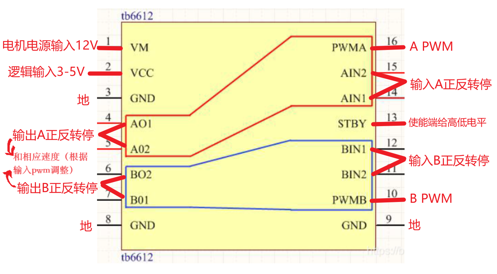
电机编码器
1.读取电机脉冲数
xxxxxxxxxx//编码器5V ，A相，B相
// 定义编码器引脚const int encoderPinA = 18; // 与编码器A相连接的引脚const int encoderPinB = 19; // 与编码器B相连接的引脚
volatile long encoderCount = 0;volatile bool aState = LOW;volatile bool bState = LOW;
// 声明编码器中断处理函数void IRAM_ATTR onEncoderChange() { aState = digitalRead(encoderPinA); bState = digitalRead(encoderPinB); if (aState == bState) //可以区分正转和反转 { encoderCount--; } else {encoderCount++;}}
void setup() { Serial.begin(115200); pinMode(encoderPinA, INPUT_PULLUP); pinMode(encoderPinB, INPUT_PULLUP); attachInterrupt(digitalPinToInterrupt(encoderPinA), onEncoderChange, CHANGE);}
void loop() { // 读取编码器计数值（测速） long currentEncoderCount = encoderCount;
// 在此处执行你的测速操作，例如计算速度 // 你可以将currentEncoderCount与上一个读取的值进行比较来计算速度变化
// 打印速度信息 Serial.print("Encoder Count: "); Serial.println(currentEncoderCount);
delay(1000); // 可以调整延迟以控制测速的频率}
2.编码器测速
xxxxxxxxxxconst int encoderPinA = 18; // 与编码器A相连接的引脚const int encoderPinB = 19; // 与编码器B相连接的引脚
volatile long encoderCount = 0;volatile bool aState = LOW;volatile bool bState = LOW;unsigned long previousMillis = 0;long previousEncoderCount = 0;float speed = 0.0;
void IRAM_ATTR onEncoderChange() { aState = digitalRead(encoderPinA); bState = digitalRead(encoderPinB); if (aState == bState) { encoderCount--; } else { encoderCount++; }}
void setup() { pinMode(encoderPinA, INPUT_PULLUP); pinMode(encoderPinB, INPUT_PULLUP); attachInterrupt(digitalPinToInterrupt(encoderPinA), onEncoderChange, CHANGE); Serial.begin(9600);}
void loop() { unsigned long currentMillis = millis(); if (currentMillis - previousMillis >= 1000) { long currentEncoderCount = encoderCount; long deltaCount = currentEncoderCount - previousEncoderCount; // 计算速度，考虑编码器的分辨率 float pulsesPerRevolution = 260; // 假设编码器有360个脉冲每转 float timeInSeconds = 1.0; // 1秒内 speed = (float)deltaCount / pulsesPerRevolution / timeInSeconds; Serial.print("编码器计数: "); Serial.println(currentEncoderCount); Serial.print("速度 (degrees/second): ");//一秒内转了几圈，具体速度要加上轮子周长参数 Serial.print(speed); previousEncoderCount = currentEncoderCount; previousMillis = currentMillis; }}
五线四相步进电机
28BYJ-48步进电机在半步模式下的步幅角为5.625°/64。这意味着电机的步距角为 5.625º，因此在半步模式下需要 360º/5.625º = 64 步。在全步模式下：64/2 = 32 步完成一次旋转。
但是，输出轴通过 64：1 的齿轮比驱动。这意味着如果电机内部旋转 64 次，轴（在电机外部可见）将完成旋转。这意味着电机必须移动 32×64 = 2048 步才能使轴完成一整圈。这意味着您的精度为 360º/2048 步 = 0.18º/步。
- 每转总步数 = 2048 步
- 步距角 = 0.18º/步
- 使用 ULN2003 电机驱动器
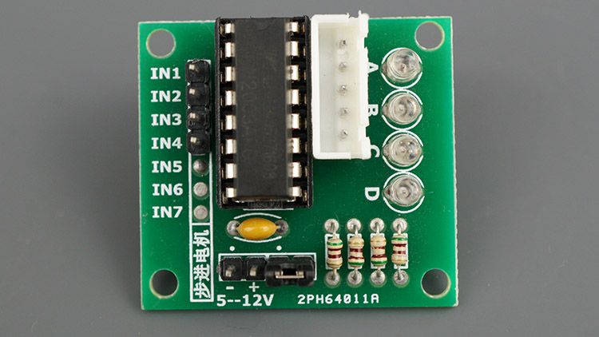
xxxxxxxxxx//还有更全面的 AccelStepper库(未使用)
const int stepsPerRevolution = 2048; // change this to fit the number of steps per revolution
// ULN2003电机驱动器引脚
// 初始化步进电机库Stepper myStepper(stepsPerRevolution, IN1, IN3, IN2, IN4);
void setup() { // 将速度设置为 5 rpm myStepper.setSpeed(5); // 初始化串口 Serial.begin(115200);}
void loop() { // 一步朝一个方向转一圈： Serial.println("顺时针"); myStepper.step(stepsPerRevolution); delay(1000);
// 一步向另一个方向旋转： Serial.println("反时针方向的"); myStepper.step(-stepsPerRevolution); delay(1000);}GC9A01圆形显示器
使用 GC9A01 圆形液晶模块 |无人机机器人研讨会 (dronebotworkshop.com)
WS2812B
MicroPython：WS2812B 个带 ESP32 和 ESP8266 的可寻址 RGB LED |随机书教程 (randomnerdtutorials.com)
GPS，JQ8900，光流，4G模块
TFT
espi库主要是160x128,320x240,480x240,经过修改可使用其他参数库
1.44寸TFT-bilibili
3.14 Little FS闪存系统
要用Arduino 1.8.x版本 。库地址：Arduino-ESP32FS-plugin (github.com)。
教程：
ESP32：使用 Arduino IDE 上传文件到 LittleFS |随机书教程 (randomnerdtutorials.com)
ESP32： 将数据写入文件 （LittleFS） - Arduino |随机书教程 (randomnerdtutorials.com)
API
createDir(LittleFS, "/mydir"); // 创建 mydir 文件夹
writeFile(LittleFS, "/mydir/hello1.txt", "Hello1"); // 创建一个内容为“Hello1”的 hello1.txt 文件
appendFile(LittleFS, "/hello.txt", "World!\r\n"); //将一些文本附加到上一个文件
listDir(LittleFS, "/", 1); // 列出从根目录开始的一级目录
removeDir(LittleFS, "/mydir"); //删除以前创建的文件夹
deleteFile(LittleFS, "/mydir/hello1.txt"); //删除之前创建的文件
readFile(LittleFS, "/hello.txt"); // 读取完整文件
renameFile(LittleFS, "/hello.txt", "/foo.txt"); //重命名上一个文件
readFile(LittleFS, "/foo.txt"); //读取具有新名称的文件
testFileIO(LittleFS, "/test.txt"); //测试文件输入
xxxxxxxxxx//对文件进行目录列表，创建，移除。对文件写，读，追加，重命名，删除，输入输出。
/* 你只需要在第一次运行时格式化LittleFS，测试或使用 LITTLEFS 插件创建分区 https://github.com/lorol/arduino-esp32littlefs-plugin */
void listDir(fs::FS &fs, const char * dirname, uint8_t levels) //列出文件目录代码{ Serial.printf("列表目录: %s\r\n", dirname);
File root = fs.open(dirname); if(!root) { Serial.println("- 无法打开目录"); return; } if(!root.isDirectory()) { Serial.println(" - 不是目录"); return; }
File file = root.openNextFile(); while(file) { if(file.isDirectory()) { Serial.print(" 目录 : "); Serial.println(file.name()); if(levels) { listDir(fs, file.path(), levels -1); } } else { Serial.print(" 文件: "); Serial.print(file.name()); Serial.print("\大小: "); Serial.println(file.size()); } file = root.openNextFile(); }}
void createDir(fs::FS &fs, const char * path) //创建目录代码示例{ Serial.printf("正在创建目录: %s\n", path); if(fs.mkdir(path)) { Serial.println("目录已生成"); } else { Serial.println("mkdir failed"); }}
void removeDir(fs::FS &fs, const char * path) //移除目录示例{ Serial.printf("正在移除目录: %s\n", path); if(fs.rmdir(path)) { Serial.println("目录已移除"); } else { Serial.println("RMDIR 失败"); }}
void readFile(fs::FS &fs, const char * path) //读取文件内容{ Serial.printf("读取文件: %s\r\n", path);
File file = fs.open(path); if(!file || file.isDirectory()) { Serial.println("- 无法打开文件进行读取"); return; }
Serial.println("- 从文件中读取:"); while(file.available()) { Serial.write(file.read()); } file.close();}
void writeFile(fs::FS &fs, const char * path, const char * message) //写文件内容{ Serial.printf("正在写文件: %s\r\n", path);
File file = fs.open(path, FILE_WRITE); if(!file) { Serial.println("- 无法打开文件进行写操作"); return; } if(file.print(message)) { Serial.println("- 已完成对文件写操作"); } else { Serial.println("- 写操作失败"); } file.close();}
void appendFile(fs::FS &fs, const char * path, const char * message) //往文件添加内容{ Serial.printf("正在对文件追加内容: %s\r\n", path);
File file = fs.open(path, FILE_APPEND); if(!file) { Serial.println("- 无法打开文件进行追加"); return; } if(file.print(message)) { Serial.println("- 信息已追加"); } else { Serial.println("- 追加失败"); } file.close();}
void renameFile(fs::FS &fs, const char * path1, const char * path2) //重命名文件{ Serial.printf("重命名文件 %s 为 %s\r\n", path1, path2); if (fs.rename(path1, path2)) { Serial.println("- 文件已重命名"); } else { Serial.println("- 重命名失败"); }}
void deleteFile(fs::FS &fs, const char * path) //删除文件示例{ Serial.printf("正在删除文件: %s\r\n", path); if(fs.remove(path)) { Serial.println("- 文件已删除"); } else { Serial.println("- 删除失败"); }}
void testFileIO(fs::FS &fs, const char * path) //测试文件输入输出{ Serial.printf("Testing file I/O with %s\r\n", path);
static uint8_t buf[512]; size_t len = 0; File file = fs.open(path, FILE_WRITE); if(!file) { Serial.println("- 无法打开文件进行写入"); return; }
size_t i; Serial.print("- 正在写" ); uint32_t start = millis(); for(i=0; i<2048; i++) { if ((i & 0x001F) == 0x001F) { Serial.print("."); } file.write(buf, 512); } Serial.println(""); uint32_t end = millis() - start; Serial.printf(" - %u bytes written in %u ms\r\n", 2048 * 512, end); file.close();
file = fs.open(path); start = millis(); end = start; i = 0; if(file && !file.isDirectory()) { len = file.size(); size_t flen = len; start = millis(); Serial.print("- 正在读取" ); while(len) { size_t toRead = len; if(toRead > 512) { toRead = 512; } file.read(buf, toRead); if ((i++ & 0x001F) == 0x001F) { Serial.print("."); } len -= toRead; } Serial.println(""); end = millis() - start; Serial.printf("- %u bytes read in %u ms\r\n", flen, end); file.close(); } else { Serial.println("- 无法打开文件进行读取");}}
void setup(){ Serial.begin(115200);
if(!LittleFS.begin(FORMAT_LITTLEFS_IF_FAILED)){ Serial.println("LittleFS挂载失败"); return; }
createDir(LittleFS, "/mydir"); // 创建 mydir 文件夹 writeFile(LittleFS, "/mydir/hello1.txt", "Hello1"); // 创建一个内容为“Hello1”的 hello1.txt 文件 listDir(LittleFS, "/", 1); // 列出从根目录开始的一级目录 deleteFile(LittleFS, "/mydir/hello1.txt"); //删除之前创建的文件 removeDir(LittleFS, "/mydir"); //删除以前创建的文件夹 listDir(LittleFS, "/", 1); // 列出所有目录以确保它们已被删除 writeFile(LittleFS, "/hello.txt", "Hello "); //在根目录中创建并写入新文件 appendFile(LittleFS, "/hello.txt", "World!\r\n"); //将一些文本附加到上一个文件 readFile(LittleFS, "/hello.txt"); // 读取完整文件 renameFile(LittleFS, "/hello.txt", "/foo.txt"); //重命名上一个文件 readFile(LittleFS, "/foo.txt"); //读取具有新名称的文件 deleteFile(LittleFS, "/foo.txt"); //删除文件 testFileIO(LittleFS, "/test.txt"); //测试文件输入 deleteFile(LittleFS, "/test.txt"); //删除文件 Serial.println( "测试完成" ); }
void loop(){
}3.15 ESP-NOW通信协议
esp-now应用于两个或多个ESP设备间的通信，esp32和esp8266都能使用，但是8266的wifi库与32的不一致。
模式有：一主一从，一主多从，多主一从。单工，全双工。每一次 最多发送250字节的数据包。
设备MAC地址
xxxxxxxxxx//打印ESP32设备唯一MAC地址void setup() { Serial.begin(115200); WiFi.mode(WIFI_MODE_STA); Serial.print("MAC Address: "); Serial.println(WiFi.macAddress());}void loop() {}
回调函数
回调有点像中断，每次发生特定事件时都会生成回调。
在 ESP-NOW 协议中，有两个有趣的回调：
- 发送数据 – 每当发送数据时都会调用 esp_now_register_send_cb（你的回调函数名） 。
- 接收数据 – 接收数据时调用 esp_now_register_rcv_cb（你的回调函数名）。
代码中您将创建回调函数，函数将使用上述格式 绑定到发送或接收回调。每次事件发生时，函数都会运行。
回调函数还返回一些有用的数据：
- 发送回调返回已发送数据的状态。
- 接收回调包括接收到的数据包。
ESP-NOW发送数据
- 1.初始化 ESP-NOW 库。
- 2.创建发送回调函数
- 3.响应方设备，可以通过指定对方的 MAC 地址来添加。
- 4.打包并发送消息。
ESP-NOW接收数据
- 1.初始化 ESP-NOW 库。
- 2.注册接收回调函数。
- 在接收回调中，将捕获传入的消息数据，并将其传递给变量。
一主一从
发送数据设备
xxxxxxxxxx
// 测试数据的变量int int_value;float float_value;bool bool_value = true;
// 响应方的 MAC 地址 - 根据需要进行编辑uint8_t broadcastAddress[] = {0x24, 0x6F, 0x28, 0x7A, 0xAE, 0x7C};
// 定义数据结构typedef struct struct_message { char a[32]; int b; float c; bool d;} struct_message;
// 创建结构化对象struct_message myData;
// 同行信息esp_now_peer_info_t peerInfo;
// 发送数据时调用的回调函数void OnDataSent(const uint8_t *mac_addr, esp_now_send_status_t status) { Serial.print("\r\nLast Packet Send Status:\t"); Serial.println(status == ESP_NOW_SEND_SUCCESS ? "Delivery Success" : "Delivery Fail");}
void setup() { Serial.begin(115200); // 将 ESP32 设置为 Wi-Fi Station WiFi.mode(WIFI_STA);
// 初始化 ESP-NOW if (esp_now_init() != ESP_OK) { Serial.println("初始化 ESP-NOW 时出错"); return; }
// 注册发送回调 esp_now_register_send_cb(OnDataSent); // Register peer memcpy(peerInfo.peer_addr, broadcastAddress, 6); peerInfo.channel = 0; peerInfo.encrypt = false; // Add peer if (esp_now_add_peer(&peerInfo) != ESP_OK){ Serial.println("Failed to add peer"); return; }}
void loop() {
// Create test data
// Generate a random integer int_value = random(1,20);
// Use integer to make a new float float_value = 1.3 * int_value;
// Invert the boolean value bool_value = !bool_value; // Format structured data strcpy(myData.a, "Welcome to the Workshop!"); myData.b = int_value; myData.c = float_value; myData.d = bool_value; // Send message via ESP-NOW esp_err_t result = esp_now_send(broadcastAddress, (uint8_t *) &myData, sizeof(myData)); if (result == ESP_OK) { Serial.println("Sending confirmed"); } else { Serial.println("Sending error"); } delay(2000);}接受数据设备
xxxxxxxxxx/* ESP-NOW Demo - Receive esp-now-demo-rcv.ino Reads data from Initiator DroneBot Workshop 2022 https://dronebotworkshop.com*/
// Include Libraries
// Define a data structuretypedef struct struct_message { char a[32]; int b; float c; bool d;} struct_message;
// Create a structured objectstruct_message myData;
// Callback function executed when data is receivedvoid OnDataRecv(const uint8_t * mac, const uint8_t *incomingData, int len) { memcpy(&myData, incomingData, sizeof(myData)); Serial.print("Data received: "); Serial.println(len); Serial.print("Character Value: "); Serial.println(myData.a); Serial.print("Integer Value: "); Serial.println(myData.b); Serial.print("Float Value: "); Serial.println(myData.c); Serial.print("Boolean Value: "); Serial.println(myData.d); Serial.println();}
void setup() { // Set up Serial Monitor Serial.begin(115200); // Set ESP32 as a Wi-Fi Station WiFi.mode(WIFI_STA);
// Initilize ESP-NOW if (esp_now_init() != ESP_OK) { Serial.println("Error initializing ESP-NOW"); return; } // Register callback function esp_now_register_recv_cb(OnDataRecv);} void loop() {
}
广播模式，互相收发
xxxxxxxxxx/*每个下载此示例的模块都可以单独控制 全部模块的GPIO引脚状态，点亮LED*/
// Include Libraries
// Define LED and pushbutton state booleansbool buttonDown = false;bool ledOn = false;
// Define LED and pushbutton pins
void formatMacAddress(const uint8_t *macAddr, char *buffer, int maxLength)// Formats MAC Address{ snprintf(buffer, maxLength, "%02x:%02x:%02x:%02x:%02x:%02x", macAddr[0], macAddr[1], macAddr[2], macAddr[3], macAddr[4], macAddr[5]);}
void receiveCallback(const uint8_t *macAddr, const uint8_t *data, int dataLen)// Called when data is received{ // Only allow a maximum of 250 characters in the message + a null terminating byte char buffer[ESP_NOW_MAX_DATA_LEN + 1]; int msgLen = min(ESP_NOW_MAX_DATA_LEN, dataLen); strncpy(buffer, (const char *)data, msgLen);
// Make sure we are null terminated buffer[msgLen] = 0;
// Format the MAC address char macStr[18]; formatMacAddress(macAddr, macStr, 18);
// Send Debug log message to the serial port Serial.printf("Received message from: %s - %s\n", macStr, buffer);
// Check switch status if (strcmp("on", buffer) == 0) { ledOn = true; } else { ledOn = false; } digitalWrite(STATUS_LED, ledOn);}
void sentCallback(const uint8_t *macAddr, esp_now_send_status_t status)// Called when data is sent{ char macStr[18]; formatMacAddress(macAddr, macStr, 18); Serial.print("Last Packet Sent to: "); Serial.println(macStr); Serial.print("Last Packet Send Status: "); Serial.println(status == ESP_NOW_SEND_SUCCESS ? "Delivery Success" : "Delivery Fail");}
void broadcast(const String &message)// Emulates a broadcast{ // Broadcast a message to every device in range uint8_t broadcastAddress[] = {0xFF, 0xFF, 0xFF, 0xFF, 0xFF, 0xFF}; esp_now_peer_info_t peerInfo = {}; memcpy(&peerInfo.peer_addr, broadcastAddress, 6); if (!esp_now_is_peer_exist(broadcastAddress)) { esp_now_add_peer(&peerInfo); } // Send message esp_err_t result = esp_now_send(broadcastAddress, (const uint8_t *)message.c_str(), message.length());
// Print results to serial monitor if (result == ESP_OK) { Serial.println("Broadcast message success"); } else if (result == ESP_ERR_ESPNOW_NOT_INIT) { Serial.println("ESP-NOW not Init."); } else if (result == ESP_ERR_ESPNOW_ARG) { Serial.println("Invalid Argument"); } else if (result == ESP_ERR_ESPNOW_INTERNAL) { Serial.println("Internal Error"); } else if (result == ESP_ERR_ESPNOW_NO_MEM) { Serial.println("ESP_ERR_ESPNOW_NO_MEM"); } else if (result == ESP_ERR_ESPNOW_NOT_FOUND) { Serial.println("Peer not found."); } else { Serial.println("Unknown error"); }}
void setup(){
// Set up Serial Monitor Serial.begin(115200); delay(1000);
// Set ESP32 in STA mode to begin with WiFi.mode(WIFI_STA); Serial.println("ESP-NOW Broadcast Demo");
// Print MAC address Serial.print("MAC Address: "); Serial.println(WiFi.macAddress());
// Disconnect from WiFi WiFi.disconnect();
// Initialize ESP-NOW if (esp_now_init() == ESP_OK) { Serial.println("ESP-NOW Init Success"); esp_now_register_recv_cb(receiveCallback); esp_now_register_send_cb(sentCallback); } else { Serial.println("ESP-NOW Init Failed"); delay(3000); ESP.restart(); }
// Pushbutton uses built-in pullup resistor pinMode(STATUS_BUTTON, INPUT_PULLUP);
// LED Output pinMode(STATUS_LED, OUTPUT);}
void loop(){ if (digitalRead(STATUS_BUTTON)) { // Detect the transition from low to high if (!buttonDown) { buttonDown = true; // Toggle the LED state ledOn = !ledOn; digitalWrite(STATUS_LED, ledOn); // Send a message to all devices if (ledOn) { broadcast("on"); } else { broadcast("off"); } } // Delay to avoid bouncing delay(500); } else { // Reset the button state buttonDown = false; }}
实例：DHT22数据传送
将发送端设备读取的DHT22数据，传输到接收端设备，接收端再传输到串口监视器显示。
发送端
xxxxxxxxxx/* ESP-NOW Remote Sensor - Transmitter esp-now-xmit.ino Sends Temperature & Humidity data to other ESP32 via ESP-NOW Uses DHT22
DroneBot Workshop 2022 https://dronebotworkshop.com*/
// Include required libraries
// Define DHT22 parameters
// Create DHT ObjectDHT dht(DHTPin, DHTType);
// Variables for temperature and humidityfloat temp;float humid;
// Responder MAC Address (Replace with your responders MAC Address)uint8_t broadcastAddress[] = {0x24, 0x0A, 0xC4, 0x04, 0xF4, 0x40};
// Define data structuretypedef struct struct_message { float a; float b;} struct_message;
// Create structured data objectstruct_message myData;
// Register peeresp_now_peer_info_t peerInfo;
// Sent data callback functionvoid OnDataSent(const uint8_t *macAddr, esp_now_send_status_t status){ Serial.print("Last Packet Send Status: "); Serial.println(status == ESP_NOW_SEND_SUCCESS ? "Delivery Success" : "Delivery Fail");}
void setup() {
// Setup Serial monitor Serial.begin(115200); delay(100);
// Initiate DHT22 dht.begin();
// Set ESP32 WiFi mode to Station temporarly WiFi.mode(WIFI_STA);
// Initialize ESP-NOW if (esp_now_init() != 0) { Serial.println("Error initializing ESP-NOW"); return; }
// Define callback esp_now_register_send_cb(OnDataSent);
memcpy(peerInfo.peer_addr, broadcastAddress, 6); peerInfo.channel = 0; peerInfo.encrypt = false;
if (esp_now_add_peer(&peerInfo) != ESP_OK) { Serial.println("Failed to add peer"); return; }
}
void loop() {
// Read DHT22 module values temp = dht.readTemperature(); delay(10); humid = dht.readHumidity(); delay(10);
Serial.print("Temp: "); Serial.println(temp); Serial.print("Humid: "); Serial.println(humid);
// Add to structured data object myData.a = temp; myData.b = humid;
// Send data esp_now_send(broadcastAddress, (uint8_t *) &myData, sizeof(myData));
// Delay for DHT22 sensor delay(2000);}
接收端
xxxxxxxxxx/* ESP-NOW Remote Sensor - Receiver esp-now-rcv.ino Receives Temperature & Humidity data from other ESP32 via ESP-NOW DroneBot Workshop 2022 https://dronebotworkshop.com*/
// Include required libraries
// Define data structuretypedef struct struct_message { float a; float b;} struct_message;
// Create structured data objectstruct_message myData;
// Callback functionvoid OnDataRecv(const uint8_t * mac, const uint8_t *incomingData, int len) { // Get incoming data memcpy(&myData, incomingData, sizeof(myData)); // Print to Serial Monitor Serial.print("Temp: "); Serial.println(myData.a); Serial.print("Humidity: "); Serial.println(myData.b); } void setup() { // Set up Serial Monitor Serial.begin(115200);
// Start ESP32 in Station mode WiFi.mode(WIFI_STA);
// Initalize ESP-NOW if (esp_now_init() != 0) { Serial.println("Error initializing ESP-NOW"); return; } // Register callback function esp_now_register_recv_cb(OnDataRecv);}
void loop() { }
多设备数据传输到串口监视器
发送端
xxxxxxxxxx// Include required libraries
// Define DHT22 parameters
// Create DHT ObjectDHT dht(DHTPin, DHTType);
// Variables for temperature and humidityfloat temp;float humid;
// Integer for identification (make unique for each transmitter)int ident = 2;
// Responder MAC Address (Replace with your responders MAC Address)uint8_t broadcastAddress[] = {0x24, 0x0A, 0xC4, 0x04, 0xF4, 0x40};
// Define data structuretypedef struct struct_message { float a; float b; int c;} struct_message;
// Create structured data objectstruct_message myData;
// Register peeresp_now_peer_info_t peerInfo;
// Sent data callback functionvoid OnDataSent(const uint8_t *macAddr, esp_now_send_status_t status){ Serial.print("Last Packet Send Status: "); Serial.println(status == ESP_NOW_SEND_SUCCESS ? "Delivery Success" : "Delivery Fail");}
void setup() {
// Setup Serial monitor Serial.begin(115200); delay(100);
// Initiate DHT22 dht.begin();
// Set ESP32 WiFi mode to Station temporarly WiFi.mode(WIFI_STA);
// Initialize ESP-NOW if (esp_now_init() != 0) { Serial.println("Error initializing ESP-NOW"); return; }
// Define callback esp_now_register_send_cb(OnDataSent);
memcpy(peerInfo.peer_addr, broadcastAddress, 6); peerInfo.channel = 0; peerInfo.encrypt = false;
if (esp_now_add_peer(&peerInfo) != ESP_OK) { Serial.println("Failed to add peer"); return; }
}
void loop() {
// Read DHT22 module values temp = dht.readTemperature(); delay(10); humid = dht.readHumidity(); delay(10);
Serial.print("Temp: "); Serial.println(temp); Serial.print("Humid: "); Serial.println(humid);
// Add to structured data object myData.a = temp; myData.b = humid; myData.c = ident;
// Send data esp_now_send(broadcastAddress, (uint8_t *) &myData, sizeof(myData));
// Delay for DHT22 sensor delay(2000);}接收端
xxxxxxxxxx// Include required libraries
// Define data structuretypedef struct struct_message { float a; float b; int c;} struct_message;
// Create structured data objectstruct_message myData;
// Callback functionvoid OnDataRecv(const uint8_t * mac, const uint8_t *incomingData, int len) { // Get incoming data memcpy(&myData, incomingData, sizeof(myData)); // Print to Serial Monitor Serial.print("Temp Sensor "); Serial.print(myData.c); Serial.print(": "); Serial.println(myData.a); Serial.print("Humidity Sensor "); Serial.print(myData.c); Serial.print(": "); Serial.println(myData.b);
Serial.println("");} void setup() { // Set up Serial Monitor Serial.begin(115200);
// Start ESP32 in Station mode WiFi.mode(WIFI_STA);
// Initalize ESP-NOW if (esp_now_init() != 0) { Serial.println("Error initializing ESP-NOW"); return; } // Register callback function esp_now_register_recv_cb(OnDataRecv);}
void loop() { }3.15 DAC数模转换
esp32有两个8位的DAC（仅ESP32有）
输入输出特性（呈线性，重点关注两个极点：0(电压未降到0V) 255（电压未达到3.3V））
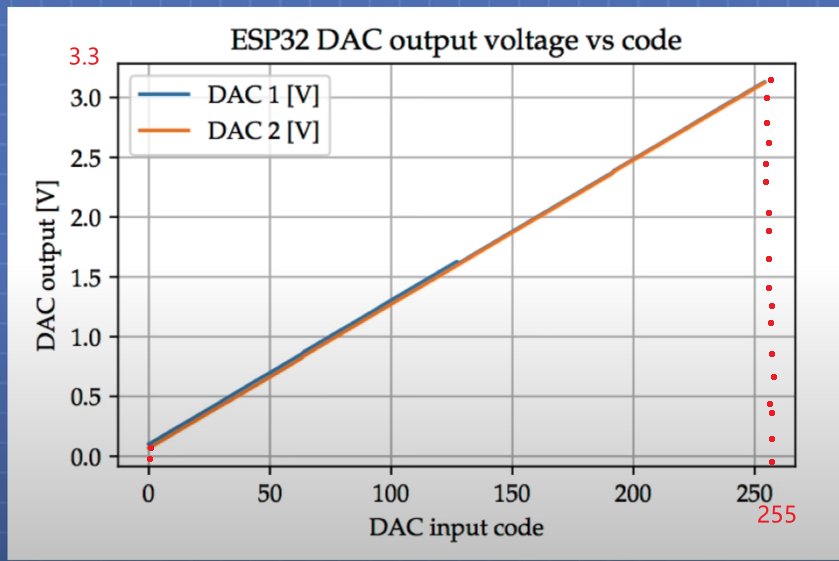
数字写入模拟输出
xxxxxxxxxx// ESP32 DAC引脚void setup() { Serial.begin(115200);}void loop() { // 8位分辨率255 dacWrite(DAC_CH1, 0); Serial.println("DAC Value 0"); delay(3000);
dacWrite(DAC_CH1, 64); Serial.println("DAC Value 64"); delay(3000);
dacWrite(DAC_CH1, 128); Serial.println("DAC Value 128"); delay(3000);
dacWrite(DAC_CH1, 192); Serial.println("DAC Value 192"); delay(3000);
dacWrite(DAC_CH1, 255); Serial.println("DAC Value 255"); delay(3000);}输出正弦波波形
xxxxxxxxxxvoid setup() {}void loop() {
for (int deg = 0; deg < 360; deg = deg + 1) { // Calculate sine and write to DAC dacWrite(DAC_CH1, int(128 + 64 * sin(deg * PI / 180))); }}使用表存储发生波形信息
可以生成更复杂的波形
xxxxxxxxxx// 同样是正弦波，只不过频率过高
// Define sample count
// Integer for countingint i = 0;
static byte SineWaveTable[Num_Samples] = {
0x80, 0x83, 0x87, 0x8A, 0x8E, 0x91, 0x95, 0x98, 0x9B, 0x9E, 0xA2, 0xA5, 0xA7, 0xAA, 0xAD, 0xAF, 0xB2, 0xB4, 0xB6, 0xB8, 0xB9, 0xBB, 0xBC, 0xBD, 0xBE, 0xBF, 0xBF, 0xBF, 0xC0, 0xBF, 0xBF, 0xBF, 0xBE, 0xBD, 0xBC, 0xBB, 0xB9, 0xB8, 0xB6, 0xB4, 0xB2, 0xAF, 0xAD, 0xAA, 0xA7, 0xA5, 0xA2, 0x9E, 0x9B, 0x98, 0x95, 0x91, 0x8E, 0x8A, 0x87, 0x83, 0x80, 0x7C, 0x78, 0x75, 0x71, 0x6E, 0x6A, 0x67, 0x64, 0x61, 0x5D, 0x5A, 0x58, 0x55, 0x52, 0x50, 0x4D, 0x4B, 0x49, 0x47, 0x46, 0x44, 0x43, 0x42, 0x41, 0x40, 0x40, 0x40, 0x40, 0x40, 0x40, 0x40, 0x41, 0x42, 0x43, 0x44, 0x46, 0x47, 0x49, 0x4B, 0x4D, 0x50, 0x52, 0x55, 0x58, 0x5A, 0x5D, 0x61, 0x64, 0x67, 0x6A, 0x6E, 0x71, 0x75, 0x78, 0x7C};
void setup() { // Nothing here!}
void loop() {
// Step through table values dacWrite(DAC_CH1, SineWaveTable[i]); i++; if (i >= Num_Samples) i = 0;}余弦发生器
ESP32只有一个余弦发生器，这里使用DacESP32库。
xxxxxxxxxxDacESP32 dac1(GPIO_NUM_25); // Create DAC objectvoid setup() { // Output a Cosine Wave with frequency of 1000Hz and max. amplitude (default) dac1.outputCW(1000); // Wait 5 seconds before changing amplitude delay(5000);}
void loop() { // Change signal amplitude every second for (uint8_t i = 0; i < 4; i++) { delay(1000); if (i == 0) dac1.setCwScale(DAC_CW_SCALE_1);// 使用 setCwScale 来设置振幅 else if (i == 1) dac1.setCwScale(DAC_CW_SCALE_2); else if (i == 2) dac1.setCwScale(DAC_CW_SCALE_4); else if (i == 3) dac1.setCwScale(DAC_CW_SCALE_8); }}通过双通道显示圆波形
xxxxxxxxxx/*示波器必须为X-Y模式*/
// Define variable for incrementfloat t = 0;
void setup() { // Enable both DAC channels dac_output_enable(DAC_CHANNEL_1); dac_output_enable(DAC_CHANNEL_2);}
void loop() { // Move two channels through sine and cosine waves
// Increment variable t += 0.01;
// Step through circle for (float f = 0; f < M_PI * 2; f += 0.01) { dac_output_voltage(DAC_CHANNEL_1, sin(f) * 120 + 120); dac_output_voltage(DAC_CHANNEL_2, cos(f + t) * 120 + 120); }
// Send DAC output HIGH to provide scope trigger on both channels dac_output_voltage(DAC_CHANNEL_1, 255); dac_output_voltage(DAC_CHANNEL_2, 255);
// Short delay delay(10);}通过TouchPin创建模拟键盘，输出对应音频
touchpin外接可触摸的东西，比如铁片或者水果。还需要一个外部音频放大器。
xxxxxxxxxx
// Create DAC object for Channel 1DacESP32 dac1(GPIO_NUM_25);
// Define the touch pins (you can add more as desired)
// Variables to hold the touch pin valuesint tvalue_1;int tvalue_2;int tvalue_3;int tvalue_4;int tvalue_5;int tvalue_6;int tvalue_7;int tvalue_8;
// Define the threshold levels for each touch pin (adjust as required)const int threshold_1 = 200;const int threshold_2 = 200;const int threshold_3 = 200;const int threshold_4 = 200;const int threshold_5 = 200;const int threshold_6 = 200;const int threshold_7 = 200;const int threshold_8 = 200;
// Define the frequencies for our "musical notes" - https://mixbutton.com/mixing-articles/music-note-to-frequency-chart/const int freq_1 = 523; //C - Octave 5const int freq_2 = 587; //D - Octave 5const int freq_3 = 659; //E - Octave 5const int freq_4 = 698; //F - Octave 5const int freq_5 = 784; //G - Octave 5const int freq_6 = 880; //A - Octave 5const int freq_7 = 988; //B - Octave 5const int freq_8 = 1046; //C - Octave 6
void setup() { // Setup serial monitor to check touch thresholds Serial.begin(115200);
// Disable DAC to stop sound dac1.disable();}
void loop() {
//Check status of touch switches tvalue_1 = touchRead(TOUCH_1); tvalue_2 = touchRead(TOUCH_2); tvalue_3 = touchRead(TOUCH_3); tvalue_4 = touchRead(TOUCH_4); tvalue_5 = touchRead(TOUCH_5); tvalue_6 = touchRead(TOUCH_6); tvalue_7 = touchRead(TOUCH_7); tvalue_8 = touchRead(TOUCH_8);
// Print values (useful for adjusting threshold levels) Serial.print("S1 = "); Serial.print(tvalue_1); Serial.print(" S2 = "); Serial.print(tvalue_2); Serial.print(" S3 = "); Serial.print(tvalue_3); Serial.print(" S4 = "); Serial.print(tvalue_4); Serial.print(" S5 = "); Serial.print(tvalue_5); Serial.print(" S6 = "); Serial.print(tvalue_6); Serial.print(" S7 = "); Serial.print(tvalue_7); Serial.print(" S8 = "); Serial.println(tvalue_8);
// If touch values exceed threshold then play associated note3 if (tvalue_1 < threshold_1) { dac1.enable(); dac1.outputCW(freq_1); } else if (tvalue_2 < threshold_2) { dac1.enable(); dac1.outputCW(freq_2); } else if (tvalue_3 < threshold_3) { dac1.enable(); dac1.outputCW(freq_3); } else if (tvalue_4 < threshold_4) { dac1.enable(); dac1.outputCW(freq_4); } else if (tvalue_5 < threshold_5) { dac1.enable(); dac1.outputCW(freq_5); } else if (tvalue_6 < threshold_6) { dac1.enable(); dac1.outputCW(freq_6); } else if (tvalue_7 < threshold_7) { dac1.enable(); dac1.outputCW(freq_7); } else if (tvalue_8 < threshold_8) { dac1.enable(); dac1.outputCW(freq_8); } else { // Disable DAC to stop sound dac1.disable(); }
// Short delay (adjust as desired) delay(200);}I2S
使用 ESP32 的声音 - I2S 协议 |无人机机器人研讨会 (dronebotworkshop.com)
OTA远程下载程序
打开示例中的Arduino OTA - Basic OTA，修改要连接的2.4Gwifi名和密码，将其烧录到开发板中，这样就开启了OTA功能，在串口监视器中会打印ESP32设备的网络IP。
打开要烧录的程序代码，烧录前点击tools-端口-network upload ，然后点击烧录-随后输入密码-密码是设备的网络IP-输入完成就开始上传了。
PID
1.P =6 ,电机未达到预定状态，并停滞。 P=9电机过冲后震荡一次，并停滞。
xxxxxxxxxx
////编码器5V ，A相，B相，我的电机一圈脉冲数测的是260，参数是520.他们之间的联系是什么，是否和正反转处代码有关
// 与编码器A相连接的引脚// 与编码器B相连接的引脚volatile long EncoderCount = 0; //初始计数值volatile bool aState = LOW;volatile bool bState = LOW;
// 使用通道0。通道范围: 0~15 ，芯片ESP32。// 对LEDC定时器使用12位精度。 范围: 8,10,12// 使用5000Hz作为LEDC基本频率。范围:1Hz到40MHz
void zheng() { digitalWrite(AIN1,HIGH); digitalWrite(AIN2,LOW); }void fan() { digitalWrite(AIN1,LOW); digitalWrite(AIN2,HIGH); }void ting() { digitalWrite(AIN1,LOW); digitalWrite(AIN2,LOW); }
const int Kp=6;
// 声明编码器中断处理函数void IRAM_ATTR EncoderTimer() { aState = digitalRead(EncoderPinA); bState = digitalRead(EncoderPinB); if (aState == bState) //可以区分正转和反转 { EncoderCount--; } else {EncoderCount++;}}
void ledcAnalogWrite(uint8_t channel, uint32_t value, uint32_t valueMax = 255) //ADC写{ // 使用Bit分辨率计算占duty_cycle, 12位精度，4095 = 2^12 - 1。 uint32_t duty = (4095 / valueMax) * min(value, valueMax);//这句话相当于把4095区间映射到255区间，4095*（所给值/255，即占空比） ledcWrite(channel, duty); // 写入 LEDC 的占空比}
void setup() { Serial.begin(115200);delay(1000); pinMode(StartPin,INPUT);
ledcSetup(LEDC_CHANNEL_0, LEDC_BASE_FREQ, LEDC_TIMER_12_BIT);// 初始化设置定时器 ledcAttachPin(PWMAPIN, LEDC_CHANNEL_0); //将定时器附加到电机PWM所在引脚 pinMode(EncoderPinA, INPUT_PULLUP); pinMode(EncoderPinB, INPUT_PULLUP); attachInterrupt(digitalPinToInterrupt(EncoderPinA), EncoderTimer, CHANGE); //定时器设置，编码器引脚。
pinMode( TB6612EN , OUTPUT); pinMode( AIN1 , OUTPUT); pinMode( AIN2 , OUTPUT); digitalWrite(TB6612EN,HIGH);
}
void loop() { if(digitalRead(StartPin)==0) while(1){ // 读取编码器计数值（测速） long currentEncoderCount = EncoderCount; Serial.print("编码器计数值: "); Serial.println(currentEncoderCount); if(currentEncoderCount<260 ) { zheng();//正转 ledcWrite(LEDC_CHANNEL_0, abs(260-currentEncoderCount)*Kp);//给速度 Serial.println("正转"); delay(100); } if( currentEncoderCount>260 ) { fan();//反转 ledcWrite(LEDC_CHANNEL_0, abs(260-currentEncoderCount)*Kp);//给速度 Serial.println("反转"); delay(100); } if( currentEncoderCount==260) { ting(); Serial.println("停");delay(100); }
delay(100); // 可以调整延迟以控制测速的频率 }}2.PID
P比例：放大误差，快。
I积分：误差累计，达到目的精度，准。
D微分：预测未来，现在值和过去值的差值，稳。
测试过程中发现给电机换向预留的时间过大（200ms）会导致电机反应迟钝，震荡过大。
同时由于频繁换向，或许是编码器测量精度问题，固定脉冲值时电机所在位置不是恒定的。解决：提高采样频率。
xxxxxxxxxx////编码器5V ，A相，B相，我的电机一圈脉冲数测的是260，参数是520.他们之间的联系是什么，是否和正反转处代码有关 //为解决微分问题的定时采样Ticker ticker;long currentEncoderCount , lastEncoderCount=0,difference;int pulse_position = 520;
// 与编码器A相连接的引脚// 与编码器B相连接的引脚volatile long EncoderCount = 0; //初始计数值volatile bool aState = LOW;volatile bool bState = LOW;
// 使用通道0。通道范围: 0~15 ，芯片ESP32。// 对LEDC定时器使用12位精度。 范围: 8,10,12// 使用5000Hz作为LEDC基本频率。范围:1Hz到40MHz
void zheng() { digitalWrite(AIN1,HIGH); digitalWrite(AIN2,LOW); }void fan() { digitalWrite(AIN1,LOW); digitalWrite(AIN2,HIGH); }void ting() { digitalWrite(AIN1,LOW); digitalWrite(AIN2,LOW); }
const int Kp=5;const float Ki=0.05;const int Kd=17;int sum=0;// 声明编码器中断处理函数void IRAM_ATTR EncoderTimer() { aState = digitalRead(EncoderPinA); bState = digitalRead(EncoderPinB); if (aState == bState) //可以区分正转和反转 { EncoderCount--; } else {EncoderCount++;}}
void onTicker() { sum += abs(currentEncoderCount - pulse_position); difference = currentEncoderCount - lastEncoderCount; currentEncoderCount = lastEncoderCount;}
void setup() { Serial.begin(115200);delay(1000); pinMode(StartPin,INPUT);
ledcSetup(LEDC_CHANNEL_0, LEDC_BASE_FREQ, LEDC_TIMER_12_BIT);// 初始化设置定时器 ledcAttachPin(PWMAPIN, LEDC_CHANNEL_0); //将定时器附加到电机PWM所在引脚 pinMode(EncoderPinA, INPUT_PULLUP); pinMode(EncoderPinB, INPUT_PULLUP); attachInterrupt(digitalPinToInterrupt(EncoderPinA), EncoderTimer, CHANGE); //定时器设置，编码器引脚。
pinMode( TB6612EN , OUTPUT); pinMode( AIN1 , OUTPUT); pinMode( AIN2 , OUTPUT); digitalWrite(TB6612EN,HIGH);
ticker.attach_ms(300, onTicker);}
void loop() { //测量电机死区PWM // zheng();//正转 // ledcWrite(LEDC_CHANNEL_0, 370);//给速度 // Serial.println("正转"); // delay(100); if(digitalRead(StartPin)==0) while(1){ // 读取编码器计数值（测速） long currentEncoderCount = EncoderCount; Serial.print("编码器计数值: "); Serial.println(currentEncoderCount); if(currentEncoderCount < pulse_position) { zheng();//正转 ledcWrite(LEDC_CHANNEL_0, Kp*abs(currentEncoderCount-pulse_position) + Ki*sum + Kd*difference);//给速度 Serial.println("正转"); } if( currentEncoderCount > pulse_position ) { fan();//反转 ledcWrite(LEDC_CHANNEL_0, Kp*abs(pulse_position-currentEncoderCount) + Ki*sum + Kd*difference);//给速度 Serial.println("反转"); } if( currentEncoderCount == pulse_position) { ting(); Serial.println("停"); }
// delay(30); // 可以调整延迟以控制测速的频率 }}
四. ESP32网络
TCP
WiFi Client
"WiFi Client" 和 "HTTP Client" 是两种在计算机和网络编程中常见的客户端类型，用于不同的通信目的。
WiFi Client（WiFi 客户端）：
- WiFi 客户端通常是指连接到无线局域网（WiFi）的设备，它们使用 WiFi 协议与网络进行通信。这些设备可以是智能手机、电脑、嵌入式系统（如Arduino或ESP8266/ESP32等）等。
- WiFi 客户端可以通过WiFi连接到路由器或访问点，以便访问互联网或局域网中的其他设备。
- 例如，在Arduino编程中，WiFi 客户端可以使用 WiFiClient 对象来建立和管理与远程服务器的连接，执行网络通信任务。
ESP32 Arduino的WiFi Client库主要用于与无线网络进行通信。以下是一些常见的WiFi Client库函数及其简要说明：
begin()
- 参数： 无或指定服务器地址和端口
- 作用： 初始化WiFi客户端。
- 使用说明： 在与服务器建立连接之前，必须调用
begin()来初始化WiFi客户端。可以选择在此阶段指定服务器的IP地址和端口。
connect()
- 参数： 服务器地址和端口
- 作用： 连接到指定的服务器。
- 使用说明： 在初始化WiFi客户端后，使用
connect()来与指定的服务器建立连接。
connected()
- 参数： 无
- 作用： 检查是否与服务器建立了连接。
- 使用说明： 使用
connected()来检查是否已成功建立与服务器的连接。
write()
- 参数： 数据
- 作用： 发送数据到服务器。
- 使用说明： 使用
write()来将数据发送到服务器。可以调用多次以发送连续的数据。
print() / println()
- 参数： 数据
- 作用： 发送格式化的文本到服务器。
- 使用说明： 使用
print()和println()来发送格式化的文本数据到服务器。
available()
- 参数： 无
- 作用： 检查是否有可用的数据可读取。
- 使用说明： 使用
available()来检查是否有可用的数据可供读取。
read()
- 参数： 无
- 作用： 读取从服务器接收的数据。
- 使用说明： 使用
read()来读取从服务器接收的数据。
stop()
- 参数： 无
- 作用： 关闭与服务器的连接。
- 使用说明： 在与服务器通信完成后，调用
stop()来关闭连接并释放资源。
WiFi Server
ESP32 Arduino的WiFi Server库用于创建和管理WiFi服务器。以下是一些常见的WiFi Server库函数及其简要说明：
begin()
- 参数： 无或指定端口号
- 作用： 初始化WiFi服务器。
- 使用说明： 在设置WiFi服务器之前，必须调用
begin()来初始化WiFi服务器。可以选择指定端口号，如果不指定，则使用默认端口80。
available()
- 参数： 无
- 作用： 检查是否有客户端连接。
- 使用说明： 使用
available()来检查是否有客户端连接到WiFi服务器。
accept()
- 参数： 无
- 作用： 接受来自客户端的连接。
- 使用说明： 当
available()返回true时，使用accept()来接受来自客户端的连接，并返回一个WiFiClient对象，用于与该客户端进行通信。
write()
- 参数： 数据
- 作用： 发送数据到已连接的客户端。
- 使用说明： 使用
write()来将数据发送到已连接的客户端。可以调用多次以发送连续的数据。
print() / println()
- 参数： 数据
- 作用： 发送格式化的文本到已连接的客户端。
- 使用说明： 使用
print()和println()来发送格式化的文本数据到已连接的客户端。
read()
- 参数： 无
- 作用： 读取从客户端接收的数据。
- 使用说明： 使用
read()来读取从已连接的客户端接收的数据。
stop()
- 参数： 无
- 作用： 关闭WiFi服务器。
- 使用说明： 在与所有客户端通信完成后，调用
stop()来关闭WiFi服务器并释放资源。
HTTP
HTTP Client
HTTP Client（HTTP 客户端）：
- HTTP 客户端是指能够发送 HTTP 请求并接收 HTTP 响应的软件或应用程序。它们通常用于与网络服务器进行通信，获取网页、API 数据或执行其他基于HTTP的操作。
- HTTP 客户端可以用于访问 Web 页面、调用 Web API、下载文件等。
- 在编程中，HTTP 客户端通常是通过编程语言提供的库或模块来实现的，用于构建和发送 HTTP 请求，并处理 HTTP 响应。一些常见的HTTP客户端库包括Python中的Requests、JavaScript中的Fetch API等。
在许多情况下，WiFi 客户端和HTTP 客户端可能会结合使用，例如，通过 WiFi 连接到互联网，然后使用 HTTP 客户端来与 Web 服务器进行通信以获取或上传数据。这两种客户端在网络通信中起着不同但相关的角色。
ESP32 Arduino的HTTPClient库提供了一些常用的函数，用于进行HTTP通信。以下是一些常见的函数及其简要说明：
begin()
- 参数： 无
- 作用： 初始化
HTTPClient对象。 - 使用说明： 在使用其他HTTPClient函数之前，必须先调用
begin()函数来初始化HTTPClient对象。
end()
- 参数： 无
- 作用： 结束HTTPClient对象，释放资源。
- 使用说明： 在HTTP通信完成后，调用
end()以释放资源，防止内存泄漏。
beginRequest()
- 参数： HTTP请求方法（如"GET"、"POST"等），URL
- 作用： 开始HTTP请求。
- 使用说明： 在发送HTTP请求之前，使用
beginRequest()指定请求方法和URL。
addHeader()
- 参数： HTTP头的名称和值
- 作用： 添加HTTP头信息。
- 使用说明： 可以多次调用
addHeader()来添加多个HTTP头。
sendRequest()
- 参数： 无
- 作用： 发送HTTP请求。
- 使用说明： 在设置完请求方法、URL和头信息后，调用
sendRequest()来实际发送HTTP请求。
GET() / POST()
- 参数： 无
- 作用： 发送GET或POST请求。
- 使用说明： 这是
sendRequest()的简化版本，用于发送GET或POST请求，无需显式调用beginRequest()和sendRequest()。
write()
- 参数： 数据
- 作用： 发送POST请求时，用于写入POST数据。
- 使用说明： 在发送POST请求时，可以使用
write()来写入POST数据。
responseStatusCode() / responseHeaders() / responseSize() / responseStream()
- 参数： 无
- 作用： 分别获取HTTP响应的状态码、头信息、大小和流。
- 使用说明： 可以使用这些函数来获取HTTP响应的各种信息。
Web Server
ESP32 Arduino的WebServer库用于创建和管理Web服务器。以下是一些常见的WebServer库函数及其简要说明：
begin()
- 参数： 无或指定端口号
- 作用： 初始化Web服务器。
- 使用说明： 在设置Web服务器之前，必须调用
begin()来初始化Web服务器。可以选择指定端口号，如果不指定，则使用默认端口80。
on()
- 参数： HTTP请求方法（GET、POST等）、URL路径，处理函数
- 作用： 注册处理函数以响应特定的HTTP请求。
- 使用说明： 使用
on()来注册处理函数，当收到匹配的HTTP请求时，将调用相应的处理函数。
handleClient()
- 参数： 无
- 作用： 处理来自客户端的请求。
- 使用说明： 在主循环中调用
handleClient()以处理来自客户端的请求。这个函数通常与server.on()一起使用。
send()
- 参数： 数据
- 作用： 发送数据到客户端。
- 使用说明： 在处理函数中使用
send()来向客户端发送数据，例如HTML页面、JSON等。
arg() / argName() / args()
- 参数： 参数名称或索引
- 作用： 获取HTTP请求中的参数信息。
- 使用说明： 这些函数用于获取GET或POST请求中传递的参数。
arg()可用于按索引或名称获取参数，args()返回参数的数量。
hasArg()
- 参数： 参数名称
- 作用： 检查是否存在指定名称的参数。
- 使用说明： 使用
hasArg()来检查是否存在指定名称的参数。
server.arg() / server.argName()
- 参数： 参数名称或索引
- 作用： 在处理函数中获取参数信息。
- 使用说明： 与全局
arg()和argName()相似，但在处理函数内使用。
onNotFound()
- 参数： 处理函数
- 作用： 设置当找不到请求的处理路径时的默认处理函数。
- 使用说明： 使用
onNotFound()来指定当请求的路径无法匹配到已注册的处理函数时的处理方式。
send_P()
- 参数： PROGMEM中的数据
- 作用： 从程序存储器(PROGMEM)发送数据。
- 使用说明： 用于发送位于程序存储器中的数据，例如HTML页面。
这只是WebServer库中一些常见函数的简要说明。详细的参数和使用说明可以参考ESP32 Arduino库的官方文档。确保查看与您所使用的库版本相对应的文档，因为库的更新可能会引入新的函数或参数。
UDP
UDPServer
ESP32 Arduino的UDP库用于进行UDP通信。以下是一些常见的UDP库函数及其简要说明：
begin()
- 参数： 本地端口
- 作用： 初始化UDP套接字。
- 使用说明： 在进行UDP通信之前，必须调用
begin()来初始化UDP套接字。可以选择指定本地端口，如果不指定，则使用默认端口。
beginPacket()
- 参数： 目标IP地址、目标端口
- 作用： 开始构建UDP数据包。
- 使用说明： 在发送UDP数据之前，调用
beginPacket()并指定目标IP地址和端口，然后使用write()将数据写入数据包。
write()
- 参数： 数据
- 作用： 将数据写入UDP数据包。
- 使用说明： 在调用
beginPacket()后，使用write()来将数据写入UDP数据包。可以调用多次以发送连续的数据。
endPacket()
- 参数： 无
- 作用： 结束构建UDP数据包并发送到目标。
- 使用说明： 在使用
write()构建完UDP数据包后，调用endPacket()以结束数据包的构建并将其发送到指定的目标。
parsePacket()
- 参数： 无
- 作用： 检查是否有可用的UDP数据包。
- 使用说明： 使用
parsePacket()来检查是否有可用的UDP数据包。如果返回非零值，表示有数据包可读。
available()
- 参数： 无
- 作用： 获取当前可用的UDP数据包大小。
- 使用说明： 使用
available()来获取当前可用的UDP数据包的大小。
read()
- 参数： 数据缓冲区
- 作用： 读取接收到的UDP数据。
- 使用说明： 使用
read()来读取接收到的UDP数据，并将其存储在指定的数据缓冲区中。
stop()
- 参数： 无
- 作用： 关闭UDP套接字。
- 使用说明： 在UDP通信完成后，调用
stop()来关闭UDP套接字并释放资源。
JSON
ESP32 Arduino的JSON库用于解析和生成JSON数据。以下是一些常见的JSON库函数及其简要说明：
ArduinoJson::DynamicJsonDocument
- 参数： 容量
- 作用： 创建一个动态的JSON文档对象。
- 使用说明： 使用
DynamicJsonDocument类的构造函数，传入容量 参数来创建一个动态的JSON文档对象。
ArduinoJson::deserializeJson()
- 参数： JSON文档对象，输入源（如字符串、文件、流等）
- 作用： 从输入源解析JSON数据并填充文档对象。
- 使用说明： 调用
deserializeJson()来从输入源解析JSON数据，将结果存储在指定的JSON文档对象中。
ArduinoJson::serializeJson()
- 参数： JSON文档对象，输出目标（如字符串、文件、流等）
- 作用： 将JSON文档对象中的数据序列化为JSON格式并写入输出目标。
- 使用说明： 调用
serializeJson()来将JSON文档对象中的数据序列化为JSON格式，并将结果写入指定的输出目标。
ArduinoJson::JsonObject / ArduinoJson::JsonArray
- 参数： 无
- 作用： 创建JSON对象或数组。
- 使用说明： 使用
JsonObject和JsonArray类来创建JSON对象或数组，然后将其添加到JSON文档中。
ArduinoJson::createNestedObject() / createNestedArray()
- 参数： 键（用于对象）或无（用于数组）
- 作用： 在JSON对象或数组中创建嵌套的对象或数组。
- 使用说明： 在JSON对象或数组中使用
createNestedObject()或createNestedArray()来创建嵌套的对象或数组。
ArduinoJson::operator[]
- 参数： 键或索引
- 作用： 获取JSON对象中指定键的值或JSON数组中指定索引的值。
- 使用说明： 使用
operator[]来访问JSON对象中指定键的值或JSON数组中指定索引的值。
ArduinoJson::size()
- 参数： 无
- 作用： 获取JSON对象或数组的元素数量。
- 使用说明： 使用
size()来获取JSON对象或数组的元素数量。
ArduinoJson::remove()
- 参数： 键或索引
- 作用： 从JSON对象或数组中移除指定键或索引的元素。
- 使用说明： 使用
remove()来从JSON对象或数组中移除指定键或索引的元素。
Serialization序列化
xxxxxxxxxxJsonDocument doc;
doc["sensor"] = "gps";doc["time"] = 1351824120;doc["data"][0] = 48.756080;doc["data"][1] = 2.302038;
serializeJson(doc, Serial);// 这个序列化以后的结果是这样的:// {"sensor":"gps","time":1351824120,"data":[48.756080,2.302038]}Deserialization反序列化
xxxxxxxxxx// const size_t capacity = JSON_OBJECT_SIZE(4) + JSON_OBJECT_SIZE(5) + 70;// DynamicJsonDocument doc(capacity);char json[] = "{\"sensor\":\"gps\",\"time\":1351824120,\"data\":[48.756080,2.302038]}";
JsonDocument doc;deserializeJson(doc, json);//用下面这种方式取出解析后的数据const char* sensor = doc["sensor"];long time = doc["time"];double latitude = doc["data"][0];double longitude = doc["data"][1];
五. FreeRTOS
Free RealTime OperationSystem，免费的实时操作系统。
arduino机制：setup()只运行一次，loop()永远运行。 使用millis()可以处理简单的任务并发。
多任务，多线程
- FreeRTOS：利用特殊的机制（给时间切片等）来进行任务调度，即使任务在一个核心上也能同时运行。
- ESP32双核心特性：core1（所有代码默认运行在该核心），core0（WIFI ,蓝牙功能使用）。
API
- vTaskDelay( ticknum );非阻塞性延时，ESP32一个tick时间是1ms，参数：int 。
- xTaskCreate(task1,"Blink1",1024,NULL,1,NULL); 创建FreeRTOS任务：①函数名，②关于任务的注释，③分配的内存（Byte），④传入参数，⑤优先级，⑥句柄（用于对任务进行其他操作）。
- xTaskCreatePinnedToCore(task2,"Blink2",1024,NULL,1,NULL,1); 多了参数⑦任务运行的核心（0、1）
- xPortGetCoreID()：获取当前任务运行在哪个核心。
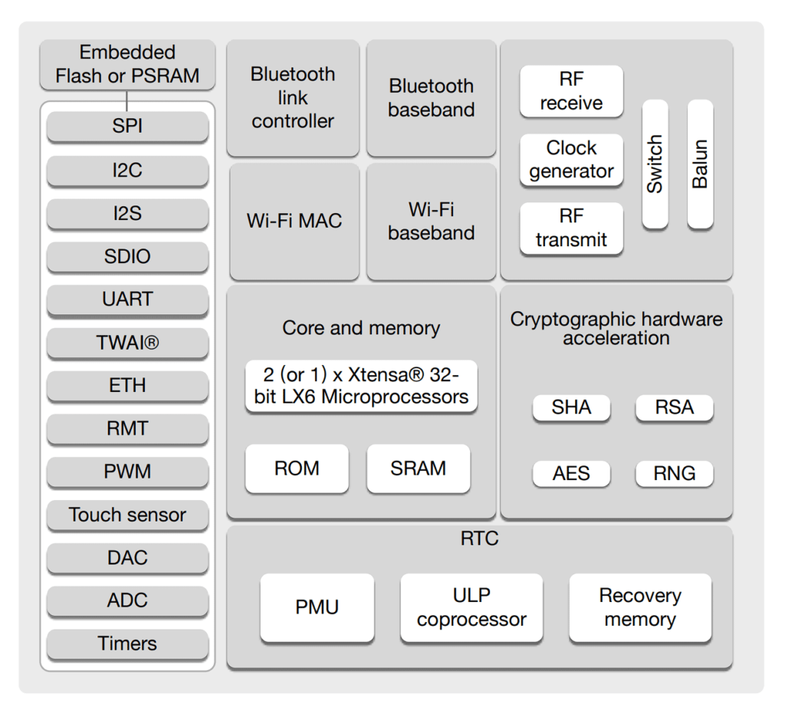
运行多任务（并发）
xxxxxxxxxx// 点灯示例：多任务运行在同核心叫并发。void task1(*pt){ pinMode(21,OUTPUT); while(1){ digitalWrite(21,~digitalRead(21)); vTaskDelay(1000); //ESP32一个tick时间是1ms，所以是1000ms }}
void task2(*pt){ pinMode(23,OUTPUT); while(1){ digitalWrite(23,~digitalRead(23)); vTaskDelay(3000);//3000ms }}void setup(){ // 任务函数名，任务名注释，分配内存，传入参数，优先级，handle(suspend或delete)。 xTaskCreate(task1,"Blink21",1024,NULL,1,NULL); xTaskCreatePinnedToCore(task2,"Blink23",1024,NULL,1,NULL,1);}void loop(){}
ESP32双核心（并行）
现在我们利用 ESP32双核心特性 和 FreeRTOS 来创建两个同时运行的任务。
xxxxxxxxxx// 任务同时在不同核心上运行叫并行。void setup() { int LENPIN = 0; pinMode (LENPIN, OUTPUT);
Serial.begin (115200);
xTaskCreatePinnedToCore ( loop2, // 任务函数名 "loop2", // 任务名字(相当于注释) 1000, // 内存大小(Byte) NULL, // 任务传入参数 0, // 任务优先级 NULL, // 任务句柄( Task handle.) 0 // 核心 );}
void loop() { //默认的loop程序，会一直运行(由机制决定)。 digitalWrite (LENPIN, HIGH); delay (1000); digitalWrite (LENPIN, LOW); delay (1000); }
void loop2 (void* pvParameters) { //该任务和参数的命名可任意，但参数必须是空指针类型。 while (1) { //如果没有while(1)，任务运行一次就结束。 Serial.print ("Hello"); delay (500); Serial.println (" World"); delay (500); }}
任务的传入参数
传入单个参数：
xxxxxxxxxx// 传入参数须为空(泛型)指针的原因：空(泛型)指针可以指向任意类型指针。// 强制类型转换 (void *) 、(byte *) int LEDPIN = 21;传入参数：(void *)&LEDPIN // 传入参数 需强制转换为空指针byte datain = *(byte *)pt // 对传入参数 进行还原传入单个参数：
xxxxxxxxxx// 利用结构体structtypedef struct{ byte LEDPIN; int vDelayTime;}LED;/* 或struct LED{ byte LEDPIN; int vDelayTime;};*/
void setup(){ Serial.begin(115200); // 通过结构体对象访问成员 LED led1, lde2; led1.LEDPIN = 21; led1.vDelayTime = 1000; led2.LEDPIN = 23; led2.vDelayTime = 3000; // 创建一个指向结构体的指针 LED* led1ptr = &led1; LED* led2ptr = &led2; // 使用->操作符访问结构体成员 Serial.println(led1ptr -> LEDPIN); Serial.println(led1ptr -> vDelayTime); Serial.println(led2ptr -> LEDPIN); Serial.println(led2ptr -> vDelayTime);}// 使用->可以访问 结构体或类 的成员变量或函数；
->操作符是.（点号）操作符的间接版本，用于通过指针访问成员。
不同之处：
- .（点号）操作符①用于直接访问结构体或类对象的成员。②操作数是结构体或类的实例（对象）。③通常在栈上分配的对象上使用。
- ->操作符 ①用于通过指向结构体或类对象的指针访问成员。②操作数是指向结构体或类对象的指针。③通常在堆上分配的对象或使用动态内存分配时使用。
互斥锁和信号量
就像在银行和支付宝同时取钱。为了避免错误，防止两个任务同时访问和修改资源而引入。
互斥锁： 多任务，单资源使用时。 Mutex 代表“互斥”，互斥变量可以保持两种状态；
- 只有锁定和解锁（
0或1）两种状态。 - 进程/任务可以通过调用名为acquire()的函数来获取互斥锁，拿钥匙。
- 其他任务在互斥锁处于锁定状态时，会进入 忙等待（自旋锁，只能进入等待状态，不能干其他事）。
- 释放互斥锁：release()，还钥匙。
信号量：表示可用资源的总数的信号。
- 可以处于两种以上的状态。信号量以两种方式实现；计数信号量和二进制信号量。
- 计数信号量：一个整数，一个任务占用时-1，用完释放+1，信号量为0时任务可以等待或执行其他操作。
- 二进制信号量只能计数到 1 或最多处于两种状态（
0和1），充当资源是否正在使用的信号。
API
- SemaphoreHandle_t myxMutex = NULL；信号量句柄可用于创建 任何类型的信号量或互斥体，现在为空。xMutex为自定义名字。
- myxMutex = xSemaphoreCreateMutex(); 创建互斥锁对象。
- myxMutex = xSemaphoreCreateBinary(); 创建二进制信号量。
- myxMutex = xSemaphoreCreateCounting (3, 3);创建计数信号量，参数：①最大值，②初始值。
- xSemaphoreGive (myxMutex); 释放信号量。
- xSemaphoreTake (myxMutex, (200 * portTICK_PERIOD_MS)) 获取互斥锁（信号量），参数：①句柄，②超时值（宏：1ms）。返回值：bool。如果任务在该时间段内无法获取锁，它将暂时停止尝试并打印一条消息。
- xTaskGetTickCount() 获取已等待时间（ms）。
- uxSemaphoreGetCount(myxMutex) 来获取当前空闲信号量的数量。
处理中断
物联网扩展
TCP/IP协议
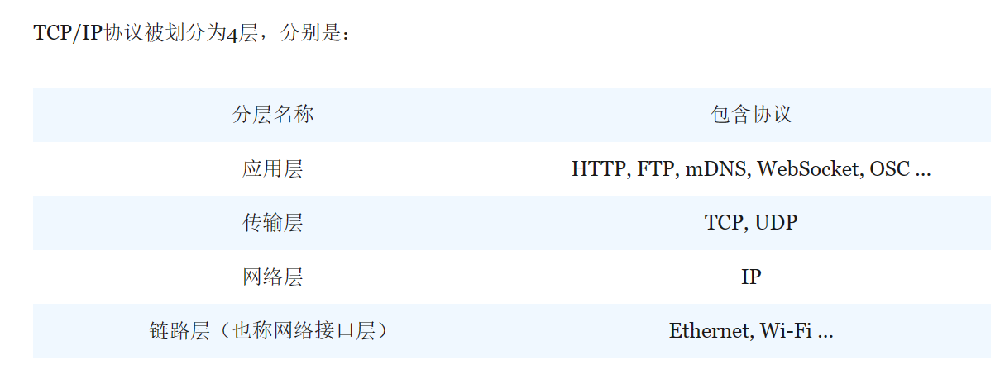
①网络接口层 WIFI：提供设备与网络的通信接口，设备连上WIFI后就可以访问互联网了。
AP模式:接入点模式，提供WIFI。
STA模式:设备终端模式，连接WIFI。
AP/STA：混合模式。
②网络层 IP：网络层主要作用是通过IP协议为联网设备提供IP地址。
IP地址：IPV4: 192.168.0.2。，IPV6：.......
子网掩码：255 . 255 . 255 . 0 。此子网掩码表示IPV4地址前三位数字就是子网地址（固定），最后一个数字是设备序号。
MAC地址: MAC地址是固化在网络设备硬件中的,传输数据需要知道IP地址和MAC地址。
ARP: 让两台完全不认识彼此的设备获取到对方IP和MAC地址的协议就是ARP了。
③传输层 TCP，UDP：
TCP协议更好地保证数据传输的准确性，但是传输速度比UDP协议要慢。文件/邮件。
UDP协议并不能保证所有数据都被接收端所接受，但快一些。视频/语音。
④应用层 HTTP：超文本传输协议，它常被用来传输网页数据。客户端<--->服务器。
POP：邮局协议。FTP：文件传输协议。NTP：网络时间协议。
HTTP协议由请求和响应构成。
1.HTTP请求：
xxxxxxxxxxGET / HTTP/1.1Host: www.bilibili.com// GET/ 表示请求根目录。HTTP/1.1表示协议版本。HOST是请求访问的域名。// HTTP1.0定义了三种请求方法： GET, POST 和 HEAD方法。// HTTP1.1新增了五种请求方法：OPTIONS, PUT, DELETE, TRACE 和 CONNECT 方法。
2.HTTP响应：
xxxxxxxxxxHTTP/1.1 200 OKContent-Type: text/html; charset=UTF-8// HTTP/1.1表示协议版本。响应状态码：200成功完成。404客户端的请求有错误。500服务器端出现错误。// “Content-Type” 指示响应体的内容是什么类型。 ”charset“ 字符集。DNS（域名系统）:DNS让我们可以用易记的域名来访问网站，如www.taobao.com 。
我们可以把DNS看作是一个巨型电话本。联系人就是网站的域名，而电话号码则是这些网站的IP地址。
MQTT
什么是 MQTT？
物联网或物联网只是计算设备、传感器、执行器、无线通信和通信协议的组合。物联网的目标是将一组设备（称为“事物”）连接到互联网并在它们之间交换数据。
现在想象一下，我们已经建立了一个物联网系统，其中包含一堆连接到互联网的设备，并希望“近乎实时”地发送和接收数据。我们可以使用基于HTTP的服务器 - 客户端风格的通信系统。但是，如果我告诉您有一个专门为此类需求设计的协议呢？这就是已知的MQTT。
MQTT 是消息队列遥测传输的缩写。它是一种轻量级的消息传递协议，在TCP / IP之上的发布 - 订阅模型（类似于HTTP 的服务器 - 客户端模型，但略有不同）。
当我们说“轻量级”时，我们的意思是比HTTP更小的代码占用空间，并且需要更少的网络带宽。
IBM 最初将 MQTT 开发为一种简单可靠的机器到机器 （M2M） 通信协议。但多年来，它慢慢成为嵌入式系统不可或缺的一部分，尤其是物联网项目。
以下是 MQTT 的一些重要功能的列表：
- 它使用发布 – 订阅模型进行一对多通信。
- 一种极其轻量级的协议，代码占用量小。传输消息和协议交换的开销很小。
- 它是一种消息传递协议，在不知道消息的实际内容的情况下工作。
- MQTT 支持面向事件的消息传递，具有异步、双向和低延迟的消息传递。
- 它支持“始终连接”和“有时连接”的设备。
- MQTT 的响应能力是“近实时”消息传递。
- 即使在缓慢、不可靠或脆弱的网络上也可以发布数据。
- 它提供数据安全和隐私。当数据通过互联网时，这一点非常重要。
- 适用于电池供电和低功耗设备。
MQTT Client Broker 和其他重要术语
为了理解它的工作原理，我们需要首先熟悉一些与 MQTT 相关的重要术语。
应用消息 Application Message
这是 MQTT 协议在网络中携带的实际数据（带有一些开销）。开销可以是主题名称（稍后会详细介绍）、QoS（服务质量）信息等。
MQTT 客户端和代理 MQTT Client and Broker
我们之前说过，MQTT协议类似于HTTP的服务器-客户端模型。这是真的，但有一些警告。首先，我们将了解客户端。MQTT 客户端是运行 MQTT 库并通过互联网连接到服务器（或确切地说是代理）的设备（或程序）。
如果客户端想要将应用程序消息发送到另一个客户端，它不会直接执行此操作，而是将其发送到代理，然后代理检查消息的真实性并将其发送到适当的客户端。
MQTT 代理是一个设备（或程序），充当发布主题消息的客户端和订阅该主题的客户端之间的中间设备。
除了对客户端进行身份验证外，代理还负责管理订阅、会话和连接。MQTT 客户端和代理可以是微型微控制器、树莓派、ESP8266、ESP32 甚至大型服务器。
主题 Topic
我们之前说过“主题”，但 MQTT 中的主题到底是什么？主题是与消息关联的标签，通常是整个应用程序消息的一部分。每个订阅者客户端都必须订阅一个主题，并且当且仅当客户端具有匹配的订阅时，代理才会从发布者客户端发送消息。
例如，如果存在一个名为“天气”的主题，并且当客户端发布包含此主题的消息时，订阅此主题的所有客户端都将收到该消息。
可以有多个级别的主题，每个级别的主题用正斜杠分隔。此外，主题区分大小写。
订阅 Subscription
这是客户对特定主题甚至QoS的安排。客户端必须订阅某个主题才能接收有关该主题的消息。所有订阅对会话都有效。
主题过滤器 Topic Filter
客户端可以使用主题筛选器同时订阅多个主题。它可以包含通配符，例如“+”和“#”。
会话 Session
会话表示客户端（发布者或订阅者）与代理之间的成功交互。
控制数据包 Control Packet
它是来自 14 个控制数据包之一的信息包。PUBLISH 也是负责发布应用程序消息的控制数据包。
发布 – 订阅 Publish – Subscribe
此时，您可能已经对 MQTT 的发布-订阅模型有了清晰的认识。在这种情况下，客户端不直接发送消息。客户端将有关主题的消息“发布”给代理。如果任何客户端“订阅”了该主题，则只有这样它才会收到该消息。
MQTT 如何工作？
现在让我们看看 MQTT 是如何工作的。它是一种通过 TCP/IP 工作的客户端 – 服务器消息传输协议。在常规客户端 – 服务器模型中，通信仅限于客户端和服务器，客户端在其中发起通信，服务器本质上存储数据，使用数据进行响应。
但物联网（和其他类似应用）的要求是数据必须在多个设备之间传输，这些设备可以是单向的、双向的或一对多的。
这就是 MQTT 的发布-订阅模型派上用场的地方。在此模型中，客户端不会直接向其他客户端发送数据，而是将消息“发布”给代理的客户端，该客户端将消息发送到代理。
如果有客户端“订阅”了该主题，则代理会将消息发送给所有这些客户端。在这里，代理充当中介而不是主要数据提供者（这是常规客户端 - 服务器模型中服务器的工作）。
此模型中没有地址。所有的沟通都是基于主题的。客户端发布有关某个主题的消息，如果客户端订阅了该主题，则客户端会收到该消息。经纪人负责订阅主题。
如果发布者由于网络问题或任何其他原因无法发送消息，它可以向订阅客户端发送“最后遗嘱消息”，说这是最后一条消息。如果代理和发布服务器之间的连接失败，则代理会将这最后一条消息发送给所有订阅者。
MQTT在家庭自动化和物联网项目中的重要性
正如我们前面提到的，IBM 最初将 MQTT 开发为一种轻量级消息传递协议，用于石油和天然气行业的机器对机器 （M2M） 通信。由于其代码量小，即使在网络较弱的情况下也具有可靠性，因此它慢慢成为物联网项目不可或缺的一部分。
- 易于实施：MQTT非常容易实现。当我们与HTTP相比时，它的代码大小非常小。这意味着内存要求和网络要求都非常适中。使用 MQTT 也很简单，使用 Raspberry Pi、ESP32 等设备。
- 多种沟通方式：MQTT 使用发布 – 订阅通信模型，其中发布者发布有关主题的消息，如果订阅者订阅了该消息，则它将收到该消息。没有直接的客户端到客户端通信，所有数据流经代理。您可以实现一对一、双向以及一对多的通信方式。
- 质量安全：MQTT 的服务质量或 QoS 确保代理一旦收到消息，即使网络出现问题，也会传输到适当的客户端。
- 易于扩展：小型 IoT 实施的好处是，您可以通过添加更多设备轻松扩展操作。MQTT 协议可以轻松适应这种扩展，因为没有要存储的地址或名称，并且一切都以主题发布和主题订阅方式工作。
MQTT 的优势
除了物联网项目，我们可以MQTT是其他几个领域，例如：SCADA（监督控制和数据采集）系统，POS（销售点）机器，交通监控，家庭自动化等。以下是 MQTT 的优势。
- 简单的沟通
- 可以非常有效地传输信息
- 更少的代码开销和较小的代码大小
- 更少的网络带宽要求
- 设备/服务的发现非常容易，出错的可能性更小
- 您可以在不干扰网络的情况下轻松修改系统
- 在发布-订阅模型中没有即时传递消息的轮询
- 您可以轻松扩展系统以涉及其他设备
- 非常适合远程监控、传感和控制
- 具有非常好的安全措施来保护数据
结论
这是在 MQTT 的介绍性指南中。这是一个非常有趣的话题，特别是如果您正在使用物联网项目或家庭自动化系统（或其他类似应用程序）。如果您喜欢DIY项目，那么您可以使用Raspberry Pi，Arduino，Beaglebone Black，ESP8266，ESP32或其他具有互联网连接的类似板子使用MQTT进行通信（从传感器发送数据或控制电机）。
我们了解了什么是 MQTT，它是如何工作的，它的基本结构和元素以及术语。我们也看到了该协议的一些优势。如果您有兴趣，我们可以通过做更多关于这个主题的项目来更深入地了解 MQTT 的世界。
JSON&SPIFFS
我们将以 JSON 格式排列数据。
JSON 或 JavaScript 对象表示法是一种轻量级的数据交换格式，用于多种应用程序。它很容易被机器和人类读取，并用于在其他不兼容的系统之间交换数据。
JSON 文档的格式如下所示：
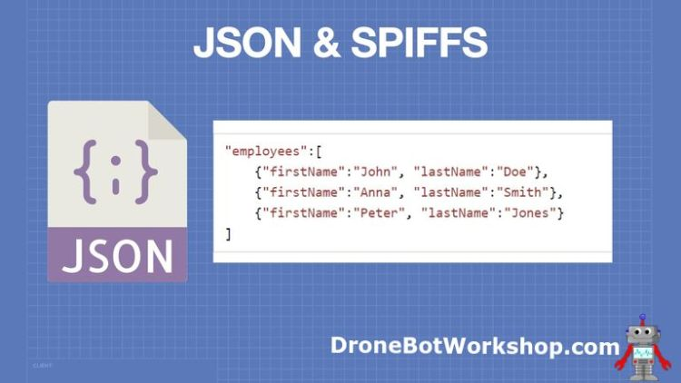
现在我们已经安排好了数据，我们需要一种将其存储在闪存中的方法。这就是SPIFFS的用武之地。
SPIFFS 是 SPI Flash File System 的缩写。它是与 NOR-gate 嵌入式闪存一起使用的文件系统，这是 ESP32 中包含的内存类型。
SPIFFS允许您几乎像对待SD或MicroSD卡内存一样对待内存。我说“几乎”，因为有一些差异。一个区别是 SPIFFS 不支持目录，尽管您可以在一定程度上模仿它们。
闪存的写入操作数量有限，因此SPIFFS采用多种技术来最大限度地延长存储器的使用寿命。格式化或擦除内存时，所有位都设置为 1。当数据写入内存时，只有需要拉到零的位会受到影响。SPIFFS还使用“磨损均衡”将数据平均分布到内存中。
通过使用 JSON 和 SPIFFS，我们可以在 ESP32 中存储大量的配置信息，大多数 ESP32 设备为 SPIFFS 分配大约 1.5Mb。
ESP_PlatformIO
第一次建有关芯片的工程需要挂梯子
代码翻译工具
1.全部翻译为中文（效果可以但不太好用）
修改为自动翻译文件地址 在该路径的index.html文件末尾添加如下代码
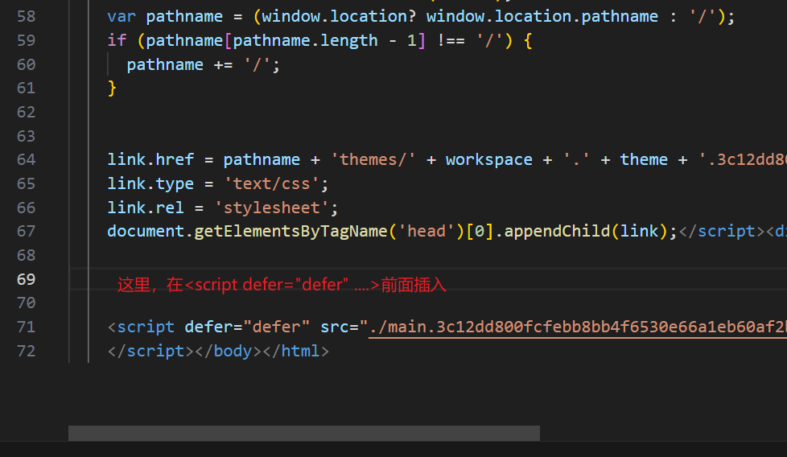
xxxxxxxxxx <script> var head= document.getElementsByTagName('head')[0]; var script= document.createElement('script'); script.type= 'text/javascript'; script.src= 'https://res.zvo.cn/translate/translate.js'; script.onload = script.onreadystatechange = function() { translate.selectLanguageTag.show = false; translate.setUseVersion2(); translate.ignore.tag.push('small'); translate.changeLanguage('chinese_simplified'); translate.listener.start(); translate.execute(); } head.appendChild(script); </script>2.VSCODE插件 Code Translate。可以实现代码悬浮选词翻译。
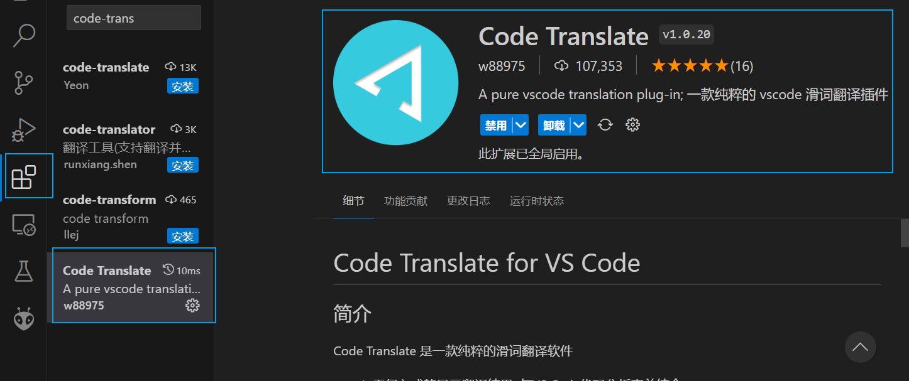
触摸小键盘
xxxxxxxxxx
//包含两个库一个是DHT11 一个是Adafruit Sensor//DHT11 OneWire PINDHT dht(DHT11PIN, DHT11);
//BleKeyboard bleKeyboard;BleKeyboard bleKeyboard("CXZ ESP32", "Espressif", 100);//设备名 ，制造商 ，时间限制S
// OLED display 宽(128像素)// OLED display 高(64像素)/* 连接到 I2C 的SSD1306显示器的声明（SDA、SCL 引脚）*/// 重置引脚 #（如果OLED没有重置引脚，则为 -1）///I2C设备地址， I2C 的引脚由Wire库定义。Adafruit_SSD1306 display(SCREEN_WIDTH, SCREEN_HEIGHT, &Wire, OLED_RESET);static const unsigned char PROGMEM logo_bmp[] ={ 0b00000000, 0b11000000, 0b00000001, 0b11000000, 0b00000001, 0b11000000, 0b00000011, 0b11100000, 0b11110011, 0b11100000, 0b11111110, 0b11111000, 0b01111110, 0b11111111, 0b00110011, 0b10011111, 0b00011111, 0b11111100, 0b00001101, 0b01110000, 0b00011011, 0b10100000, 0b00111111, 0b11100000, 0b00111111, 0b11110000, 0b01111100, 0b11110000, 0b01110000, 0b01110000, 0b00000000, 0b00110000 };//开机图片
int NUM= 0, NUM_Storage= 0 , Num_IN= 10;//NumKey是每次键入的值，char SIGN_IN='0', SIGN_Storage='0';bool enter_equal = false ; //是否点击了=号的标志const int Button_UP = 25; const int Button_DOWN = 26;//两个功能按键int ble_state = 0; //0为初始, 1开启, 2为已开启int send_state = 0; //发送数据状态
void keyScan(); //键盘扫描void Rule(); //运算逻辑void drawchar();//OLED显示void KeyAdd(); //对输入的数字进行累计显示void ShowRP(); //读取显示可调电位器void ShowDHT(); //读取显示DHT11温湿度传感器
void IRAM_ATTR Start_BLE()// 上面按键中断打开 开启蓝牙{ ble_state = 1;}void IRAM_ATTR Send_Message()// 下面的按键中断打开 电脑计算器{ bleKeyboard.write(KEY_MEDIA_CALCULATOR);}
void setup(){ Serial.begin(115200); dht.begin(); //DHT11初始化 //四行按键，输出 pinMode(T3,OUTPUT);pinMode(T0,OUTPUT);pinMode(T4,OUTPUT);pinMode(T5,OUTPUT); //四列按键初始化，下拉，默认低电平 pinMode(T6,INPUT_PULLDOWN);pinMode(T7,INPUT_PULLDOWN); pinMode(T8,INPUT_PULLDOWN);pinMode(T9,INPUT_PULLDOWN);
pinMode(Button_UP,INPUT_PULLDOWN);pinMode(Button_DOWN,INPUT_PULLDOWN);//两个按键初始化 attachInterrupt(digitalPinToInterrupt(Button_UP), Start_BLE, RISING); //高电平中断 attachInterrupt(digitalPinToInterrupt(Button_DOWN), Send_Message, RISING); //高电平中断 bleKeyboard.setBatteryLevel(85);//设置蓝牙设备 在电脑上显示的电量
if(!display.begin(SSD1306_SWITCHCAPVCC, SCREEN_ADDRESS)) { Serial.println(F("SSD1306 加载失败")); for(;;); }// 无法加载时，一直停留 display.display();//显示一张图片 delay(1000); // 暂停 1 秒 display.clearDisplay(); // 清空缓存区 }
void loop() //主程序{ if( ble_state==1 && digitalRead(Button_UP)==HIGH ) { bleKeyboard.begin(); while( !bleKeyboard.isConnected() ) {Serial.println("等待5秒!");delay(5000);}//停滞检查是否连接到 Serial.print("BLE ok");//蓝牙连接成功 ble_state==2;//保证开启蓝牙后不再进入 }
keyScan(); //扫描按键 Rule(); //运算 drawchar(); //OLED显示}
void keyScan(){ /***************** 打开第一行，扫描第一行中的四列 ******************/ digitalWrite(T3,HIGH);digitalWrite(T0,LOW);digitalWrite(T4,LOW);digitalWrite(T5,LOW); if(digitalRead(T6)==HIGH) { if(ble_state!=1){SIGN_IN = '+'; Serial.println('+');} bleKeyboard.press(KEY_LEFT_CTRL); bleKeyboard.press('x'); bleKeyboard.releaseAll(); while(digitalRead(T6)==HIGH); }// 实现了Ctrl+x。 如果写bleKeyboard.write(0xDF);这句可以向电脑写＋ if(digitalRead(T7)==HIGH) { if(ble_state!=1){SIGN_IN = '-'; Serial.println('-');} bleKeyboard.press(KEY_LEFT_CTRL); bleKeyboard.press('c'); bleKeyboard.releaseAll(); while(digitalRead(T7)==HIGH); }// 实现了Ctrl+c。 如果写bleKeyboard.write(0xDE);这句可以向电脑写- if(digitalRead(T8)==HIGH) { if(ble_state!=1){SIGN_IN = '*'; Serial.println('*');} bleKeyboard.press(KEY_LEFT_CTRL); bleKeyboard.press('v'); bleKeyboard.releaseAll(); while(digitalRead(T8)==HIGH); }// 实现了Ctrl+v。 如果写bleKeyboard.write(0xDD);这句可以向电脑写* if(digitalRead(T9)==HIGH) { SIGN_IN = '/'; Serial.println('/'); bleKeyboard.write(0xDC); while(digitalRead(T9)==HIGH); }// bleKeyboard.write(0xDC);实现了写/
/***************** 打开第二行，扫描第二行中的四列 ******************/ digitalWrite(T3,LOW);digitalWrite(T0,HIGH);digitalWrite(T4,LOW);digitalWrite(T5,LOW); if(digitalRead(T6)==HIGH) {Num_IN = 7; bleKeyboard.print("7");Serial.println(7);while(digitalRead(T6)==HIGH);} if(digitalRead(T7)==HIGH) {Num_IN = 8; bleKeyboard.print("8");Serial.println(8);while(digitalRead(T7)==HIGH);} if(digitalRead(T8)==HIGH) {Num_IN = 9; bleKeyboard.print("9");Serial.println(9);while(digitalRead(T8)==HIGH);} if(digitalRead(T9)==HIGH) {SIGN_IN = 'c'; Serial.println('c');while(digitalRead(T9)==HIGH);} //计算机中为dot.点 ->写 bleKeyboard.write(0xEB); OLED中为c 清空
/***************** 打开第三行，扫描第三行中的四列 ******************/ digitalWrite(T3,LOW);digitalWrite(T0,LOW);digitalWrite(T4,HIGH);digitalWrite(T5,LOW); if(digitalRead(T6)==HIGH) {Num_IN = 4; Serial.println(4);bleKeyboard.print("4");while(digitalRead(T6)==HIGH);} if(digitalRead(T7)==HIGH) {Num_IN = 5; Serial.println(5);bleKeyboard.print("5");while(digitalRead(T7)==HIGH);} if(digitalRead(T8)==HIGH) {Num_IN = 6; Serial.println(6);bleKeyboard.print("6");while(digitalRead(T8)==HIGH);} if(digitalRead(T9)==HIGH) {Num_IN = 0; Serial.println(0);bleKeyboard.print("0");while(digitalRead(T9)==HIGH);}
/***************** 打开第四行，扫描第四行中的四列 ******************/ digitalWrite(T3,LOW);digitalWrite(T0,LOW);digitalWrite(T4,LOW);digitalWrite(T5,HIGH); if(digitalRead(T6)==HIGH) {Num_IN = 1; Serial.println(1);bleKeyboard.print("1");while(digitalRead(T6)==HIGH);} if(digitalRead(T7)==HIGH) {Num_IN = 2; Serial.println(2);bleKeyboard.print("2");while(digitalRead(T7)==HIGH);} if(digitalRead(T8)==HIGH) {Num_IN = 3; Serial.println(3);bleKeyboard.print("3");while(digitalRead(T8)==HIGH);} if(digitalRead(T9)==HIGH) {SIGN_IN = '='; Serial.println('='); bleKeyboard.write(KEY_RETURN);while(digitalRead(T9)==HIGH);}//OLED =键 和 电脑enter键}
void KeyAdd() //实现键入多位数的效果，int范围 21亿以内运算{ if(Num_IN<10) //这是为了让Num_IN=10的默认值不符合该条件，不进入运算 { NUM=NUM*10+Num_IN; Num_IN=10; //每次输入完成后进行值的回滚 } }
void Rule(){ KeyAdd(); //判断为数字，则为数字输入 if(SIGN_IN=='c') //清零 { NUM=0; NUM_Storage=0; SIGN_Storage='0'; SIGN_IN='0'; // esp_restart ();这调代码可以重启ESP32 } if(SIGN_IN=='+') //加法 { SIGN_Storage='+'; //将符号'+'存到变量SIGN_Storage SIGN_IN='0'; //符号清零 NUM_Storage=NUM; //将加数0存到变量NUM0 NUM=0; } if(SIGN_IN=='-') //减法 { SIGN_Storage='-'; SIGN_IN='0'; NUM_Storage=NUM; NUM=0; } if(SIGN_IN=='*') //乘法 { SIGN_Storage='*'; SIGN_IN='0'; NUM_Storage=NUM; NUM=0; } if(SIGN_IN=='/') //除法 { SIGN_Storage='/'; SIGN_IN='0'; NUM_Storage=NUM; NUM=0; } if(SIGN_IN=='=') //检测到符号为等号，则进行运算 { if(SIGN_Storage=='+') NUM=NUM_Storage+NUM; else if(SIGN_Storage=='-') NUM=NUM_Storage-NUM; else if(SIGN_Storage=='*') NUM=NUM_Storage*NUM; else if(SIGN_Storage=='/') NUM=NUM_Storage/NUM; SIGN_IN='0'; NUM_Storage=0; SIGN_Storage = '0'; enter_equal = true ; }}
void ShowRP()//读取和显示旋转电位器{ int val = analogRead(2); display.setCursor(0, 16);//横坐标48 ，纵坐标16 display.print("Route:");display.print(val);}
void ShowDHT()//读取和显示DHT{ float Humidity = dht.readHumidity(); float Temperature = dht.readTemperature(); display.setCursor(0, 32); display.print("T: ");display.print(Temperature);display.print("C ");//温度 display.print("H: ");display.print(Humidity);display.print("%"); //湿度}
void drawchar(void) //OLED写字符{ display.clearDisplay(); //清屏 display.setTextSize(2); // 2规格大小,16*12 display.setTextColor(SSD1306_WHITE); // 正常颜色显示，BLACK为反显 display.setCursor(0, 0); // 从左上角开始(X横 max128,Y纵 max64) if(NUM_Storage == 0 ) //1 { display.print(NUM); //将输入值存到OLED显示缓冲区 ShowRP(); ShowDHT(); display.display();delay(200); //将加载的内容显示，延时是控制ADC读取速度 enter_equal = false; //按下=后enter_equal回滚,变回初始值，方便进行二次运算。 } if(SIGN_Storage !='0' && NUM==0) //2 运行到这里NUM值为零 { display.print(NUM_Storage);display.print(SIGN_Storage); ShowRP(); ShowDHT(); display.display();delay(200);//将加载的内容显示 } if(SIGN_Storage !='0' && NUM!=0 && enter_equal == false) //3 NUM值不为零 SIGN进行判断后始终为零 { display.print(NUM_Storage);display.print(SIGN_Storage);display.print(NUM); ShowRP(); ShowDHT(); display.display();delay(200);//将加载的内容显示 }}
//计算器逻辑//首先 SIGN_IN 和 Num_IN是每次输入的值（数字或符号），NUM是已输入的值和计算后的值。SIGN_Storage是把按下的符号存住。NUM_Storage是按下运算符号后的以前输入的值。//所以1.在按下符号之前，也就是NUM_Storage =='0'时，只显示NUM。// 2.在按下符号后，也就是SIGN_Storage !='0'并且SIGN_Storage !='='时，// 只显示之前输入的值（NUM_Storage）和符号SIGN_Storage// 3.在输入第二段时，SIGN_Storage !='0'并且SIGN_Storage !='=' // 先显示之前输入的值（NUM_Storage）和符号SIGN_Storage，再显示正在输入的值（NUM）// 4.按下等于号时，直接显示结果NUM与1相同//5.要实现二次运算，需要在第4步后进行回滚，即让其所有变量回到第一步的初始状态 //使用串口调试，分别打印在初始（0000）和运算结束() 四个变量状态信息，也就是把SIGN_Storage=0，还要把enter_equal回滚(因为进入第3步要判断 是否按下等于 状态)
// 蓝牙键盘发送数据的函数 和 一些按键参数// void Button()// {// bleKeyboard.begin(); //开启蓝牙键盘// bleKeyboard.write(KEY_MEDIA_PLAY_PAUSE);// bleKeyboard.print("HELLO");// bleKeyboard.press(KEY_LEFT_CTRL);// bleKeyboard.press(KEY_LEFT_ALT);// bleKeyboard.press('n');// bleKeyboard.setBatteryLevel(50);// bleKeyboard.setDelay(10);// bleKeyboard.release();bleKeyboard.releaseAll();// const uint8_t KEY_NUM_0 = 0xEA;// const uint8_t KEY_NUM_1 = 0xE1;// const uint8_t KEY_NUM_2 = 0xE2;// const uint8_t KEY_NUM_3 = 0xE3;// const uint8_t KEY_NUM_4 = 0xE4;// const uint8_t KEY_NUM_5 = 0xE5;// const uint8_t KEY_NUM_6 = 0xE6;// const uint8_t KEY_NUM_7 = 0xE7;// const uint8_t KEY_NUM_8 = 0xE8;// const uint8_t KEY_NUM_9 = 0xE9;// const uint8_t KEY_NUM_ENTER = 0xE0; //NUM_ENTER// const MediaKeyReport KEY_MEDIA_VOLUME_UP = {32, 0}; //升高音量// const MediaKeyReport KEY_MEDIA_VOLUME_DOWN = {64, 0};//降低音量// const uint8_t KEY_LEFT_CTRL = 0x80; //CTRL// const uint8_t KEY_LEFT_SHIFT = 0x81;//SHIFT// const uint8_t KEY_LEFT_ALT = 0x82; //ALT// const uint8_t KEY_BACKSPACE = 0xB2; //回退// const uint8_t KEY_TAB = 0xB3; //TAB// const uint8_t KEY_RETURN = 0xB0; //ENTER// const uint8_t KEY_ESC = 0xB1; //ESC// const uint8_t KEY_DELETE = 0xD4; //删除// }